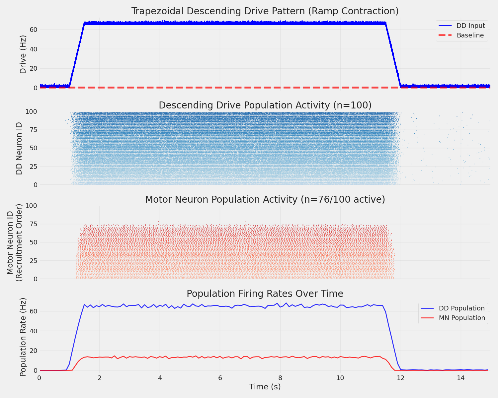
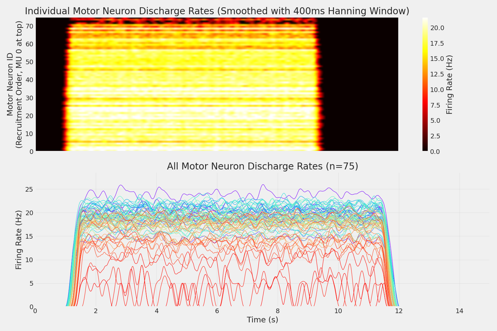

Note
Go to the end to download the full example code.
Spike Train Generation with Descending Drive#
This example demonstrates realistic spike train simulation using sinusoidal descending drive (DD) instead of direct current injection. This approach provides more physiologically accurate motor control patterns by modeling cortical input through descending drive populations.
Note
This example bridges the gap between simple current injection (example 01) and full spinal network simulation (network_config.py). It uses:
DescendingDrive__Pool: Poisson process neurons modeling cortical input
AlphaMN__Pool: Biophysically detailed motor neurons (Powers2017 model)
Network: Synaptic connections between DD and motor neuron populations
Sinusoidal patterns: Smooth, physiologically relevant input at 0.5-2 Hz
Important
Descending Drive (DD) refers to the cortical and subcortical neural pathways that provide voluntary motor commands to spinal motor neurons. This is more realistic than direct current injection because it models the actual synaptic input patterns from upper motor neurons.
Import Libraries#
Important
In MyoGen all random number generation is handled by the RANDOM_GENERATOR object.
This object is a wrapper around the numpy.random module and is used to generate random numbers.
It is intended to be used with the following API:
from myogen import simulator, RANDOM_GENERATOR
To change the default seed, use set_random_seed:
from myogen import set_random_seed
set_random_seed(42)
import itertools
from pathlib import Path
import elephant
import joblib
import numpy as np
import quantities as pq
from matplotlib import pyplot as plt
from neo import AnalogSignal, Block, Segment, SpikeTrain
from neuron import h
from tqdm import tqdm
from myogen import RANDOM_GENERATOR
from myogen.simulator.neuron import Network
from myogen.simulator.neuron.populations import AlphaMN__Pool, DescendingDrive__Pool
from myogen.utils.nmodl import load_nmodl_mechanisms
from myogen.utils.types import pps
plt.style.use("fivethirtyeight")
Create Populations#
Like the previous example, we create a motor neuron pool using the AlphaMN__Pool class.
We also create a DescendingDrive__Pool to represent the cortical input.
Note
These neurons are modeled as Poisson point processes to convert the smooth input signal into realistic
spike patterns that represent cortical input to the spinal cord.
load_nmodl_mechanisms()
save_path = Path("./results")
save_path.mkdir(exist_ok=True)
recruitment_thresholds = joblib.load(save_path / "thresholds.pkl")
motor_neuron_pool = AlphaMN__Pool(
recruitment_thresholds__array=recruitment_thresholds,
config_file="alpha_mn_default.yaml",
)
timestep = 0.1 * pq.ms
h.secondorder = 2 # Crank-Nicolson method (second-order accurate)
descending_drive_pool = DescendingDrive__Pool(n=100, poisson_batch_size=5, timestep__ms=timestep)
Generate Trapezoidal Drive Pattern#
Create a trapezoidal ramp contraction pattern that represents realistic voluntary isometric contractions. This pattern has 4 phases: 1. Ramp-up: Linear increase from baseline to peak 2. Plateau: Sustained peak drive level 3. Ramp-down: Linear decrease from peak to baseline 4. Rest: Baseline activity
This is a common experimental paradigm used in motor control studies.
simulation_time = 15000 * pq.ms
time_points = int(simulation_time / timestep)
# Trapezoidal parameters
dd_baseline__pps = 0.0 * pps # Baseline drive during rest
dd_peak__pps = 65 * pps # Peak drive during plateau
# Phase durations (ms) - Total trapezoid duration: 13000ms
ramp_up_duration = 500 * pq.ms # 2s ramp up
plateau_duration = 10000 * pq.ms # 9s hold
ramp_down_duration = 500 * pq.ms # 2s ramp down
# Add rest periods before and after
rest_before = 1000 * pq.ms # 1s rest before trapezoid
rest_after = 1000 * pq.ms # 1s rest after trapezoid
# Center the trapezoid at 7.5s (middle of 15s simulation)
# Calculate phase boundaries with rest period before
trapezoid_start = rest_before # Start at 1s
ramp_up_end = trapezoid_start + ramp_up_duration # 3s
plateau_end = ramp_up_end + plateau_duration # 12s
ramp_down_end = plateau_end + ramp_down_duration # 14s
# Create time array
time_array = np.linspace(0, simulation_time.magnitude, time_points) * pq.ms
# Initialize drive signal (all baseline)
trapezoid_drive = np.ones(time_points) * dd_baseline__pps
for i, t in enumerate(time_array):
if t < trapezoid_start:
# Phase 0: Rest before
trapezoid_drive[i] = dd_baseline__pps
elif t < ramp_up_end:
# Phase 1: Ramp up
elapsed = t - trapezoid_start
trapezoid_drive[i] = dd_baseline__pps + (dd_peak__pps - dd_baseline__pps) * (
elapsed / ramp_up_duration
)
elif t < plateau_end:
# Phase 2: Plateau
trapezoid_drive[i] = dd_peak__pps
elif t < ramp_down_end:
# Phase 3: Ramp down
elapsed = t - plateau_end
trapezoid_drive[i] = dd_peak__pps - (dd_peak__pps - dd_baseline__pps) * (
elapsed / ramp_down_duration
)
else:
# Phase 4: Rest after
trapezoid_drive[i] = dd_baseline__pps
# Add small noise for realism
trapezoid_drive = (
trapezoid_drive + np.clip(RANDOM_GENERATOR.normal(0, 1.0, size=time_points), 0, None) * pps
)
# Create AnalogSignal
trapezoid_drive_signal = AnalogSignal(
signal=trapezoid_drive, sampling_period=timestep.rescale(pq.s)
)
joblib.dump(trapezoid_drive_signal, save_path / "trapezoid_drive_pattern.pkl")
print(
f"\n Trapezoidal drive pattern (1000ms trapezoid centered in {simulation_time}ms simulation):"
)
print(f"\tRest before: 0 - {trapezoid_start} ms ({dd_baseline__pps} pps)")
print(f"\tRamp up: {trapezoid_start} - {ramp_up_end} ms ({dd_baseline__pps} → {dd_peak__pps} pps)")
print(
f"\tPlateau: {ramp_up_end} - {plateau_end} ms ({dd_peak__pps} pps, center at {(ramp_up_end + plateau_end) / 2:.0f}ms)"
)
print(f"\tRamp down: {plateau_end} - {ramp_down_end} ms ({dd_peak__pps} → {dd_baseline__pps} pps)")
print(f"\tRest after: {ramp_down_end} - {simulation_time} ms ({dd_baseline__pps} pps)")
Trapezoidal drive pattern (1000ms trapezoid centered in 15000.0 msms simulation):
Rest before: 0 - 1000.0 ms ms (0.0 pps pps)
Ramp up: 1000.0 ms - 1500.0 ms ms (0.0 pps → 65.0 pps pps)
Plateau: 1500.0 ms - 11500.0 ms ms (65.0 pps pps, center at 6500 msms)
Ramp down: 11500.0 ms - 12000.0 ms ms (65.0 pps → 0.0 pps pps)
Rest after: 12000.0 ms - 15000.0 ms ms (0.0 pps pps)
Create Network and Connections#
In MyoGen, populations can be connected using the Network class from the myogen.simulator.neuron module.
The Network class provides a high-level interface for creating and managing connections between neuron populations.
# Use the **Network** class to create synaptic connections between the descending drive
# population and the motor neuron pool. This creates realistic synaptic transmission
# with appropriate delays and weights.
#
network = Network({"DD": descending_drive_pool, "aMN": motor_neuron_pool})
# Connect DD neurons to motor neurons with realistic synaptic parameters
network.connect(source="DD", target="aMN", probability=0.5, weight__uS=0.15 * pq.uS)
# Set up external input to DD population
network.connect_from_external(source="cortical_input", target="DD", weight__uS=1.0 * pq.uS)
# Get NetCons for manual DD stimulation
dd_netcons = network.get_netcons("cortical_input", "DD")
Setup Spike Recording#
To record spikes, we need to manually set up spike detection for the motor neurons and track spike times for the DD neurons.
# Manual spike tracking for DD neurons (they use Poisson processes)
dd_spike_times = [[] for _ in range(len(descending_drive_pool))]
# Record spikes from motor neurons
mn_spike_recorders = []
for cell in motor_neuron_pool:
spike_recorder = h.Vector()
nc = h.NetCon(cell.soma(0.5)._ref_v, None, sec=cell.soma)
nc.threshold = 50 # Standard threshold for motor neurons
nc.record(spike_recorder)
mn_spike_recorders.append(spike_recorder)
Run Simulation#
Execute the NEURON simulation with real-time injection of the sinusoidal drive pattern. The DD neurons receive time-varying input that drives their Poisson processes.
h.load_file("stdrun.hoc") # Load standard run library for NEURON
h.dt = timestep
h.tstop = simulation_time
# Initialize voltages for all pools
for section, voltage in itertools.chain.from_iterable(
zip(*pool.get_initialization_data()) for pool in [motor_neuron_pool, descending_drive_pool]
):
section.v = voltage
h.finitialize()
# Calculate total simulation steps for progress bar
total_steps = int(simulation_time / timestep)
step_counter = 0
with tqdm(
total=float(simulation_time),
desc="Running simulation",
unit="ms",
bar_format="{l_bar}{bar}| {n:.2f}/{total:.2f} ms [{elapsed}<{remaining}, {rate_fmt}]",
) as pbar:
while h.t < h.tstop:
current_drive = trapezoid_drive_signal[min(step_counter, len(trapezoid_drive_signal) - 1)]
# Drive DD neurons with current input level
for dd_cell in descending_drive_pool:
if dd_cell.integrate(current_drive):
# Record spike time for DD neuron
dd_spike_times[dd_cell.pool__ID].append(h.t)
# Generate spike in DD neuron
spike_time = h.t + 1
if spike_time < h.tstop: # Avoid scheduling beyond simulation end
dd_netcons[dd_cell.pool__ID].event(spike_time)
# Progress simulation
h.fadvance()
step_counter += 1
pbar.update(float(timestep))
Running simulation: 0%| | 0.00/15000.00 ms [00:00<?, ?ms/s]
Running simulation: 0%| | 9.60/15000.00 ms [00:00<02:36, 95.83ms/s]
Running simulation: 0%| | 19.70/15000.00 ms [00:00<02:32, 98.38ms/s]
Running simulation: 0%| | 30.10/15000.00 ms [00:00<02:29, 100.17ms/s]
Running simulation: 0%| | 40.20/15000.00 ms [00:00<02:29, 100.23ms/s]
Running simulation: 0%| | 50.30/15000.00 ms [00:00<02:33, 97.08ms/s]
Running simulation: 0%| | 60.70/15000.00 ms [00:00<02:31, 98.81ms/s]
Running simulation: 0%| | 70.60/15000.00 ms [00:00<02:33, 97.07ms/s]
Running simulation: 1%| | 80.50/15000.00 ms [00:00<02:33, 97.23ms/s]
Running simulation: 1%| | 90.50/15000.00 ms [00:00<02:32, 97.99ms/s]
Running simulation: 1%| | 100.40/15000.00 ms [00:01<02:34, 96.51ms/s]
Running simulation: 1%| | 112.10/15000.00 ms [00:01<02:25, 102.22ms/s]
Running simulation: 1%| | 122.40/15000.00 ms [00:01<02:27, 100.87ms/s]
Running simulation: 1%| | 132.70/15000.00 ms [00:01<02:26, 101.22ms/s]
Running simulation: 1%| | 142.90/15000.00 ms [00:01<02:27, 100.41ms/s]
Running simulation: 1%| | 153.00/15000.00 ms [00:01<02:29, 99.36ms/s]
Running simulation: 1%| | 163.00/15000.00 ms [00:01<02:31, 98.09ms/s]
Running simulation: 1%| | 172.90/15000.00 ms [00:01<02:31, 97.85ms/s]
Running simulation: 1%| | 182.70/15000.00 ms [00:01<02:35, 95.40ms/s]
Running simulation: 1%|▏ | 192.70/15000.00 ms [00:01<02:33, 96.53ms/s]
Running simulation: 1%|▏ | 202.40/15000.00 ms [00:02<02:41, 91.80ms/s]
Running simulation: 1%|▏ | 211.80/15000.00 ms [00:02<02:40, 92.41ms/s]
Running simulation: 1%|▏ | 222.70/15000.00 ms [00:02<02:32, 97.20ms/s]
Running simulation: 2%|▏ | 232.60/15000.00 ms [00:02<02:31, 97.72ms/s]
Running simulation: 2%|▏ | 242.50/15000.00 ms [00:02<02:39, 92.68ms/s]
Running simulation: 2%|▏ | 251.90/15000.00 ms [00:02<02:40, 91.68ms/s]
Running simulation: 2%|▏ | 261.30/15000.00 ms [00:02<02:39, 92.15ms/s]
Running simulation: 2%|▏ | 270.70/15000.00 ms [00:02<02:39, 92.47ms/s]
Running simulation: 2%|▏ | 280.80/15000.00 ms [00:02<02:35, 94.57ms/s]
Running simulation: 2%|▏ | 290.30/15000.00 ms [00:03<02:36, 93.91ms/s]
Running simulation: 2%|▏ | 299.80/15000.00 ms [00:03<02:36, 94.18ms/s]
Running simulation: 2%|▏ | 309.60/15000.00 ms [00:03<02:34, 95.07ms/s]
Running simulation: 2%|▏ | 320.00/15000.00 ms [00:03<02:30, 97.40ms/s]
Running simulation: 2%|▏ | 329.80/15000.00 ms [00:03<02:38, 92.53ms/s]
Running simulation: 2%|▏ | 339.20/15000.00 ms [00:03<02:40, 91.44ms/s]
Running simulation: 2%|▏ | 348.70/15000.00 ms [00:03<02:39, 92.09ms/s]
Running simulation: 2%|▏ | 358.00/15000.00 ms [00:03<02:40, 91.48ms/s]
Running simulation: 2%|▏ | 368.00/15000.00 ms [00:03<02:36, 93.59ms/s]
Running simulation: 3%|▎ | 377.40/15000.00 ms [00:03<02:39, 91.51ms/s]
Running simulation: 3%|▎ | 386.60/15000.00 ms [00:04<02:44, 88.87ms/s]
Running simulation: 3%|▎ | 397.40/15000.00 ms [00:04<02:35, 94.09ms/s]
Running simulation: 3%|▎ | 406.90/15000.00 ms [00:04<02:38, 92.09ms/s]
Running simulation: 3%|▎ | 416.20/15000.00 ms [00:04<02:38, 92.12ms/s]
Running simulation: 3%|▎ | 425.50/15000.00 ms [00:04<02:38, 92.20ms/s]
Running simulation: 3%|▎ | 434.80/15000.00 ms [00:04<02:38, 91.94ms/s]
Running simulation: 3%|▎ | 444.10/15000.00 ms [00:04<02:42, 89.82ms/s]
Running simulation: 3%|▎ | 453.70/15000.00 ms [00:04<02:39, 91.27ms/s]
Running simulation: 3%|▎ | 462.90/15000.00 ms [00:04<02:42, 89.45ms/s]
Running simulation: 3%|▎ | 471.90/15000.00 ms [00:04<02:42, 89.50ms/s]
Running simulation: 3%|▎ | 481.00/15000.00 ms [00:05<02:41, 89.89ms/s]
Running simulation: 3%|▎ | 491.20/15000.00 ms [00:05<02:35, 93.23ms/s]
Running simulation: 3%|▎ | 500.60/15000.00 ms [00:05<02:37, 91.84ms/s]
Running simulation: 3%|▎ | 509.80/15000.00 ms [00:05<02:38, 91.23ms/s]
Running simulation: 3%|▎ | 519.70/15000.00 ms [00:05<02:35, 93.08ms/s]
Running simulation: 4%|▎ | 530.50/15000.00 ms [00:05<02:29, 97.04ms/s]
Running simulation: 4%|▎ | 540.40/15000.00 ms [00:05<02:28, 97.60ms/s]
Running simulation: 4%|▎ | 550.20/15000.00 ms [00:05<02:30, 95.71ms/s]
Running simulation: 4%|▎ | 559.80/15000.00 ms [00:05<02:32, 94.43ms/s]
Running simulation: 4%|▍ | 569.30/15000.00 ms [00:06<02:34, 93.29ms/s]
Running simulation: 4%|▍ | 579.00/15000.00 ms [00:06<02:33, 94.02ms/s]
Running simulation: 4%|▍ | 588.80/15000.00 ms [00:06<02:31, 94.92ms/s]
Running simulation: 4%|▍ | 599.60/15000.00 ms [00:06<02:26, 98.39ms/s]
Running simulation: 4%|▍ | 609.50/15000.00 ms [00:06<02:30, 95.30ms/s]
Running simulation: 4%|▍ | 619.10/15000.00 ms [00:06<02:35, 92.61ms/s]
Running simulation: 4%|▍ | 628.40/15000.00 ms [00:06<02:35, 92.39ms/s]
Running simulation: 4%|▍ | 638.70/15000.00 ms [00:06<02:30, 95.14ms/s]
Running simulation: 4%|▍ | 649.10/15000.00 ms [00:06<02:27, 97.31ms/s]
Running simulation: 4%|▍ | 659.10/15000.00 ms [00:06<02:26, 97.94ms/s]
Running simulation: 4%|▍ | 669.10/15000.00 ms [00:07<02:26, 98.06ms/s]
Running simulation: 5%|▍ | 679.00/15000.00 ms [00:07<02:26, 97.78ms/s]
Running simulation: 5%|▍ | 688.80/15000.00 ms [00:07<02:28, 96.66ms/s]
Running simulation: 5%|▍ | 699.30/15000.00 ms [00:07<02:24, 99.00ms/s]
Running simulation: 5%|▍ | 709.30/15000.00 ms [00:07<02:24, 99.14ms/s]
Running simulation: 5%|▍ | 719.30/15000.00 ms [00:07<02:26, 97.54ms/s]
Running simulation: 5%|▍ | 729.10/15000.00 ms [00:07<02:27, 96.92ms/s]
Running simulation: 5%|▍ | 739.20/15000.00 ms [00:07<02:25, 98.04ms/s]
Running simulation: 5%|▍ | 749.10/15000.00 ms [00:07<02:25, 97.97ms/s]
Running simulation: 5%|▌ | 759.00/15000.00 ms [00:07<02:27, 96.75ms/s]
Running simulation: 5%|▌ | 768.70/15000.00 ms [00:08<02:31, 93.79ms/s]
Running simulation: 5%|▌ | 778.70/15000.00 ms [00:08<02:28, 95.55ms/s]
Running simulation: 5%|▌ | 788.30/15000.00 ms [00:08<02:29, 95.25ms/s]
Running simulation: 5%|▌ | 798.40/15000.00 ms [00:08<02:26, 96.89ms/s]
Running simulation: 5%|▌ | 808.20/15000.00 ms [00:08<02:26, 96.95ms/s]
Running simulation: 5%|▌ | 818.00/15000.00 ms [00:08<02:28, 95.33ms/s]
Running simulation: 6%|▌ | 827.60/15000.00 ms [00:08<02:29, 95.05ms/s]
Running simulation: 6%|▌ | 837.60/15000.00 ms [00:08<02:26, 96.49ms/s]
Running simulation: 6%|▌ | 847.50/15000.00 ms [00:08<02:26, 96.91ms/s]
Running simulation: 6%|▌ | 858.00/15000.00 ms [00:09<02:23, 98.83ms/s]
Running simulation: 6%|▌ | 868.00/15000.00 ms [00:09<02:22, 99.10ms/s]
Running simulation: 6%|▌ | 878.00/15000.00 ms [00:09<02:28, 95.27ms/s]
Running simulation: 6%|▌ | 888.60/15000.00 ms [00:09<02:23, 98.25ms/s]
Running simulation: 6%|▌ | 898.50/15000.00 ms [00:09<02:23, 98.07ms/s]
Running simulation: 6%|▌ | 908.50/15000.00 ms [00:09<02:22, 98.61ms/s]
Running simulation: 6%|▌ | 918.40/15000.00 ms [00:09<02:24, 97.60ms/s]
Running simulation: 6%|▌ | 928.30/15000.00 ms [00:09<02:23, 97.80ms/s]
Running simulation: 6%|▋ | 940.60/15000.00 ms [00:09<02:13, 105.02ms/s]
Running simulation: 6%|▋ | 951.20/15000.00 ms [00:09<02:19, 100.60ms/s]
Running simulation: 6%|▋ | 961.40/15000.00 ms [00:10<02:24, 97.33ms/s]
Running simulation: 6%|▋ | 971.70/15000.00 ms [00:10<02:22, 98.69ms/s]
Running simulation: 7%|▋ | 982.00/15000.00 ms [00:10<02:20, 99.90ms/s]
Running simulation: 7%|▋ | 993.10/15000.00 ms [00:10<02:15, 103.13ms/s]
Running simulation: 7%|▋ | 1003.50/15000.00 ms [00:10<02:27, 95.17ms/s]
Running simulation: 7%|▋ | 1013.20/15000.00 ms [00:10<02:54, 80.23ms/s]
Running simulation: 7%|▋ | 1021.70/15000.00 ms [00:10<03:12, 72.66ms/s]
Running simulation: 7%|▋ | 1029.40/15000.00 ms [00:10<03:25, 68.07ms/s]
Running simulation: 7%|▋ | 1036.50/15000.00 ms [00:11<03:34, 65.07ms/s]
Running simulation: 7%|▋ | 1043.20/15000.00 ms [00:11<03:42, 62.86ms/s]
Running simulation: 7%|▋ | 1049.60/15000.00 ms [00:11<03:47, 61.35ms/s]
Running simulation: 7%|▋ | 1055.80/15000.00 ms [00:11<03:51, 60.23ms/s]
Running simulation: 7%|▋ | 1061.90/15000.00 ms [00:11<03:54, 59.44ms/s]
Running simulation: 7%|▋ | 1067.90/15000.00 ms [00:11<03:56, 58.82ms/s]
Running simulation: 7%|▋ | 1073.80/15000.00 ms [00:11<03:58, 58.43ms/s]
Running simulation: 7%|▋ | 1079.70/15000.00 ms [00:11<03:59, 58.13ms/s]
Running simulation: 7%|▋ | 1085.60/15000.00 ms [00:11<04:01, 57.69ms/s]
Running simulation: 7%|▋ | 1091.40/15000.00 ms [00:12<04:01, 57.52ms/s]
Running simulation: 7%|▋ | 1097.20/15000.00 ms [00:12<04:02, 57.32ms/s]
Running simulation: 7%|▋ | 1103.00/15000.00 ms [00:12<04:02, 57.32ms/s]
Running simulation: 7%|▋ | 1108.80/15000.00 ms [00:12<04:02, 57.33ms/s]
Running simulation: 7%|▋ | 1114.60/15000.00 ms [00:12<04:01, 57.39ms/s]
Running simulation: 7%|▋ | 1120.40/15000.00 ms [00:12<04:01, 57.43ms/s]
Running simulation: 8%|▊ | 1126.20/15000.00 ms [00:12<04:01, 57.40ms/s]
Running simulation: 8%|▊ | 1132.00/15000.00 ms [00:12<04:01, 57.41ms/s]
Running simulation: 8%|▊ | 1137.80/15000.00 ms [00:12<04:01, 57.41ms/s]
Running simulation: 8%|▊ | 1143.60/15000.00 ms [00:12<04:01, 57.44ms/s]
Running simulation: 8%|▊ | 1149.40/15000.00 ms [00:13<04:01, 57.42ms/s]
Running simulation: 8%|▊ | 1155.20/15000.00 ms [00:13<04:01, 57.39ms/s]
Running simulation: 8%|▊ | 1161.00/15000.00 ms [00:13<04:01, 57.34ms/s]
Running simulation: 8%|▊ | 1166.80/15000.00 ms [00:13<04:01, 57.33ms/s]
Running simulation: 8%|▊ | 1172.60/15000.00 ms [00:13<04:01, 57.31ms/s]
Running simulation: 8%|▊ | 1178.40/15000.00 ms [00:13<04:01, 57.28ms/s]
Running simulation: 8%|▊ | 1184.20/15000.00 ms [00:13<04:00, 57.35ms/s]
Running simulation: 8%|▊ | 1190.00/15000.00 ms [00:13<04:00, 57.43ms/s]
Running simulation: 8%|▊ | 1195.80/15000.00 ms [00:13<04:00, 57.40ms/s]
Running simulation: 8%|▊ | 1201.60/15000.00 ms [00:13<04:00, 57.41ms/s]
Running simulation: 8%|▊ | 1207.40/15000.00 ms [00:14<04:00, 57.38ms/s]
Running simulation: 8%|▊ | 1213.20/15000.00 ms [00:14<04:00, 57.27ms/s]
Running simulation: 8%|▊ | 1219.00/15000.00 ms [00:14<04:00, 57.28ms/s]
Running simulation: 8%|▊ | 1224.80/15000.00 ms [00:14<04:00, 57.26ms/s]
Running simulation: 8%|▊ | 1230.60/15000.00 ms [00:14<04:00, 57.29ms/s]
Running simulation: 8%|▊ | 1236.40/15000.00 ms [00:14<04:00, 57.28ms/s]
Running simulation: 8%|▊ | 1242.20/15000.00 ms [00:14<04:00, 57.25ms/s]
Running simulation: 8%|▊ | 1248.00/15000.00 ms [00:14<04:00, 57.19ms/s]
Running simulation: 8%|▊ | 1253.80/15000.00 ms [00:14<04:00, 57.18ms/s]
Running simulation: 8%|▊ | 1259.60/15000.00 ms [00:14<03:59, 57.31ms/s]
Running simulation: 8%|▊ | 1265.40/15000.00 ms [00:15<03:59, 57.38ms/s]
Running simulation: 8%|▊ | 1271.20/15000.00 ms [00:15<03:59, 57.37ms/s]
Running simulation: 9%|▊ | 1277.00/15000.00 ms [00:15<03:58, 57.44ms/s]
Running simulation: 9%|▊ | 1282.80/15000.00 ms [00:15<03:58, 57.48ms/s]
Running simulation: 9%|▊ | 1288.70/15000.00 ms [00:15<03:57, 57.68ms/s]
Running simulation: 9%|▊ | 1294.60/15000.00 ms [00:15<03:57, 57.80ms/s]
Running simulation: 9%|▊ | 1300.50/15000.00 ms [00:15<03:56, 57.90ms/s]
Running simulation: 9%|▊ | 1306.40/15000.00 ms [00:15<03:56, 58.00ms/s]
Running simulation: 9%|▊ | 1312.30/15000.00 ms [00:15<03:55, 58.02ms/s]
Running simulation: 9%|▉ | 1318.20/15000.00 ms [00:15<03:55, 58.03ms/s]
Running simulation: 9%|▉ | 1324.10/15000.00 ms [00:16<03:55, 58.07ms/s]
Running simulation: 9%|▉ | 1330.00/15000.00 ms [00:16<03:55, 58.11ms/s]
Running simulation: 9%|▉ | 1335.90/15000.00 ms [00:16<03:55, 58.14ms/s]
Running simulation: 9%|▉ | 1341.80/15000.00 ms [00:16<03:55, 58.06ms/s]
Running simulation: 9%|▉ | 1347.70/15000.00 ms [00:16<03:55, 58.08ms/s]
Running simulation: 9%|▉ | 1353.60/15000.00 ms [00:16<03:55, 58.00ms/s]
Running simulation: 9%|▉ | 1359.50/15000.00 ms [00:16<03:54, 58.08ms/s]
Running simulation: 9%|▉ | 1365.40/15000.00 ms [00:16<03:54, 58.04ms/s]
Running simulation: 9%|▉ | 1371.30/15000.00 ms [00:16<03:54, 58.01ms/s]
Running simulation: 9%|▉ | 1377.20/15000.00 ms [00:16<03:55, 57.96ms/s]
Running simulation: 9%|▉ | 1383.00/15000.00 ms [00:17<03:55, 57.89ms/s]
Running simulation: 9%|▉ | 1388.80/15000.00 ms [00:17<03:55, 57.80ms/s]
Running simulation: 9%|▉ | 1394.60/15000.00 ms [00:17<03:55, 57.78ms/s]
Running simulation: 9%|▉ | 1400.40/15000.00 ms [00:17<03:55, 57.74ms/s]
Running simulation: 9%|▉ | 1406.20/15000.00 ms [00:17<03:55, 57.73ms/s]
Running simulation: 9%|▉ | 1412.00/15000.00 ms [00:17<03:55, 57.68ms/s]
Running simulation: 9%|▉ | 1417.80/15000.00 ms [00:17<03:55, 57.74ms/s]
Running simulation: 9%|▉ | 1423.60/15000.00 ms [00:17<03:55, 57.75ms/s]
Running simulation: 10%|▉ | 1429.40/15000.00 ms [00:17<03:55, 57.74ms/s]
Running simulation: 10%|▉ | 1435.20/15000.00 ms [00:17<03:56, 57.39ms/s]
Running simulation: 10%|▉ | 1441.00/15000.00 ms [00:18<03:55, 57.46ms/s]
Running simulation: 10%|▉ | 1446.80/15000.00 ms [00:18<03:55, 57.52ms/s]
Running simulation: 10%|▉ | 1452.60/15000.00 ms [00:18<03:55, 57.59ms/s]
Running simulation: 10%|▉ | 1458.40/15000.00 ms [00:18<03:54, 57.68ms/s]
Running simulation: 10%|▉ | 1464.20/15000.00 ms [00:18<03:54, 57.74ms/s]
Running simulation: 10%|▉ | 1470.00/15000.00 ms [00:18<03:54, 57.78ms/s]
Running simulation: 10%|▉ | 1475.80/15000.00 ms [00:18<03:53, 57.83ms/s]
Running simulation: 10%|▉ | 1481.60/15000.00 ms [00:18<03:53, 57.80ms/s]
Running simulation: 10%|▉ | 1487.40/15000.00 ms [00:18<03:53, 57.80ms/s]
Running simulation: 10%|▉ | 1493.20/15000.00 ms [00:18<03:53, 57.82ms/s]
Running simulation: 10%|▉ | 1499.00/15000.00 ms [00:19<03:53, 57.73ms/s]
Running simulation: 10%|█ | 1504.80/15000.00 ms [00:19<03:56, 57.03ms/s]
Running simulation: 10%|█ | 1510.60/15000.00 ms [00:19<03:58, 56.57ms/s]
Running simulation: 10%|█ | 1516.30/15000.00 ms [00:19<03:59, 56.29ms/s]
Running simulation: 10%|█ | 1522.00/15000.00 ms [00:19<04:00, 56.09ms/s]
Running simulation: 10%|█ | 1527.70/15000.00 ms [00:19<04:00, 55.95ms/s]
Running simulation: 10%|█ | 1533.30/15000.00 ms [00:19<04:01, 55.86ms/s]
Running simulation: 10%|█ | 1538.90/15000.00 ms [00:19<04:01, 55.79ms/s]
Running simulation: 10%|█ | 1544.50/15000.00 ms [00:19<04:01, 55.76ms/s]
Running simulation: 10%|█ | 1550.10/15000.00 ms [00:20<04:01, 55.70ms/s]
Running simulation: 10%|█ | 1555.70/15000.00 ms [00:20<04:01, 55.60ms/s]
Running simulation: 10%|█ | 1561.30/15000.00 ms [00:20<04:01, 55.60ms/s]
Running simulation: 10%|█ | 1566.90/15000.00 ms [00:20<04:01, 55.62ms/s]
Running simulation: 10%|█ | 1572.50/15000.00 ms [00:20<04:01, 55.64ms/s]
Running simulation: 11%|█ | 1578.10/15000.00 ms [00:20<04:01, 55.64ms/s]
Running simulation: 11%|█ | 1583.70/15000.00 ms [00:20<04:00, 55.68ms/s]
Running simulation: 11%|█ | 1589.30/15000.00 ms [00:20<04:00, 55.73ms/s]
Running simulation: 11%|█ | 1594.90/15000.00 ms [00:20<04:00, 55.78ms/s]
Running simulation: 11%|█ | 1600.50/15000.00 ms [00:20<03:59, 55.84ms/s]
Running simulation: 11%|█ | 1606.10/15000.00 ms [00:21<03:59, 55.82ms/s]
Running simulation: 11%|█ | 1611.70/15000.00 ms [00:21<04:00, 55.74ms/s]
Running simulation: 11%|█ | 1617.30/15000.00 ms [00:21<04:00, 55.62ms/s]
Running simulation: 11%|█ | 1623.00/15000.00 ms [00:21<03:59, 55.75ms/s]
Running simulation: 11%|█ | 1628.60/15000.00 ms [00:21<03:59, 55.77ms/s]
Running simulation: 11%|█ | 1634.20/15000.00 ms [00:21<03:59, 55.76ms/s]
Running simulation: 11%|█ | 1639.80/15000.00 ms [00:21<03:59, 55.82ms/s]
Running simulation: 11%|█ | 1645.50/15000.00 ms [00:21<03:58, 55.89ms/s]
Running simulation: 11%|█ | 1651.10/15000.00 ms [00:21<03:58, 55.90ms/s]
Running simulation: 11%|█ | 1656.70/15000.00 ms [00:21<03:58, 55.90ms/s]
Running simulation: 11%|█ | 1662.30/15000.00 ms [00:22<03:58, 55.88ms/s]
Running simulation: 11%|█ | 1667.90/15000.00 ms [00:22<03:59, 55.76ms/s]
Running simulation: 11%|█ | 1673.50/15000.00 ms [00:22<03:58, 55.79ms/s]
Running simulation: 11%|█ | 1679.10/15000.00 ms [00:22<03:58, 55.83ms/s]
Running simulation: 11%|█ | 1684.70/15000.00 ms [00:22<03:58, 55.80ms/s]
Running simulation: 11%|█▏ | 1690.30/15000.00 ms [00:22<03:58, 55.83ms/s]
Running simulation: 11%|█▏ | 1695.90/15000.00 ms [00:22<03:58, 55.87ms/s]
Running simulation: 11%|█▏ | 1701.60/15000.00 ms [00:22<03:57, 55.92ms/s]
Running simulation: 11%|█▏ | 1707.30/15000.00 ms [00:22<03:57, 55.95ms/s]
Running simulation: 11%|█▏ | 1713.00/15000.00 ms [00:22<03:57, 55.98ms/s]
Running simulation: 11%|█▏ | 1718.60/15000.00 ms [00:23<03:57, 55.92ms/s]
Running simulation: 11%|█▏ | 1724.20/15000.00 ms [00:23<03:57, 55.85ms/s]
Running simulation: 12%|█▏ | 1729.80/15000.00 ms [00:23<03:57, 55.88ms/s]
Running simulation: 12%|█▏ | 1735.50/15000.00 ms [00:23<03:57, 55.93ms/s]
Running simulation: 12%|█▏ | 1741.20/15000.00 ms [00:23<03:56, 56.01ms/s]
Running simulation: 12%|█▏ | 1746.90/15000.00 ms [00:23<03:56, 56.03ms/s]
Running simulation: 12%|█▏ | 1752.60/15000.00 ms [00:23<03:56, 56.09ms/s]
Running simulation: 12%|█▏ | 1758.30/15000.00 ms [00:23<03:55, 56.15ms/s]
Running simulation: 12%|█▏ | 1764.00/15000.00 ms [00:23<03:55, 56.24ms/s]
Running simulation: 12%|█▏ | 1769.70/15000.00 ms [00:23<03:55, 56.25ms/s]
Running simulation: 12%|█▏ | 1775.40/15000.00 ms [00:24<03:55, 56.24ms/s]
Running simulation: 12%|█▏ | 1781.10/15000.00 ms [00:24<03:55, 56.17ms/s]
Running simulation: 12%|█▏ | 1786.80/15000.00 ms [00:24<03:55, 56.15ms/s]
Running simulation: 12%|█▏ | 1792.50/15000.00 ms [00:24<03:55, 56.07ms/s]
Running simulation: 12%|█▏ | 1798.20/15000.00 ms [00:24<03:55, 56.13ms/s]
Running simulation: 12%|█▏ | 1803.90/15000.00 ms [00:24<03:54, 56.18ms/s]
Running simulation: 12%|█▏ | 1809.60/15000.00 ms [00:24<03:55, 56.10ms/s]
Running simulation: 12%|█▏ | 1815.30/15000.00 ms [00:24<03:54, 56.13ms/s]
Running simulation: 12%|█▏ | 1821.00/15000.00 ms [00:24<03:54, 56.15ms/s]
Running simulation: 12%|█▏ | 1826.70/15000.00 ms [00:24<03:54, 56.10ms/s]
Running simulation: 12%|█▏ | 1832.40/15000.00 ms [00:25<03:54, 56.11ms/s]
Running simulation: 12%|█▏ | 1838.10/15000.00 ms [00:25<03:54, 56.04ms/s]
Running simulation: 12%|█▏ | 1843.80/15000.00 ms [00:25<03:54, 56.10ms/s]
Running simulation: 12%|█▏ | 1849.50/15000.00 ms [00:25<03:54, 56.09ms/s]
Running simulation: 12%|█▏ | 1855.20/15000.00 ms [00:25<03:54, 56.16ms/s]
Running simulation: 12%|█▏ | 1860.90/15000.00 ms [00:25<03:53, 56.23ms/s]
Running simulation: 12%|█▏ | 1866.60/15000.00 ms [00:25<03:53, 56.31ms/s]
Running simulation: 12%|█▏ | 1872.30/15000.00 ms [00:25<03:52, 56.40ms/s]
Running simulation: 13%|█▎ | 1878.00/15000.00 ms [00:25<03:52, 56.42ms/s]
Running simulation: 13%|█▎ | 1883.70/15000.00 ms [00:25<03:52, 56.41ms/s]
Running simulation: 13%|█▎ | 1889.40/15000.00 ms [00:26<03:52, 56.43ms/s]
Running simulation: 13%|█▎ | 1895.10/15000.00 ms [00:26<03:52, 56.39ms/s]
Running simulation: 13%|█▎ | 1900.80/15000.00 ms [00:26<03:52, 56.42ms/s]
Running simulation: 13%|█▎ | 1906.50/15000.00 ms [00:26<03:52, 56.43ms/s]
Running simulation: 13%|█▎ | 1912.20/15000.00 ms [00:26<03:52, 56.39ms/s]
Running simulation: 13%|█▎ | 1917.90/15000.00 ms [00:26<03:52, 56.38ms/s]
Running simulation: 13%|█▎ | 1923.60/15000.00 ms [00:26<03:51, 56.44ms/s]
Running simulation: 13%|█▎ | 1929.30/15000.00 ms [00:26<03:51, 56.45ms/s]
Running simulation: 13%|█▎ | 1935.10/15000.00 ms [00:26<03:50, 56.61ms/s]
Running simulation: 13%|█▎ | 1940.80/15000.00 ms [00:26<03:50, 56.72ms/s]
Running simulation: 13%|█▎ | 1946.50/15000.00 ms [00:27<03:50, 56.69ms/s]
Running simulation: 13%|█▎ | 1952.20/15000.00 ms [00:27<03:50, 56.69ms/s]
Running simulation: 13%|█▎ | 1957.90/15000.00 ms [00:27<03:49, 56.74ms/s]
Running simulation: 13%|█▎ | 1963.60/15000.00 ms [00:27<03:49, 56.76ms/s]
Running simulation: 13%|█▎ | 1969.30/15000.00 ms [00:27<03:49, 56.75ms/s]
Running simulation: 13%|█▎ | 1975.00/15000.00 ms [00:27<03:49, 56.78ms/s]
Running simulation: 13%|█▎ | 1980.70/15000.00 ms [00:27<03:49, 56.81ms/s]
Running simulation: 13%|█▎ | 1986.40/15000.00 ms [00:27<03:48, 56.86ms/s]
Running simulation: 13%|█▎ | 1992.20/15000.00 ms [00:27<03:48, 56.91ms/s]
Running simulation: 13%|█▎ | 1997.90/15000.00 ms [00:27<03:49, 56.61ms/s]
Running simulation: 13%|█▎ | 2003.60/15000.00 ms [00:28<03:49, 56.69ms/s]
Running simulation: 13%|█▎ | 2009.30/15000.00 ms [00:28<03:49, 56.71ms/s]
Running simulation: 13%|█▎ | 2015.00/15000.00 ms [00:28<03:48, 56.79ms/s]
Running simulation: 13%|█▎ | 2020.70/15000.00 ms [00:28<03:48, 56.69ms/s]
Running simulation: 14%|█▎ | 2026.50/15000.00 ms [00:28<03:48, 56.79ms/s]
Running simulation: 14%|█▎ | 2032.20/15000.00 ms [00:28<03:48, 56.72ms/s]
Running simulation: 14%|█▎ | 2037.90/15000.00 ms [00:28<03:48, 56.79ms/s]
Running simulation: 14%|█▎ | 2043.60/15000.00 ms [00:28<03:48, 56.80ms/s]
Running simulation: 14%|█▎ | 2049.30/15000.00 ms [00:28<03:48, 56.72ms/s]
Running simulation: 14%|█▎ | 2055.00/15000.00 ms [00:28<03:48, 56.73ms/s]
Running simulation: 14%|█▎ | 2060.70/15000.00 ms [00:29<03:48, 56.67ms/s]
Running simulation: 14%|█▍ | 2066.40/15000.00 ms [00:29<03:48, 56.52ms/s]
Running simulation: 14%|█▍ | 2072.10/15000.00 ms [00:29<03:48, 56.51ms/s]
Running simulation: 14%|█▍ | 2077.80/15000.00 ms [00:29<03:48, 56.53ms/s]
Running simulation: 14%|█▍ | 2083.50/15000.00 ms [00:29<03:48, 56.55ms/s]
Running simulation: 14%|█▍ | 2089.20/15000.00 ms [00:29<03:48, 56.59ms/s]
Running simulation: 14%|█▍ | 2094.90/15000.00 ms [00:29<03:48, 56.60ms/s]
Running simulation: 14%|█▍ | 2100.60/15000.00 ms [00:29<03:47, 56.69ms/s]
Running simulation: 14%|█▍ | 2106.30/15000.00 ms [00:29<03:47, 56.75ms/s]
Running simulation: 14%|█▍ | 2112.00/15000.00 ms [00:29<03:47, 56.69ms/s]
Running simulation: 14%|█▍ | 2117.70/15000.00 ms [00:30<03:47, 56.56ms/s]
Running simulation: 14%|█▍ | 2123.40/15000.00 ms [00:30<03:47, 56.54ms/s]
Running simulation: 14%|█▍ | 2129.10/15000.00 ms [00:30<03:47, 56.50ms/s]
Running simulation: 14%|█▍ | 2134.80/15000.00 ms [00:30<03:47, 56.56ms/s]
Running simulation: 14%|█▍ | 2140.50/15000.00 ms [00:30<03:47, 56.49ms/s]
Running simulation: 14%|█▍ | 2146.20/15000.00 ms [00:30<03:47, 56.41ms/s]
Running simulation: 14%|█▍ | 2151.90/15000.00 ms [00:30<03:47, 56.51ms/s]
Running simulation: 14%|█▍ | 2157.60/15000.00 ms [00:30<03:47, 56.54ms/s]
Running simulation: 14%|█▍ | 2163.30/15000.00 ms [00:30<03:46, 56.62ms/s]
Running simulation: 14%|█▍ | 2169.10/15000.00 ms [00:31<03:46, 56.77ms/s]
Running simulation: 14%|█▍ | 2174.90/15000.00 ms [00:31<03:45, 56.90ms/s]
Running simulation: 15%|█▍ | 2180.70/15000.00 ms [00:31<03:45, 56.94ms/s]
Running simulation: 15%|█▍ | 2186.50/15000.00 ms [00:31<03:44, 57.07ms/s]
Running simulation: 15%|█▍ | 2192.30/15000.00 ms [00:31<03:43, 57.24ms/s]
Running simulation: 15%|█▍ | 2198.10/15000.00 ms [00:31<03:43, 57.41ms/s]
Running simulation: 15%|█▍ | 2203.90/15000.00 ms [00:31<03:42, 57.52ms/s]
Running simulation: 15%|█▍ | 2209.80/15000.00 ms [00:31<03:41, 57.80ms/s]
Running simulation: 15%|█▍ | 2215.70/15000.00 ms [00:31<03:40, 57.99ms/s]
Running simulation: 15%|█▍ | 2221.60/15000.00 ms [00:31<03:39, 58.20ms/s]
Running simulation: 15%|█▍ | 2227.50/15000.00 ms [00:32<03:39, 58.31ms/s]
Running simulation: 15%|█▍ | 2233.40/15000.00 ms [00:32<03:39, 58.28ms/s]
Running simulation: 15%|█▍ | 2239.30/15000.00 ms [00:32<03:38, 58.36ms/s]
Running simulation: 15%|█▍ | 2245.20/15000.00 ms [00:32<03:38, 58.38ms/s]
Running simulation: 15%|█▌ | 2251.10/15000.00 ms [00:32<03:38, 58.41ms/s]
Running simulation: 15%|█▌ | 2257.00/15000.00 ms [00:32<03:37, 58.46ms/s]
Running simulation: 15%|█▌ | 2262.90/15000.00 ms [00:32<03:38, 58.39ms/s]
Running simulation: 15%|█▌ | 2268.80/15000.00 ms [00:32<03:37, 58.47ms/s]
Running simulation: 15%|█▌ | 2274.70/15000.00 ms [00:32<03:37, 58.44ms/s]
Running simulation: 15%|█▌ | 2280.60/15000.00 ms [00:32<03:37, 58.41ms/s]
Running simulation: 15%|█▌ | 2286.50/15000.00 ms [00:33<03:38, 58.31ms/s]
Running simulation: 15%|█▌ | 2292.40/15000.00 ms [00:33<03:38, 58.11ms/s]
Running simulation: 15%|█▌ | 2298.30/15000.00 ms [00:33<03:38, 58.12ms/s]
Running simulation: 15%|█▌ | 2304.20/15000.00 ms [00:33<03:38, 58.11ms/s]
Running simulation: 15%|█▌ | 2310.10/15000.00 ms [00:33<03:38, 58.07ms/s]
Running simulation: 15%|█▌ | 2316.00/15000.00 ms [00:33<03:38, 58.12ms/s]
Running simulation: 15%|█▌ | 2321.90/15000.00 ms [00:33<03:38, 58.15ms/s]
Running simulation: 16%|█▌ | 2327.80/15000.00 ms [00:33<03:38, 58.10ms/s]
Running simulation: 16%|█▌ | 2333.70/15000.00 ms [00:33<03:37, 58.21ms/s]
Running simulation: 16%|█▌ | 2339.60/15000.00 ms [00:33<03:37, 58.26ms/s]
Running simulation: 16%|█▌ | 2345.50/15000.00 ms [00:34<03:37, 58.18ms/s]
Running simulation: 16%|█▌ | 2351.40/15000.00 ms [00:34<03:38, 57.90ms/s]
Running simulation: 16%|█▌ | 2357.30/15000.00 ms [00:34<03:37, 58.04ms/s]
Running simulation: 16%|█▌ | 2363.20/15000.00 ms [00:34<03:37, 58.09ms/s]
Running simulation: 16%|█▌ | 2369.10/15000.00 ms [00:34<03:37, 58.16ms/s]
Running simulation: 16%|█▌ | 2375.00/15000.00 ms [00:34<03:36, 58.24ms/s]
Running simulation: 16%|█▌ | 2380.90/15000.00 ms [00:34<03:36, 58.33ms/s]
Running simulation: 16%|█▌ | 2386.80/15000.00 ms [00:34<03:35, 58.39ms/s]
Running simulation: 16%|█▌ | 2392.70/15000.00 ms [00:34<03:37, 58.01ms/s]
Running simulation: 16%|█▌ | 2398.60/15000.00 ms [00:34<03:37, 58.07ms/s]
Running simulation: 16%|█▌ | 2404.50/15000.00 ms [00:35<03:36, 58.13ms/s]
Running simulation: 16%|█▌ | 2410.40/15000.00 ms [00:35<03:36, 58.09ms/s]
Running simulation: 16%|█▌ | 2416.30/15000.00 ms [00:35<03:36, 58.14ms/s]
Running simulation: 16%|█▌ | 2422.20/15000.00 ms [00:35<03:36, 58.17ms/s]
Running simulation: 16%|█▌ | 2428.10/15000.00 ms [00:35<03:36, 58.15ms/s]
Running simulation: 16%|█▌ | 2434.00/15000.00 ms [00:35<03:36, 58.17ms/s]
Running simulation: 16%|█▋ | 2439.90/15000.00 ms [00:35<03:35, 58.17ms/s]
Running simulation: 16%|█▋ | 2445.80/15000.00 ms [00:35<03:35, 58.22ms/s]
Running simulation: 16%|█▋ | 2451.70/15000.00 ms [00:35<03:35, 58.22ms/s]
Running simulation: 16%|█▋ | 2457.60/15000.00 ms [00:35<03:35, 58.16ms/s]
Running simulation: 16%|█▋ | 2463.50/15000.00 ms [00:36<03:35, 58.20ms/s]
Running simulation: 16%|█▋ | 2469.40/15000.00 ms [00:36<03:36, 57.94ms/s]
Running simulation: 17%|█▋ | 2475.30/15000.00 ms [00:36<03:35, 58.00ms/s]
Running simulation: 17%|█▋ | 2481.20/15000.00 ms [00:36<03:35, 58.00ms/s]
Running simulation: 17%|█▋ | 2487.10/15000.00 ms [00:36<03:35, 58.03ms/s]
Running simulation: 17%|█▋ | 2493.00/15000.00 ms [00:36<03:35, 58.06ms/s]
Running simulation: 17%|█▋ | 2498.90/15000.00 ms [00:36<03:35, 58.03ms/s]
Running simulation: 17%|█▋ | 2504.80/15000.00 ms [00:36<03:35, 58.06ms/s]
Running simulation: 17%|█▋ | 2510.70/15000.00 ms [00:36<03:35, 58.08ms/s]
Running simulation: 17%|█▋ | 2516.60/15000.00 ms [00:36<03:34, 58.19ms/s]
Running simulation: 17%|█▋ | 2522.50/15000.00 ms [00:37<03:34, 58.27ms/s]
Running simulation: 17%|█▋ | 2528.40/15000.00 ms [00:37<03:34, 58.25ms/s]
Running simulation: 17%|█▋ | 2534.30/15000.00 ms [00:37<03:33, 58.29ms/s]
Running simulation: 17%|█▋ | 2540.20/15000.00 ms [00:37<03:33, 58.29ms/s]
Running simulation: 17%|█▋ | 2546.10/15000.00 ms [00:37<03:33, 58.35ms/s]
Running simulation: 17%|█▋ | 2552.00/15000.00 ms [00:37<03:33, 58.35ms/s]
Running simulation: 17%|█▋ | 2557.90/15000.00 ms [00:37<03:33, 58.38ms/s]
Running simulation: 17%|█▋ | 2563.80/15000.00 ms [00:37<03:32, 58.44ms/s]
Running simulation: 17%|█▋ | 2569.70/15000.00 ms [00:37<03:32, 58.39ms/s]
Running simulation: 17%|█▋ | 2575.60/15000.00 ms [00:38<03:34, 57.81ms/s]
Running simulation: 17%|█▋ | 2581.50/15000.00 ms [00:38<03:34, 57.97ms/s]
Running simulation: 17%|█▋ | 2587.40/15000.00 ms [00:38<03:33, 58.02ms/s]
Running simulation: 17%|█▋ | 2593.30/15000.00 ms [00:38<03:33, 58.11ms/s]
Running simulation: 17%|█▋ | 2599.20/15000.00 ms [00:38<03:33, 58.17ms/s]
Running simulation: 17%|█▋ | 2605.10/15000.00 ms [00:38<03:32, 58.21ms/s]
Running simulation: 17%|█▋ | 2611.00/15000.00 ms [00:38<03:32, 58.22ms/s]
Running simulation: 17%|█▋ | 2616.90/15000.00 ms [00:38<03:32, 58.28ms/s]
Running simulation: 17%|█▋ | 2622.80/15000.00 ms [00:38<03:32, 58.35ms/s]
Running simulation: 18%|█▊ | 2628.70/15000.00 ms [00:38<03:32, 58.32ms/s]
Running simulation: 18%|█▊ | 2634.60/15000.00 ms [00:39<03:32, 58.29ms/s]
Running simulation: 18%|█▊ | 2640.50/15000.00 ms [00:39<03:32, 58.22ms/s]
Running simulation: 18%|█▊ | 2646.40/15000.00 ms [00:39<03:32, 58.21ms/s]
Running simulation: 18%|█▊ | 2652.30/15000.00 ms [00:39<03:32, 58.19ms/s]
Running simulation: 18%|█▊ | 2658.20/15000.00 ms [00:39<03:32, 58.20ms/s]
Running simulation: 18%|█▊ | 2664.10/15000.00 ms [00:39<03:32, 58.17ms/s]
Running simulation: 18%|█▊ | 2670.00/15000.00 ms [00:39<03:32, 58.13ms/s]
Running simulation: 18%|█▊ | 2675.90/15000.00 ms [00:39<03:31, 58.18ms/s]
Running simulation: 18%|█▊ | 2681.80/15000.00 ms [00:39<03:31, 58.16ms/s]
Running simulation: 18%|█▊ | 2687.70/15000.00 ms [00:39<03:32, 58.02ms/s]
Running simulation: 18%|█▊ | 2693.60/15000.00 ms [00:40<03:31, 58.08ms/s]
Running simulation: 18%|█▊ | 2699.50/15000.00 ms [00:40<03:31, 58.05ms/s]
Running simulation: 18%|█▊ | 2705.40/15000.00 ms [00:40<03:31, 58.09ms/s]
Running simulation: 18%|█▊ | 2711.30/15000.00 ms [00:40<03:33, 57.48ms/s]
Running simulation: 18%|█▊ | 2717.10/15000.00 ms [00:40<03:35, 56.91ms/s]
Running simulation: 18%|█▊ | 2722.80/15000.00 ms [00:40<03:37, 56.48ms/s]
Running simulation: 18%|█▊ | 2728.50/15000.00 ms [00:40<03:38, 56.17ms/s]
Running simulation: 18%|█▊ | 2734.20/15000.00 ms [00:40<03:39, 56.00ms/s]
Running simulation: 18%|█▊ | 2739.90/15000.00 ms [00:40<03:39, 55.84ms/s]
Running simulation: 18%|█▊ | 2745.50/15000.00 ms [00:40<03:39, 55.78ms/s]
Running simulation: 18%|█▊ | 2751.10/15000.00 ms [00:41<03:39, 55.73ms/s]
Running simulation: 18%|█▊ | 2756.70/15000.00 ms [00:41<03:40, 55.61ms/s]
Running simulation: 18%|█▊ | 2762.30/15000.00 ms [00:41<03:40, 55.59ms/s]
Running simulation: 18%|█▊ | 2767.90/15000.00 ms [00:41<03:40, 55.53ms/s]
Running simulation: 18%|█▊ | 2773.50/15000.00 ms [00:41<03:40, 55.52ms/s]
Running simulation: 19%|█▊ | 2779.10/15000.00 ms [00:41<03:40, 55.50ms/s]
Running simulation: 19%|█▊ | 2784.70/15000.00 ms [00:41<03:39, 55.54ms/s]
Running simulation: 19%|█▊ | 2790.30/15000.00 ms [00:41<03:39, 55.60ms/s]
Running simulation: 19%|█▊ | 2795.90/15000.00 ms [00:41<03:39, 55.60ms/s]
Running simulation: 19%|█▊ | 2801.50/15000.00 ms [00:41<03:39, 55.59ms/s]
Running simulation: 19%|█▊ | 2807.10/15000.00 ms [00:42<03:39, 55.57ms/s]
Running simulation: 19%|█▉ | 2812.70/15000.00 ms [00:42<03:39, 55.56ms/s]
Running simulation: 19%|█▉ | 2818.30/15000.00 ms [00:42<03:39, 55.56ms/s]
Running simulation: 19%|█▉ | 2823.90/15000.00 ms [00:42<03:39, 55.53ms/s]
Running simulation: 19%|█▉ | 2829.50/15000.00 ms [00:42<03:39, 55.51ms/s]
Running simulation: 19%|█▉ | 2835.10/15000.00 ms [00:42<03:39, 55.52ms/s]
Running simulation: 19%|█▉ | 2840.70/15000.00 ms [00:42<03:38, 55.55ms/s]
Running simulation: 19%|█▉ | 2846.30/15000.00 ms [00:42<03:38, 55.60ms/s]
Running simulation: 19%|█▉ | 2851.90/15000.00 ms [00:42<03:38, 55.66ms/s]
Running simulation: 19%|█▉ | 2857.50/15000.00 ms [00:42<03:37, 55.75ms/s]
Running simulation: 19%|█▉ | 2863.20/15000.00 ms [00:43<03:36, 55.94ms/s]
Running simulation: 19%|█▉ | 2868.80/15000.00 ms [00:43<03:36, 55.94ms/s]
Running simulation: 19%|█▉ | 2874.50/15000.00 ms [00:43<03:36, 55.97ms/s]
Running simulation: 19%|█▉ | 2880.10/15000.00 ms [00:43<03:36, 55.91ms/s]
Running simulation: 19%|█▉ | 2885.80/15000.00 ms [00:43<03:36, 56.00ms/s]
Running simulation: 19%|█▉ | 2891.50/15000.00 ms [00:43<03:36, 56.05ms/s]
Running simulation: 19%|█▉ | 2897.20/15000.00 ms [00:43<03:35, 56.20ms/s]
Running simulation: 19%|█▉ | 2902.90/15000.00 ms [00:43<03:34, 56.31ms/s]
Running simulation: 19%|█▉ | 2908.60/15000.00 ms [00:43<03:34, 56.46ms/s]
Running simulation: 19%|█▉ | 2914.30/15000.00 ms [00:43<03:33, 56.57ms/s]
Running simulation: 19%|█▉ | 2920.00/15000.00 ms [00:44<03:33, 56.61ms/s]
Running simulation: 20%|█▉ | 2925.70/15000.00 ms [00:44<03:33, 56.47ms/s]
Running simulation: 20%|█▉ | 2931.40/15000.00 ms [00:44<03:33, 56.44ms/s]
Running simulation: 20%|█▉ | 2937.10/15000.00 ms [00:44<03:33, 56.48ms/s]
Running simulation: 20%|█▉ | 2942.80/15000.00 ms [00:44<03:33, 56.48ms/s]
Running simulation: 20%|█▉ | 2948.50/15000.00 ms [00:44<03:33, 56.40ms/s]
Running simulation: 20%|█▉ | 2954.20/15000.00 ms [00:44<03:33, 56.43ms/s]
Running simulation: 20%|█▉ | 2959.90/15000.00 ms [00:44<03:32, 56.54ms/s]
Running simulation: 20%|█▉ | 2965.60/15000.00 ms [00:44<03:32, 56.54ms/s]
Running simulation: 20%|█▉ | 2971.30/15000.00 ms [00:44<03:32, 56.57ms/s]
Running simulation: 20%|█▉ | 2977.00/15000.00 ms [00:45<03:33, 56.25ms/s]
Running simulation: 20%|█▉ | 2982.70/15000.00 ms [00:45<03:33, 56.29ms/s]
Running simulation: 20%|█▉ | 2988.40/15000.00 ms [00:45<03:32, 56.40ms/s]
Running simulation: 20%|█▉ | 2994.10/15000.00 ms [00:45<03:32, 56.51ms/s]
Running simulation: 20%|█▉ | 2999.80/15000.00 ms [00:45<03:31, 56.61ms/s]
Running simulation: 20%|██ | 3005.50/15000.00 ms [00:45<03:31, 56.63ms/s]
Running simulation: 20%|██ | 3011.20/15000.00 ms [00:45<03:31, 56.67ms/s]
Running simulation: 20%|██ | 3016.90/15000.00 ms [00:45<03:31, 56.71ms/s]
Running simulation: 20%|██ | 3022.60/15000.00 ms [00:45<03:30, 56.77ms/s]
Running simulation: 20%|██ | 3028.30/15000.00 ms [00:45<03:30, 56.79ms/s]
Running simulation: 20%|██ | 3034.10/15000.00 ms [00:46<03:29, 57.12ms/s]
Running simulation: 20%|██ | 3039.90/15000.00 ms [00:46<03:28, 57.35ms/s]
Running simulation: 20%|██ | 3045.80/15000.00 ms [00:46<03:27, 57.55ms/s]
Running simulation: 20%|██ | 3051.60/15000.00 ms [00:46<03:27, 57.57ms/s]
Running simulation: 20%|██ | 3057.40/15000.00 ms [00:46<03:27, 57.61ms/s]
Running simulation: 20%|██ | 3063.20/15000.00 ms [00:46<03:26, 57.70ms/s]
Running simulation: 20%|██ | 3069.10/15000.00 ms [00:46<03:26, 57.82ms/s]
Running simulation: 20%|██ | 3074.90/15000.00 ms [00:46<03:26, 57.84ms/s]
Running simulation: 21%|██ | 3080.70/15000.00 ms [00:46<03:25, 57.87ms/s]
Running simulation: 21%|██ | 3086.50/15000.00 ms [00:46<03:25, 57.85ms/s]
Running simulation: 21%|██ | 3092.30/15000.00 ms [00:47<03:25, 57.89ms/s]
Running simulation: 21%|██ | 3098.10/15000.00 ms [00:47<03:25, 57.85ms/s]
Running simulation: 21%|██ | 3103.90/15000.00 ms [00:47<03:25, 57.85ms/s]
Running simulation: 21%|██ | 3109.70/15000.00 ms [00:47<03:25, 57.88ms/s]
Running simulation: 21%|██ | 3115.50/15000.00 ms [00:47<03:25, 57.90ms/s]
Running simulation: 21%|██ | 3121.30/15000.00 ms [00:47<03:25, 57.86ms/s]
Running simulation: 21%|██ | 3127.20/15000.00 ms [00:47<03:24, 57.98ms/s]
Running simulation: 21%|██ | 3133.10/15000.00 ms [00:47<03:24, 58.05ms/s]
Running simulation: 21%|██ | 3139.00/15000.00 ms [00:47<03:24, 58.04ms/s]
Running simulation: 21%|██ | 3144.90/15000.00 ms [00:48<03:24, 57.88ms/s]
Running simulation: 21%|██ | 3150.80/15000.00 ms [00:48<03:24, 58.02ms/s]
Running simulation: 21%|██ | 3156.70/15000.00 ms [00:48<03:23, 58.15ms/s]
Running simulation: 21%|██ | 3162.60/15000.00 ms [00:48<03:23, 58.30ms/s]
Running simulation: 21%|██ | 3168.50/15000.00 ms [00:48<03:22, 58.40ms/s]
Running simulation: 21%|██ | 3174.40/15000.00 ms [00:48<03:22, 58.49ms/s]
Running simulation: 21%|██ | 3180.30/15000.00 ms [00:48<03:22, 58.42ms/s]
Running simulation: 21%|██ | 3186.20/15000.00 ms [00:48<03:22, 58.46ms/s]
Running simulation: 21%|██▏ | 3192.10/15000.00 ms [00:48<03:21, 58.46ms/s]
Running simulation: 21%|██▏ | 3198.00/15000.00 ms [00:48<03:21, 58.53ms/s]
Running simulation: 21%|██▏ | 3203.90/15000.00 ms [00:49<03:21, 58.49ms/s]
Running simulation: 21%|██▏ | 3209.80/15000.00 ms [00:49<03:21, 58.50ms/s]
Running simulation: 21%|██▏ | 3215.70/15000.00 ms [00:49<03:23, 58.02ms/s]
Running simulation: 21%|██▏ | 3221.60/15000.00 ms [00:49<03:25, 57.41ms/s]
Running simulation: 22%|██▏ | 3227.40/15000.00 ms [00:49<03:26, 57.03ms/s]
Running simulation: 22%|██▏ | 3233.20/15000.00 ms [00:49<03:27, 56.76ms/s]
Running simulation: 22%|██▏ | 3238.90/15000.00 ms [00:49<03:28, 56.50ms/s]
Running simulation: 22%|██▏ | 3244.60/15000.00 ms [00:49<03:28, 56.35ms/s]
Running simulation: 22%|██▏ | 3250.30/15000.00 ms [00:49<03:28, 56.27ms/s]
Running simulation: 22%|██▏ | 3256.00/15000.00 ms [00:49<03:28, 56.20ms/s]
Running simulation: 22%|██▏ | 3261.70/15000.00 ms [00:50<03:29, 56.10ms/s]
Running simulation: 22%|██▏ | 3267.40/15000.00 ms [00:50<03:29, 56.00ms/s]
Running simulation: 22%|██▏ | 3273.10/15000.00 ms [00:50<03:28, 56.12ms/s]
Running simulation: 22%|██▏ | 3278.80/15000.00 ms [00:50<03:28, 56.20ms/s]
Running simulation: 22%|██▏ | 3284.50/15000.00 ms [00:50<03:28, 56.23ms/s]
Running simulation: 22%|██▏ | 3290.20/15000.00 ms [00:50<03:28, 56.28ms/s]
Running simulation: 22%|██▏ | 3295.90/15000.00 ms [00:50<03:28, 56.25ms/s]
Running simulation: 22%|██▏ | 3301.60/15000.00 ms [00:50<03:27, 56.45ms/s]
Running simulation: 22%|██▏ | 3307.30/15000.00 ms [00:50<03:26, 56.54ms/s]
Running simulation: 22%|██▏ | 3313.00/15000.00 ms [00:50<03:26, 56.64ms/s]
Running simulation: 22%|██▏ | 3318.70/15000.00 ms [00:51<03:26, 56.67ms/s]
Running simulation: 22%|██▏ | 3324.40/15000.00 ms [00:51<03:26, 56.65ms/s]
Running simulation: 22%|██▏ | 3330.10/15000.00 ms [00:51<03:25, 56.73ms/s]
Running simulation: 22%|██▏ | 3335.80/15000.00 ms [00:51<03:25, 56.76ms/s]
Running simulation: 22%|██▏ | 3341.50/15000.00 ms [00:51<03:25, 56.80ms/s]
Running simulation: 22%|██▏ | 3347.20/15000.00 ms [00:51<03:25, 56.81ms/s]
Running simulation: 22%|██▏ | 3352.90/15000.00 ms [00:51<03:24, 56.87ms/s]
Running simulation: 22%|██▏ | 3358.60/15000.00 ms [00:51<03:24, 56.89ms/s]
Running simulation: 22%|██▏ | 3364.30/15000.00 ms [00:51<03:24, 56.89ms/s]
Running simulation: 22%|██▏ | 3370.00/15000.00 ms [00:51<03:24, 56.84ms/s]
Running simulation: 23%|██▎ | 3375.80/15000.00 ms [00:52<03:24, 56.90ms/s]
Running simulation: 23%|██▎ | 3381.50/15000.00 ms [00:52<03:24, 56.84ms/s]
Running simulation: 23%|██▎ | 3387.20/15000.00 ms [00:52<03:24, 56.88ms/s]
Running simulation: 23%|██▎ | 3393.00/15000.00 ms [00:52<03:23, 56.97ms/s]
Running simulation: 23%|██▎ | 3398.70/15000.00 ms [00:52<03:23, 56.93ms/s]
Running simulation: 23%|██▎ | 3404.50/15000.00 ms [00:52<03:23, 57.01ms/s]
Running simulation: 23%|██▎ | 3410.30/15000.00 ms [00:52<03:22, 57.11ms/s]
Running simulation: 23%|██▎ | 3416.10/15000.00 ms [00:52<03:22, 57.18ms/s]
Running simulation: 23%|██▎ | 3421.90/15000.00 ms [00:52<03:22, 57.25ms/s]
Running simulation: 23%|██▎ | 3427.70/15000.00 ms [00:52<03:22, 57.26ms/s]
Running simulation: 23%|██▎ | 3433.50/15000.00 ms [00:53<03:21, 57.33ms/s]
Running simulation: 23%|██▎ | 3439.30/15000.00 ms [00:53<03:21, 57.28ms/s]
Running simulation: 23%|██▎ | 3445.10/15000.00 ms [00:53<03:21, 57.37ms/s]
Running simulation: 23%|██▎ | 3450.90/15000.00 ms [00:53<03:20, 57.48ms/s]
Running simulation: 23%|██▎ | 3456.70/15000.00 ms [00:53<03:20, 57.59ms/s]
Running simulation: 23%|██▎ | 3462.60/15000.00 ms [00:53<03:19, 57.80ms/s]
Running simulation: 23%|██▎ | 3468.50/15000.00 ms [00:53<03:19, 57.94ms/s]
Running simulation: 23%|██▎ | 3474.40/15000.00 ms [00:53<03:18, 58.07ms/s]
Running simulation: 23%|██▎ | 3480.30/15000.00 ms [00:53<03:18, 58.09ms/s]
Running simulation: 23%|██▎ | 3486.20/15000.00 ms [00:53<03:18, 58.02ms/s]
Running simulation: 23%|██▎ | 3492.10/15000.00 ms [00:54<03:18, 57.99ms/s]
Running simulation: 23%|██▎ | 3497.90/15000.00 ms [00:54<03:18, 57.88ms/s]
Running simulation: 23%|██▎ | 3503.70/15000.00 ms [00:54<03:18, 57.91ms/s]
Running simulation: 23%|██▎ | 3509.60/15000.00 ms [00:54<03:18, 57.98ms/s]
Running simulation: 23%|██▎ | 3515.50/15000.00 ms [00:54<03:18, 57.99ms/s]
Running simulation: 23%|██▎ | 3521.30/15000.00 ms [00:54<03:17, 57.99ms/s]
Running simulation: 24%|██▎ | 3527.10/15000.00 ms [00:54<03:17, 57.97ms/s]
Running simulation: 24%|██▎ | 3533.00/15000.00 ms [00:54<03:17, 57.99ms/s]
Running simulation: 24%|██▎ | 3538.80/15000.00 ms [00:54<03:17, 57.97ms/s]
Running simulation: 24%|██▎ | 3544.70/15000.00 ms [00:54<03:17, 57.98ms/s]
Running simulation: 24%|██▎ | 3550.50/15000.00 ms [00:55<03:18, 57.75ms/s]
Running simulation: 24%|██▎ | 3556.30/15000.00 ms [00:55<03:18, 57.72ms/s]
Running simulation: 24%|██▎ | 3562.10/15000.00 ms [00:55<03:17, 57.80ms/s]
Running simulation: 24%|██▍ | 3568.00/15000.00 ms [00:55<03:17, 57.91ms/s]
Running simulation: 24%|██▍ | 3573.90/15000.00 ms [00:55<03:17, 57.98ms/s]
Running simulation: 24%|██▍ | 3579.70/15000.00 ms [00:55<03:16, 57.97ms/s]
Running simulation: 24%|██▍ | 3585.60/15000.00 ms [00:55<03:16, 58.14ms/s]
Running simulation: 24%|██▍ | 3591.50/15000.00 ms [00:55<03:16, 58.17ms/s]
Running simulation: 24%|██▍ | 3597.40/15000.00 ms [00:55<03:15, 58.25ms/s]
Running simulation: 24%|██▍ | 3603.30/15000.00 ms [00:55<03:15, 58.30ms/s]
Running simulation: 24%|██▍ | 3609.20/15000.00 ms [00:56<03:15, 58.27ms/s]
Running simulation: 24%|██▍ | 3615.10/15000.00 ms [00:56<03:15, 58.14ms/s]
Running simulation: 24%|██▍ | 3621.00/15000.00 ms [00:56<03:16, 57.98ms/s]
Running simulation: 24%|██▍ | 3626.90/15000.00 ms [00:56<03:15, 58.03ms/s]
Running simulation: 24%|██▍ | 3632.80/15000.00 ms [00:56<03:15, 58.15ms/s]
Running simulation: 24%|██▍ | 3638.70/15000.00 ms [00:56<03:14, 58.28ms/s]
Running simulation: 24%|██▍ | 3644.60/15000.00 ms [00:56<03:14, 58.31ms/s]
Running simulation: 24%|██▍ | 3650.50/15000.00 ms [00:56<03:14, 58.38ms/s]
Running simulation: 24%|██▍ | 3656.40/15000.00 ms [00:56<03:14, 58.37ms/s]
Running simulation: 24%|██▍ | 3662.30/15000.00 ms [00:57<03:14, 58.39ms/s]
Running simulation: 24%|██▍ | 3668.20/15000.00 ms [00:57<03:14, 58.39ms/s]
Running simulation: 24%|██▍ | 3674.10/15000.00 ms [00:57<03:14, 58.36ms/s]
Running simulation: 25%|██▍ | 3680.00/15000.00 ms [00:57<03:13, 58.40ms/s]
Running simulation: 25%|██▍ | 3685.90/15000.00 ms [00:57<03:13, 58.39ms/s]
Running simulation: 25%|██▍ | 3691.80/15000.00 ms [00:57<03:13, 58.34ms/s]
Running simulation: 25%|██▍ | 3697.70/15000.00 ms [00:57<03:13, 58.31ms/s]
Running simulation: 25%|██▍ | 3703.60/15000.00 ms [00:57<03:13, 58.33ms/s]
Running simulation: 25%|██▍ | 3709.50/15000.00 ms [00:57<03:13, 58.37ms/s]
Running simulation: 25%|██▍ | 3715.40/15000.00 ms [00:57<03:13, 58.29ms/s]
Running simulation: 25%|██▍ | 3721.30/15000.00 ms [00:58<03:14, 57.97ms/s]
Running simulation: 25%|██▍ | 3727.20/15000.00 ms [00:58<03:14, 58.02ms/s]
Running simulation: 25%|██▍ | 3733.10/15000.00 ms [00:58<03:13, 58.12ms/s]
Running simulation: 25%|██▍ | 3739.00/15000.00 ms [00:58<03:13, 58.24ms/s]
Running simulation: 25%|██▍ | 3744.90/15000.00 ms [00:58<03:12, 58.36ms/s]
Running simulation: 25%|██▌ | 3750.80/15000.00 ms [00:58<03:12, 58.36ms/s]
Running simulation: 25%|██▌ | 3756.70/15000.00 ms [00:58<03:12, 58.43ms/s]
Running simulation: 25%|██▌ | 3762.60/15000.00 ms [00:58<03:12, 58.47ms/s]
Running simulation: 25%|██▌ | 3768.50/15000.00 ms [00:58<03:12, 58.47ms/s]
Running simulation: 25%|██▌ | 3774.40/15000.00 ms [00:58<03:12, 58.41ms/s]
Running simulation: 25%|██▌ | 3780.30/15000.00 ms [00:59<03:12, 58.22ms/s]
Running simulation: 25%|██▌ | 3786.20/15000.00 ms [00:59<03:12, 58.13ms/s]
Running simulation: 25%|██▌ | 3792.10/15000.00 ms [00:59<03:12, 58.08ms/s]
Running simulation: 25%|██▌ | 3798.00/15000.00 ms [00:59<03:13, 58.04ms/s]
Running simulation: 25%|██▌ | 3803.90/15000.00 ms [00:59<03:13, 57.86ms/s]
Running simulation: 25%|██▌ | 3809.80/15000.00 ms [00:59<03:13, 57.93ms/s]
Running simulation: 25%|██▌ | 3815.70/15000.00 ms [00:59<03:12, 58.06ms/s]
Running simulation: 25%|██▌ | 3821.60/15000.00 ms [00:59<03:12, 58.15ms/s]
Running simulation: 26%|██▌ | 3827.50/15000.00 ms [00:59<03:12, 57.93ms/s]
Running simulation: 26%|██▌ | 3833.30/15000.00 ms [00:59<03:12, 57.90ms/s]
Running simulation: 26%|██▌ | 3839.20/15000.00 ms [01:00<03:12, 57.95ms/s]
Running simulation: 26%|██▌ | 3845.10/15000.00 ms [01:00<03:12, 58.03ms/s]
Running simulation: 26%|██▌ | 3851.00/15000.00 ms [01:00<03:11, 58.16ms/s]
Running simulation: 26%|██▌ | 3856.90/15000.00 ms [01:00<03:11, 58.25ms/s]
Running simulation: 26%|██▌ | 3862.80/15000.00 ms [01:00<03:10, 58.32ms/s]
Running simulation: 26%|██▌ | 3868.70/15000.00 ms [01:00<03:10, 58.36ms/s]
Running simulation: 26%|██▌ | 3874.60/15000.00 ms [01:00<03:10, 58.31ms/s]
Running simulation: 26%|██▌ | 3880.50/15000.00 ms [01:00<03:11, 58.17ms/s]
Running simulation: 26%|██▌ | 3886.40/15000.00 ms [01:00<03:11, 58.18ms/s]
Running simulation: 26%|██▌ | 3892.30/15000.00 ms [01:00<03:12, 57.67ms/s]
Running simulation: 26%|██▌ | 3898.10/15000.00 ms [01:01<03:12, 57.74ms/s]
Running simulation: 26%|██▌ | 3904.00/15000.00 ms [01:01<03:11, 57.83ms/s]
Running simulation: 26%|██▌ | 3909.90/15000.00 ms [01:01<03:11, 57.93ms/s]
Running simulation: 26%|██▌ | 3915.80/15000.00 ms [01:01<03:11, 57.96ms/s]
Running simulation: 26%|██▌ | 3921.60/15000.00 ms [01:01<03:11, 57.92ms/s]
Running simulation: 26%|██▌ | 3927.50/15000.00 ms [01:01<03:10, 57.98ms/s]
Running simulation: 26%|██▌ | 3933.30/15000.00 ms [01:01<03:10, 57.97ms/s]
Running simulation: 26%|██▋ | 3939.10/15000.00 ms [01:01<03:10, 57.98ms/s]
Running simulation: 26%|██▋ | 3944.90/15000.00 ms [01:01<03:10, 57.91ms/s]
Running simulation: 26%|██▋ | 3950.70/15000.00 ms [01:01<03:10, 57.91ms/s]
Running simulation: 26%|██▋ | 3956.60/15000.00 ms [01:02<03:10, 57.94ms/s]
Running simulation: 26%|██▋ | 3962.40/15000.00 ms [01:02<03:10, 57.95ms/s]
Running simulation: 26%|██▋ | 3968.30/15000.00 ms [01:02<03:10, 58.01ms/s]
Running simulation: 26%|██▋ | 3974.20/15000.00 ms [01:02<03:09, 58.08ms/s]
Running simulation: 27%|██▋ | 3980.10/15000.00 ms [01:02<03:09, 58.10ms/s]
Running simulation: 27%|██▋ | 3986.00/15000.00 ms [01:02<03:09, 58.16ms/s]
Running simulation: 27%|██▋ | 3991.90/15000.00 ms [01:02<03:09, 58.19ms/s]
Running simulation: 27%|██▋ | 3997.80/15000.00 ms [01:02<03:09, 58.19ms/s]
Running simulation: 27%|██▋ | 4003.70/15000.00 ms [01:02<03:08, 58.18ms/s]
Running simulation: 27%|██▋ | 4009.60/15000.00 ms [01:02<03:09, 58.09ms/s]
Running simulation: 27%|██▋ | 4015.50/15000.00 ms [01:03<03:09, 58.10ms/s]
Running simulation: 27%|██▋ | 4021.40/15000.00 ms [01:03<03:09, 58.02ms/s]
Running simulation: 27%|██▋ | 4027.30/15000.00 ms [01:03<03:09, 57.92ms/s]
Running simulation: 27%|██▋ | 4033.10/15000.00 ms [01:03<03:11, 57.14ms/s]
Running simulation: 27%|██▋ | 4038.90/15000.00 ms [01:03<03:13, 56.56ms/s]
Running simulation: 27%|██▋ | 4044.60/15000.00 ms [01:03<03:14, 56.19ms/s]
Running simulation: 27%|██▋ | 4050.30/15000.00 ms [01:03<03:15, 56.00ms/s]
Running simulation: 27%|██▋ | 4056.00/15000.00 ms [01:03<03:16, 55.81ms/s]
Running simulation: 27%|██▋ | 4061.60/15000.00 ms [01:03<03:16, 55.67ms/s]
Running simulation: 27%|██▋ | 4067.20/15000.00 ms [01:04<03:16, 55.57ms/s]
Running simulation: 27%|██▋ | 4072.80/15000.00 ms [01:04<03:16, 55.52ms/s]
Running simulation: 27%|██▋ | 4078.40/15000.00 ms [01:04<03:16, 55.49ms/s]
Running simulation: 27%|██▋ | 4084.00/15000.00 ms [01:04<03:16, 55.48ms/s]
Running simulation: 27%|██▋ | 4089.60/15000.00 ms [01:04<03:16, 55.47ms/s]
Running simulation: 27%|██▋ | 4095.20/15000.00 ms [01:04<03:16, 55.45ms/s]
Running simulation: 27%|██▋ | 4100.80/15000.00 ms [01:04<03:16, 55.58ms/s]
Running simulation: 27%|██▋ | 4106.40/15000.00 ms [01:04<03:15, 55.63ms/s]
Running simulation: 27%|██▋ | 4112.00/15000.00 ms [01:04<03:15, 55.65ms/s]
Running simulation: 27%|██▋ | 4117.60/15000.00 ms [01:04<03:15, 55.63ms/s]
Running simulation: 27%|██▋ | 4123.20/15000.00 ms [01:05<03:15, 55.60ms/s]
Running simulation: 28%|██▊ | 4128.80/15000.00 ms [01:05<03:15, 55.58ms/s]
Running simulation: 28%|██▊ | 4134.40/15000.00 ms [01:05<03:15, 55.52ms/s]
Running simulation: 28%|██▊ | 4140.00/15000.00 ms [01:05<03:15, 55.58ms/s]
Running simulation: 28%|██▊ | 4145.60/15000.00 ms [01:05<03:15, 55.57ms/s]
Running simulation: 28%|██▊ | 4151.20/15000.00 ms [01:05<03:15, 55.50ms/s]
Running simulation: 28%|██▊ | 4156.80/15000.00 ms [01:05<03:15, 55.45ms/s]
Running simulation: 28%|██▊ | 4162.40/15000.00 ms [01:05<03:15, 55.46ms/s]
Running simulation: 28%|██▊ | 4168.00/15000.00 ms [01:05<03:15, 55.41ms/s]
Running simulation: 28%|██▊ | 4173.60/15000.00 ms [01:05<03:15, 55.39ms/s]
Running simulation: 28%|██▊ | 4179.20/15000.00 ms [01:06<03:15, 55.36ms/s]
Running simulation: 28%|██▊ | 4184.80/15000.00 ms [01:06<03:15, 55.39ms/s]
Running simulation: 28%|██▊ | 4190.40/15000.00 ms [01:06<03:15, 55.40ms/s]
Running simulation: 28%|██▊ | 4196.10/15000.00 ms [01:06<03:14, 55.67ms/s]
Running simulation: 28%|██▊ | 4201.80/15000.00 ms [01:06<03:13, 55.79ms/s]
Running simulation: 28%|██▊ | 4207.50/15000.00 ms [01:06<03:13, 55.90ms/s]
Running simulation: 28%|██▊ | 4213.20/15000.00 ms [01:06<03:12, 55.98ms/s]
Running simulation: 28%|██▊ | 4218.90/15000.00 ms [01:06<03:12, 56.01ms/s]
Running simulation: 28%|██▊ | 4224.60/15000.00 ms [01:06<03:12, 56.04ms/s]
Running simulation: 28%|██▊ | 4230.30/15000.00 ms [01:06<03:11, 56.13ms/s]
Running simulation: 28%|██▊ | 4236.00/15000.00 ms [01:07<03:11, 56.17ms/s]
Running simulation: 28%|██▊ | 4241.70/15000.00 ms [01:07<03:11, 56.17ms/s]
Running simulation: 28%|██▊ | 4247.40/15000.00 ms [01:07<03:11, 56.20ms/s]
Running simulation: 28%|██▊ | 4253.10/15000.00 ms [01:07<03:11, 56.26ms/s]
Running simulation: 28%|██▊ | 4258.80/15000.00 ms [01:07<03:11, 56.17ms/s]
Running simulation: 28%|██▊ | 4264.50/15000.00 ms [01:07<03:11, 56.20ms/s]
Running simulation: 28%|██▊ | 4270.20/15000.00 ms [01:07<03:10, 56.26ms/s]
Running simulation: 29%|██▊ | 4275.90/15000.00 ms [01:07<03:10, 56.37ms/s]
Running simulation: 29%|██▊ | 4281.60/15000.00 ms [01:07<03:10, 56.41ms/s]
Running simulation: 29%|██▊ | 4287.30/15000.00 ms [01:07<03:11, 55.96ms/s]
Running simulation: 29%|██▊ | 4293.00/15000.00 ms [01:08<03:10, 56.12ms/s]
Running simulation: 29%|██▊ | 4298.70/15000.00 ms [01:08<03:11, 56.03ms/s]
Running simulation: 29%|██▊ | 4304.40/15000.00 ms [01:08<03:11, 55.99ms/s]
Running simulation: 29%|██▊ | 4310.10/15000.00 ms [01:08<03:10, 56.03ms/s]
Running simulation: 29%|██▉ | 4315.80/15000.00 ms [01:08<03:10, 56.05ms/s]
Running simulation: 29%|██▉ | 4321.50/15000.00 ms [01:08<03:10, 56.00ms/s]
Running simulation: 29%|██▉ | 4327.20/15000.00 ms [01:08<03:10, 56.09ms/s]
Running simulation: 29%|██▉ | 4332.90/15000.00 ms [01:08<03:09, 56.29ms/s]
Running simulation: 29%|██▉ | 4338.70/15000.00 ms [01:08<03:08, 56.52ms/s]
Running simulation: 29%|██▉ | 4344.40/15000.00 ms [01:08<03:08, 56.57ms/s]
Running simulation: 29%|██▉ | 4350.10/15000.00 ms [01:09<03:08, 56.63ms/s]
Running simulation: 29%|██▉ | 4355.80/15000.00 ms [01:09<03:07, 56.74ms/s]
Running simulation: 29%|██▉ | 4361.60/15000.00 ms [01:09<03:06, 56.96ms/s]
Running simulation: 29%|██▉ | 4367.40/15000.00 ms [01:09<03:06, 57.08ms/s]
Running simulation: 29%|██▉ | 4373.20/15000.00 ms [01:09<03:05, 57.21ms/s]
Running simulation: 29%|██▉ | 4379.00/15000.00 ms [01:09<03:05, 57.32ms/s]
Running simulation: 29%|██▉ | 4384.80/15000.00 ms [01:09<03:04, 57.41ms/s]
Running simulation: 29%|██▉ | 4390.60/15000.00 ms [01:09<03:05, 57.25ms/s]
Running simulation: 29%|██▉ | 4396.40/15000.00 ms [01:09<03:05, 57.08ms/s]
Running simulation: 29%|██▉ | 4402.20/15000.00 ms [01:09<03:06, 56.98ms/s]
Running simulation: 29%|██▉ | 4407.90/15000.00 ms [01:10<03:06, 56.83ms/s]
Running simulation: 29%|██▉ | 4413.60/15000.00 ms [01:10<03:06, 56.72ms/s]
Running simulation: 29%|██▉ | 4419.40/15000.00 ms [01:10<03:06, 56.86ms/s]
Running simulation: 30%|██▉ | 4425.20/15000.00 ms [01:10<03:05, 56.95ms/s]
Running simulation: 30%|██▉ | 4430.90/15000.00 ms [01:10<03:05, 56.92ms/s]
Running simulation: 30%|██▉ | 4436.70/15000.00 ms [01:10<03:05, 57.00ms/s]
Running simulation: 30%|██▉ | 4442.50/15000.00 ms [01:10<03:04, 57.27ms/s]
Running simulation: 30%|██▉ | 4448.40/15000.00 ms [01:10<03:03, 57.52ms/s]
Running simulation: 30%|██▉ | 4454.20/15000.00 ms [01:10<03:03, 57.63ms/s]
Running simulation: 30%|██▉ | 4460.10/15000.00 ms [01:10<03:02, 57.78ms/s]
Running simulation: 30%|██▉ | 4465.90/15000.00 ms [01:11<03:02, 57.82ms/s]
Running simulation: 30%|██▉ | 4471.70/15000.00 ms [01:11<03:02, 57.80ms/s]
Running simulation: 30%|██▉ | 4477.50/15000.00 ms [01:11<03:02, 57.73ms/s]
Running simulation: 30%|██▉ | 4483.30/15000.00 ms [01:11<03:02, 57.55ms/s]
Running simulation: 30%|██▉ | 4489.10/15000.00 ms [01:11<03:03, 57.39ms/s]
Running simulation: 30%|██▉ | 4494.90/15000.00 ms [01:11<03:03, 57.25ms/s]
Running simulation: 30%|███ | 4500.70/15000.00 ms [01:11<03:03, 57.17ms/s]
Running simulation: 30%|███ | 4506.60/15000.00 ms [01:11<03:02, 57.47ms/s]
Running simulation: 30%|███ | 4512.50/15000.00 ms [01:11<03:01, 57.63ms/s]
Running simulation: 30%|███ | 4518.30/15000.00 ms [01:11<03:01, 57.72ms/s]
Running simulation: 30%|███ | 4524.10/15000.00 ms [01:12<03:01, 57.77ms/s]
Running simulation: 30%|███ | 4529.90/15000.00 ms [01:12<03:01, 57.80ms/s]
Running simulation: 30%|███ | 4535.80/15000.00 ms [01:12<03:00, 57.91ms/s]
Running simulation: 30%|███ | 4541.70/15000.00 ms [01:12<03:00, 57.95ms/s]
Running simulation: 30%|███ | 4547.60/15000.00 ms [01:12<03:00, 57.99ms/s]
Running simulation: 30%|███ | 4553.40/15000.00 ms [01:12<03:00, 57.99ms/s]
Running simulation: 30%|███ | 4559.30/15000.00 ms [01:12<02:59, 58.06ms/s]
Running simulation: 30%|███ | 4565.20/15000.00 ms [01:12<02:59, 58.04ms/s]
Running simulation: 30%|███ | 4571.10/15000.00 ms [01:12<02:59, 58.06ms/s]
Running simulation: 31%|███ | 4577.00/15000.00 ms [01:13<02:59, 58.08ms/s]
Running simulation: 31%|███ | 4582.90/15000.00 ms [01:13<02:59, 58.06ms/s]
Running simulation: 31%|███ | 4588.80/15000.00 ms [01:13<02:59, 58.03ms/s]
Running simulation: 31%|███ | 4594.70/15000.00 ms [01:13<02:59, 58.02ms/s]
Running simulation: 31%|███ | 4600.60/15000.00 ms [01:13<02:59, 58.04ms/s]
Running simulation: 31%|███ | 4606.50/15000.00 ms [01:13<02:59, 58.02ms/s]
Running simulation: 31%|███ | 4612.40/15000.00 ms [01:13<02:58, 58.08ms/s]
Running simulation: 31%|███ | 4618.30/15000.00 ms [01:13<02:58, 58.10ms/s]
Running simulation: 31%|███ | 4624.20/15000.00 ms [01:13<02:58, 58.14ms/s]
Running simulation: 31%|███ | 4630.10/15000.00 ms [01:13<02:58, 58.12ms/s]
Running simulation: 31%|███ | 4636.00/15000.00 ms [01:14<02:58, 57.99ms/s]
Running simulation: 31%|███ | 4641.80/15000.00 ms [01:14<02:58, 57.91ms/s]
Running simulation: 31%|███ | 4647.60/15000.00 ms [01:14<02:59, 57.80ms/s]
Running simulation: 31%|███ | 4653.40/15000.00 ms [01:14<02:58, 57.80ms/s]
Running simulation: 31%|███ | 4659.20/15000.00 ms [01:14<02:59, 57.75ms/s]
Running simulation: 31%|███ | 4665.00/15000.00 ms [01:14<02:59, 57.72ms/s]
Running simulation: 31%|███ | 4670.80/15000.00 ms [01:14<02:59, 57.67ms/s]
Running simulation: 31%|███ | 4676.60/15000.00 ms [01:14<02:59, 57.66ms/s]
Running simulation: 31%|███ | 4682.40/15000.00 ms [01:14<02:58, 57.69ms/s]
Running simulation: 31%|███▏ | 4688.20/15000.00 ms [01:14<02:58, 57.66ms/s]
Running simulation: 31%|███▏ | 4694.00/15000.00 ms [01:15<02:58, 57.72ms/s]
Running simulation: 31%|███▏ | 4699.80/15000.00 ms [01:15<02:58, 57.79ms/s]
Running simulation: 31%|███▏ | 4705.60/15000.00 ms [01:15<02:58, 57.80ms/s]
Running simulation: 31%|███▏ | 4711.50/15000.00 ms [01:15<02:57, 57.87ms/s]
Running simulation: 31%|███▏ | 4717.40/15000.00 ms [01:15<02:57, 57.95ms/s]
Running simulation: 31%|███▏ | 4723.30/15000.00 ms [01:15<02:57, 58.01ms/s]
Running simulation: 32%|███▏ | 4729.20/15000.00 ms [01:15<02:57, 57.95ms/s]
Running simulation: 32%|███▏ | 4735.00/15000.00 ms [01:15<02:58, 57.62ms/s]
Running simulation: 32%|███▏ | 4740.90/15000.00 ms [01:15<02:57, 57.80ms/s]
Running simulation: 32%|███▏ | 4746.80/15000.00 ms [01:15<02:57, 57.92ms/s]
Running simulation: 32%|███▏ | 4752.70/15000.00 ms [01:16<02:56, 58.06ms/s]
Running simulation: 32%|███▏ | 4758.60/15000.00 ms [01:16<02:56, 58.07ms/s]
Running simulation: 32%|███▏ | 4764.50/15000.00 ms [01:16<02:56, 58.06ms/s]
Running simulation: 32%|███▏ | 4770.40/15000.00 ms [01:16<02:56, 57.99ms/s]
Running simulation: 32%|███▏ | 4776.20/15000.00 ms [01:16<02:56, 57.81ms/s]
Running simulation: 32%|███▏ | 4782.00/15000.00 ms [01:16<02:57, 57.70ms/s]
Running simulation: 32%|███▏ | 4787.80/15000.00 ms [01:16<02:57, 57.63ms/s]
Running simulation: 32%|███▏ | 4793.70/15000.00 ms [01:16<02:56, 57.78ms/s]
Running simulation: 32%|███▏ | 4799.50/15000.00 ms [01:16<02:56, 57.77ms/s]
Running simulation: 32%|███▏ | 4805.40/15000.00 ms [01:16<02:56, 57.87ms/s]
Running simulation: 32%|███▏ | 4811.30/15000.00 ms [01:17<02:55, 57.98ms/s]
Running simulation: 32%|███▏ | 4817.20/15000.00 ms [01:17<02:55, 58.06ms/s]
Running simulation: 32%|███▏ | 4823.10/15000.00 ms [01:17<02:54, 58.21ms/s]
Running simulation: 32%|███▏ | 4829.00/15000.00 ms [01:17<02:54, 58.19ms/s]
Running simulation: 32%|███▏ | 4834.90/15000.00 ms [01:17<02:54, 58.25ms/s]
Running simulation: 32%|███▏ | 4840.80/15000.00 ms [01:17<02:54, 58.25ms/s]
Running simulation: 32%|███▏ | 4846.70/15000.00 ms [01:17<02:53, 58.36ms/s]
Running simulation: 32%|███▏ | 4852.60/15000.00 ms [01:17<02:53, 58.40ms/s]
Running simulation: 32%|███▏ | 4858.50/15000.00 ms [01:17<02:53, 58.36ms/s]
Running simulation: 32%|███▏ | 4864.40/15000.00 ms [01:17<02:54, 58.12ms/s]
Running simulation: 32%|███▏ | 4870.30/15000.00 ms [01:18<02:53, 58.22ms/s]
Running simulation: 33%|███▎ | 4876.20/15000.00 ms [01:18<02:54, 58.14ms/s]
Running simulation: 33%|███▎ | 4882.10/15000.00 ms [01:18<02:53, 58.19ms/s]
Running simulation: 33%|███▎ | 4888.00/15000.00 ms [01:18<02:53, 58.23ms/s]
Running simulation: 33%|███▎ | 4893.90/15000.00 ms [01:18<02:53, 58.26ms/s]
Running simulation: 33%|███▎ | 4899.80/15000.00 ms [01:18<02:53, 58.23ms/s]
Running simulation: 33%|███▎ | 4905.70/15000.00 ms [01:18<02:53, 58.27ms/s]
Running simulation: 33%|███▎ | 4911.60/15000.00 ms [01:18<02:53, 58.21ms/s]
Running simulation: 33%|███▎ | 4917.50/15000.00 ms [01:18<02:53, 58.14ms/s]
Running simulation: 33%|███▎ | 4923.40/15000.00 ms [01:18<02:53, 58.08ms/s]
Running simulation: 33%|███▎ | 4929.30/15000.00 ms [01:19<02:53, 58.02ms/s]
Running simulation: 33%|███▎ | 4935.20/15000.00 ms [01:19<02:53, 57.89ms/s]
Running simulation: 33%|███▎ | 4941.00/15000.00 ms [01:19<02:54, 57.80ms/s]
Running simulation: 33%|███▎ | 4946.80/15000.00 ms [01:19<02:54, 57.69ms/s]
Running simulation: 33%|███▎ | 4952.60/15000.00 ms [01:19<02:54, 57.64ms/s]
Running simulation: 33%|███▎ | 4958.40/15000.00 ms [01:19<02:54, 57.61ms/s]
Running simulation: 33%|███▎ | 4964.20/15000.00 ms [01:19<02:53, 57.68ms/s]
Running simulation: 33%|███▎ | 4970.00/15000.00 ms [01:19<02:53, 57.66ms/s]
Running simulation: 33%|███▎ | 4975.80/15000.00 ms [01:19<02:53, 57.66ms/s]
Running simulation: 33%|███▎ | 4981.60/15000.00 ms [01:19<02:53, 57.73ms/s]
Running simulation: 33%|███▎ | 4987.40/15000.00 ms [01:20<02:53, 57.68ms/s]
Running simulation: 33%|███▎ | 4993.20/15000.00 ms [01:20<02:53, 57.62ms/s]
Running simulation: 33%|███▎ | 4999.00/15000.00 ms [01:20<02:53, 57.72ms/s]
Running simulation: 33%|███▎ | 5004.80/15000.00 ms [01:20<02:53, 57.70ms/s]
Running simulation: 33%|███▎ | 5010.60/15000.00 ms [01:20<02:53, 57.68ms/s]
Running simulation: 33%|███▎ | 5016.40/15000.00 ms [01:20<02:52, 57.73ms/s]
Running simulation: 33%|███▎ | 5022.20/15000.00 ms [01:20<02:52, 57.74ms/s]
Running simulation: 34%|███▎ | 5028.00/15000.00 ms [01:20<02:52, 57.71ms/s]
Running simulation: 34%|███▎ | 5033.80/15000.00 ms [01:20<02:52, 57.72ms/s]
Running simulation: 34%|███▎ | 5039.60/15000.00 ms [01:20<02:52, 57.75ms/s]
Running simulation: 34%|███▎ | 5045.40/15000.00 ms [01:21<02:53, 57.28ms/s]
Running simulation: 34%|███▎ | 5051.20/15000.00 ms [01:21<02:54, 56.96ms/s]
Running simulation: 34%|███▎ | 5057.00/15000.00 ms [01:21<02:53, 57.18ms/s]
Running simulation: 34%|███▍ | 5062.80/15000.00 ms [01:21<02:53, 57.30ms/s]
Running simulation: 34%|███▍ | 5068.60/15000.00 ms [01:21<02:52, 57.41ms/s]
Running simulation: 34%|███▍ | 5074.40/15000.00 ms [01:21<02:52, 57.46ms/s]
Running simulation: 34%|███▍ | 5080.20/15000.00 ms [01:21<02:52, 57.54ms/s]
Running simulation: 34%|███▍ | 5086.00/15000.00 ms [01:21<02:52, 57.61ms/s]
Running simulation: 34%|███▍ | 5091.80/15000.00 ms [01:21<02:51, 57.63ms/s]
Running simulation: 34%|███▍ | 5097.60/15000.00 ms [01:22<02:51, 57.66ms/s]
Running simulation: 34%|███▍ | 5103.40/15000.00 ms [01:22<02:51, 57.63ms/s]
Running simulation: 34%|███▍ | 5109.20/15000.00 ms [01:22<02:51, 57.59ms/s]
Running simulation: 34%|███▍ | 5115.00/15000.00 ms [01:22<02:51, 57.60ms/s]
Running simulation: 34%|███▍ | 5120.80/15000.00 ms [01:22<02:51, 57.69ms/s]
Running simulation: 34%|███▍ | 5126.60/15000.00 ms [01:22<02:51, 57.61ms/s]
Running simulation: 34%|███▍ | 5132.40/15000.00 ms [01:22<02:51, 57.63ms/s]
Running simulation: 34%|███▍ | 5138.20/15000.00 ms [01:22<02:50, 57.69ms/s]
Running simulation: 34%|███▍ | 5144.00/15000.00 ms [01:22<02:50, 57.72ms/s]
Running simulation: 34%|███▍ | 5149.80/15000.00 ms [01:22<02:50, 57.75ms/s]
Running simulation: 34%|███▍ | 5155.60/15000.00 ms [01:23<02:50, 57.74ms/s]
Running simulation: 34%|███▍ | 5161.40/15000.00 ms [01:23<02:50, 57.70ms/s]
Running simulation: 34%|███▍ | 5167.20/15000.00 ms [01:23<02:50, 57.60ms/s]
Running simulation: 34%|███▍ | 5173.00/15000.00 ms [01:23<02:50, 57.60ms/s]
Running simulation: 35%|███▍ | 5178.80/15000.00 ms [01:23<02:50, 57.65ms/s]
Running simulation: 35%|███▍ | 5184.60/15000.00 ms [01:23<02:50, 57.66ms/s]
Running simulation: 35%|███▍ | 5190.40/15000.00 ms [01:23<02:50, 57.61ms/s]
Running simulation: 35%|███▍ | 5196.20/15000.00 ms [01:23<02:50, 57.56ms/s]
Running simulation: 35%|███▍ | 5202.00/15000.00 ms [01:23<02:50, 57.55ms/s]
Running simulation: 35%|███▍ | 5207.80/15000.00 ms [01:23<02:50, 57.57ms/s]
Running simulation: 35%|███▍ | 5213.60/15000.00 ms [01:24<02:49, 57.59ms/s]
Running simulation: 35%|███▍ | 5219.40/15000.00 ms [01:24<02:49, 57.63ms/s]
Running simulation: 35%|███▍ | 5225.20/15000.00 ms [01:24<02:49, 57.60ms/s]
Running simulation: 35%|███▍ | 5231.00/15000.00 ms [01:24<02:49, 57.66ms/s]
Running simulation: 35%|███▍ | 5236.80/15000.00 ms [01:24<02:49, 57.65ms/s]
Running simulation: 35%|███▍ | 5242.60/15000.00 ms [01:24<02:49, 57.68ms/s]
Running simulation: 35%|███▍ | 5248.50/15000.00 ms [01:24<02:48, 57.84ms/s]
Running simulation: 35%|███▌ | 5254.40/15000.00 ms [01:24<02:48, 57.93ms/s]
Running simulation: 35%|███▌ | 5260.30/15000.00 ms [01:24<02:47, 58.03ms/s]
Running simulation: 35%|███▌ | 5266.20/15000.00 ms [01:24<02:47, 58.06ms/s]
Running simulation: 35%|███▌ | 5272.10/15000.00 ms [01:25<02:47, 58.06ms/s]
Running simulation: 35%|███▌ | 5278.00/15000.00 ms [01:25<02:47, 58.00ms/s]
Running simulation: 35%|███▌ | 5283.90/15000.00 ms [01:25<02:47, 57.96ms/s]
Running simulation: 35%|███▌ | 5289.80/15000.00 ms [01:25<02:47, 58.05ms/s]
Running simulation: 35%|███▌ | 5295.70/15000.00 ms [01:25<02:47, 58.08ms/s]
Running simulation: 35%|███▌ | 5301.60/15000.00 ms [01:25<02:46, 58.14ms/s]
Running simulation: 35%|███▌ | 5307.50/15000.00 ms [01:25<02:46, 58.18ms/s]
Running simulation: 35%|███▌ | 5313.40/15000.00 ms [01:25<02:47, 57.83ms/s]
Running simulation: 35%|███▌ | 5319.20/15000.00 ms [01:25<02:48, 57.30ms/s]
Running simulation: 36%|███▌ | 5325.00/15000.00 ms [01:25<02:49, 56.95ms/s]
Running simulation: 36%|███▌ | 5330.70/15000.00 ms [01:26<02:51, 56.50ms/s]
Running simulation: 36%|███▌ | 5336.40/15000.00 ms [01:26<02:51, 56.39ms/s]
Running simulation: 36%|███▌ | 5342.10/15000.00 ms [01:26<02:51, 56.36ms/s]
Running simulation: 36%|███▌ | 5347.80/15000.00 ms [01:26<02:51, 56.39ms/s]
Running simulation: 36%|███▌ | 5353.50/15000.00 ms [01:26<02:50, 56.45ms/s]
Running simulation: 36%|███▌ | 5359.20/15000.00 ms [01:26<02:50, 56.46ms/s]
Running simulation: 36%|███▌ | 5364.90/15000.00 ms [01:26<02:50, 56.58ms/s]
Running simulation: 36%|███▌ | 5370.60/15000.00 ms [01:26<02:49, 56.68ms/s]
Running simulation: 36%|███▌ | 5376.40/15000.00 ms [01:26<02:49, 56.85ms/s]
Running simulation: 36%|███▌ | 5382.20/15000.00 ms [01:26<02:48, 56.99ms/s]
Running simulation: 36%|███▌ | 5387.90/15000.00 ms [01:27<02:48, 56.98ms/s]
Running simulation: 36%|███▌ | 5393.60/15000.00 ms [01:27<02:49, 56.83ms/s]
Running simulation: 36%|███▌ | 5399.30/15000.00 ms [01:27<02:48, 56.87ms/s]
Running simulation: 36%|███▌ | 5405.10/15000.00 ms [01:27<02:48, 56.92ms/s]
Running simulation: 36%|███▌ | 5410.80/15000.00 ms [01:27<02:48, 56.93ms/s]
Running simulation: 36%|███▌ | 5416.60/15000.00 ms [01:27<02:48, 56.97ms/s]
Running simulation: 36%|███▌ | 5422.40/15000.00 ms [01:27<02:47, 57.15ms/s]
Running simulation: 36%|███▌ | 5428.20/15000.00 ms [01:27<02:47, 57.28ms/s]
Running simulation: 36%|███▌ | 5434.00/15000.00 ms [01:27<02:46, 57.48ms/s]
Running simulation: 36%|███▋ | 5439.80/15000.00 ms [01:27<02:47, 57.00ms/s]
Running simulation: 36%|███▋ | 5445.70/15000.00 ms [01:28<02:46, 57.35ms/s]
Running simulation: 36%|███▋ | 5451.50/15000.00 ms [01:28<02:45, 57.53ms/s]
Running simulation: 36%|███▋ | 5457.40/15000.00 ms [01:28<02:45, 57.75ms/s]
Running simulation: 36%|███▋ | 5463.30/15000.00 ms [01:28<02:44, 57.83ms/s]
Running simulation: 36%|███▋ | 5469.10/15000.00 ms [01:28<02:46, 57.40ms/s]
Running simulation: 36%|███▋ | 5474.90/15000.00 ms [01:28<02:47, 57.02ms/s]
Running simulation: 37%|███▋ | 5480.70/15000.00 ms [01:28<02:47, 56.79ms/s]
Running simulation: 37%|███▋ | 5486.40/15000.00 ms [01:28<02:47, 56.85ms/s]
Running simulation: 37%|███▋ | 5492.20/15000.00 ms [01:28<02:46, 56.95ms/s]
Running simulation: 37%|███▋ | 5497.90/15000.00 ms [01:28<02:46, 56.95ms/s]
Running simulation: 37%|███▋ | 5503.70/15000.00 ms [01:29<02:46, 56.97ms/s]
Running simulation: 37%|███▋ | 5509.40/15000.00 ms [01:29<02:47, 56.79ms/s]
Running simulation: 37%|███▋ | 5515.10/15000.00 ms [01:29<02:47, 56.79ms/s]
Running simulation: 37%|███▋ | 5520.80/15000.00 ms [01:29<02:47, 56.73ms/s]
Running simulation: 37%|███▋ | 5526.50/15000.00 ms [01:29<02:46, 56.73ms/s]
Running simulation: 37%|███▋ | 5532.20/15000.00 ms [01:29<02:46, 56.75ms/s]
Running simulation: 37%|███▋ | 5538.00/15000.00 ms [01:29<02:46, 56.87ms/s]
Running simulation: 37%|███▋ | 5543.80/15000.00 ms [01:29<02:45, 57.14ms/s]
Running simulation: 37%|███▋ | 5549.60/15000.00 ms [01:29<02:44, 57.29ms/s]
Running simulation: 37%|███▋ | 5555.40/15000.00 ms [01:29<02:44, 57.33ms/s]
Running simulation: 37%|███▋ | 5561.20/15000.00 ms [01:30<02:44, 57.33ms/s]
Running simulation: 37%|███▋ | 5567.00/15000.00 ms [01:30<02:44, 57.35ms/s]
Running simulation: 37%|███▋ | 5572.80/15000.00 ms [01:30<02:44, 57.41ms/s]
Running simulation: 37%|███▋ | 5578.60/15000.00 ms [01:30<02:44, 57.44ms/s]
Running simulation: 37%|███▋ | 5584.40/15000.00 ms [01:30<02:43, 57.46ms/s]
Running simulation: 37%|███▋ | 5590.20/15000.00 ms [01:30<02:43, 57.47ms/s]
Running simulation: 37%|███▋ | 5596.00/15000.00 ms [01:30<02:43, 57.35ms/s]
Running simulation: 37%|███▋ | 5601.80/15000.00 ms [01:30<02:44, 57.27ms/s]
Running simulation: 37%|███▋ | 5607.60/15000.00 ms [01:30<02:44, 57.19ms/s]
Running simulation: 37%|███▋ | 5613.40/15000.00 ms [01:31<02:45, 56.74ms/s]
Running simulation: 37%|███▋ | 5619.20/15000.00 ms [01:31<02:44, 56.92ms/s]
Running simulation: 37%|███▋ | 5624.90/15000.00 ms [01:31<02:44, 56.94ms/s]
Running simulation: 38%|███▊ | 5630.70/15000.00 ms [01:31<02:44, 57.06ms/s]
Running simulation: 38%|███▊ | 5636.50/15000.00 ms [01:31<02:44, 57.08ms/s]
Running simulation: 38%|███▊ | 5642.30/15000.00 ms [01:31<02:43, 57.17ms/s]
Running simulation: 38%|███▊ | 5648.10/15000.00 ms [01:31<02:43, 57.16ms/s]
Running simulation: 38%|███▊ | 5653.90/15000.00 ms [01:31<02:43, 57.16ms/s]
Running simulation: 38%|███▊ | 5659.70/15000.00 ms [01:31<02:43, 57.18ms/s]
Running simulation: 38%|███▊ | 5665.50/15000.00 ms [01:31<02:43, 57.17ms/s]
Running simulation: 38%|███▊ | 5671.30/15000.00 ms [01:32<02:43, 57.18ms/s]
Running simulation: 38%|███▊ | 5677.10/15000.00 ms [01:32<02:42, 57.22ms/s]
Running simulation: 38%|███▊ | 5682.90/15000.00 ms [01:32<02:42, 57.30ms/s]
Running simulation: 38%|███▊ | 5688.70/15000.00 ms [01:32<02:42, 57.41ms/s]
Running simulation: 38%|███▊ | 5694.50/15000.00 ms [01:32<02:41, 57.45ms/s]
Running simulation: 38%|███▊ | 5700.30/15000.00 ms [01:32<02:41, 57.47ms/s]
Running simulation: 38%|███▊ | 5706.10/15000.00 ms [01:32<02:41, 57.42ms/s]
Running simulation: 38%|███▊ | 5711.90/15000.00 ms [01:32<02:41, 57.52ms/s]
Running simulation: 38%|███▊ | 5717.70/15000.00 ms [01:32<02:41, 57.51ms/s]
Running simulation: 38%|███▊ | 5723.50/15000.00 ms [01:32<02:41, 57.52ms/s]
Running simulation: 38%|███▊ | 5729.30/15000.00 ms [01:33<02:41, 57.51ms/s]
Running simulation: 38%|███▊ | 5735.10/15000.00 ms [01:33<02:41, 57.53ms/s]
Running simulation: 38%|███▊ | 5740.90/15000.00 ms [01:33<02:41, 57.48ms/s]
Running simulation: 38%|███▊ | 5746.70/15000.00 ms [01:33<02:40, 57.52ms/s]
Running simulation: 38%|███▊ | 5752.50/15000.00 ms [01:33<02:40, 57.54ms/s]
Running simulation: 38%|███▊ | 5758.30/15000.00 ms [01:33<02:40, 57.56ms/s]
Running simulation: 38%|███▊ | 5764.10/15000.00 ms [01:33<02:40, 57.56ms/s]
Running simulation: 38%|███▊ | 5769.90/15000.00 ms [01:33<02:40, 57.44ms/s]
Running simulation: 39%|███▊ | 5775.70/15000.00 ms [01:33<02:40, 57.34ms/s]
Running simulation: 39%|███▊ | 5781.50/15000.00 ms [01:33<02:40, 57.36ms/s]
Running simulation: 39%|███▊ | 5787.30/15000.00 ms [01:34<02:40, 57.44ms/s]
Running simulation: 39%|███▊ | 5793.10/15000.00 ms [01:34<02:40, 57.42ms/s]
Running simulation: 39%|███▊ | 5798.90/15000.00 ms [01:34<02:40, 57.47ms/s]
Running simulation: 39%|███▊ | 5804.70/15000.00 ms [01:34<02:39, 57.49ms/s]
Running simulation: 39%|███▊ | 5810.50/15000.00 ms [01:34<02:39, 57.56ms/s]
Running simulation: 39%|███▉ | 5816.30/15000.00 ms [01:34<02:39, 57.48ms/s]
Running simulation: 39%|███▉ | 5822.10/15000.00 ms [01:34<02:39, 57.55ms/s]
Running simulation: 39%|███▉ | 5828.00/15000.00 ms [01:34<02:38, 57.75ms/s]
Running simulation: 39%|███▉ | 5833.80/15000.00 ms [01:34<02:38, 57.66ms/s]
Running simulation: 39%|███▉ | 5839.60/15000.00 ms [01:34<02:39, 57.47ms/s]
Running simulation: 39%|███▉ | 5845.40/15000.00 ms [01:35<02:38, 57.61ms/s]
Running simulation: 39%|███▉ | 5851.20/15000.00 ms [01:35<02:38, 57.70ms/s]
Running simulation: 39%|███▉ | 5857.00/15000.00 ms [01:35<02:38, 57.79ms/s]
Running simulation: 39%|███▉ | 5862.90/15000.00 ms [01:35<02:37, 57.90ms/s]
Running simulation: 39%|███▉ | 5868.70/15000.00 ms [01:35<02:37, 57.91ms/s]
Running simulation: 39%|███▉ | 5874.50/15000.00 ms [01:35<02:37, 57.87ms/s]
Running simulation: 39%|███▉ | 5880.30/15000.00 ms [01:35<02:37, 57.82ms/s]
Running simulation: 39%|███▉ | 5886.10/15000.00 ms [01:35<02:37, 57.81ms/s]
Running simulation: 39%|███▉ | 5891.90/15000.00 ms [01:35<02:37, 57.83ms/s]
Running simulation: 39%|███▉ | 5897.80/15000.00 ms [01:35<02:37, 57.92ms/s]
Running simulation: 39%|███▉ | 5903.70/15000.00 ms [01:36<02:36, 57.96ms/s]
Running simulation: 39%|███▉ | 5909.60/15000.00 ms [01:36<02:36, 58.02ms/s]
Running simulation: 39%|███▉ | 5915.50/15000.00 ms [01:36<02:37, 57.75ms/s]
Running simulation: 39%|███▉ | 5921.30/15000.00 ms [01:36<02:37, 57.66ms/s]
Running simulation: 40%|███▉ | 5927.10/15000.00 ms [01:36<02:37, 57.58ms/s]
Running simulation: 40%|███▉ | 5932.90/15000.00 ms [01:36<02:37, 57.48ms/s]
Running simulation: 40%|███▉ | 5938.70/15000.00 ms [01:36<02:37, 57.49ms/s]
Running simulation: 40%|███▉ | 5944.50/15000.00 ms [01:36<02:37, 57.51ms/s]
Running simulation: 40%|███▉ | 5950.30/15000.00 ms [01:36<02:37, 57.43ms/s]
Running simulation: 40%|███▉ | 5956.10/15000.00 ms [01:36<02:37, 57.53ms/s]
Running simulation: 40%|███▉ | 5961.90/15000.00 ms [01:37<02:36, 57.65ms/s]
Running simulation: 40%|███▉ | 5967.70/15000.00 ms [01:37<02:36, 57.65ms/s]
Running simulation: 40%|███▉ | 5973.60/15000.00 ms [01:37<02:36, 57.86ms/s]
Running simulation: 40%|███▉ | 5979.50/15000.00 ms [01:37<02:35, 57.96ms/s]
Running simulation: 40%|███▉ | 5985.40/15000.00 ms [01:37<02:35, 58.02ms/s]
Running simulation: 40%|███▉ | 5991.30/15000.00 ms [01:37<02:35, 58.08ms/s]
Running simulation: 40%|███▉ | 5997.20/15000.00 ms [01:37<02:34, 58.14ms/s]
Running simulation: 40%|████ | 6003.10/15000.00 ms [01:37<02:34, 58.15ms/s]
Running simulation: 40%|████ | 6009.00/15000.00 ms [01:37<02:34, 58.23ms/s]
Running simulation: 40%|████ | 6014.90/15000.00 ms [01:37<02:35, 57.84ms/s]
Running simulation: 40%|████ | 6020.80/15000.00 ms [01:38<02:35, 57.90ms/s]
Running simulation: 40%|████ | 6026.60/15000.00 ms [01:38<02:35, 57.88ms/s]
Running simulation: 40%|████ | 6032.40/15000.00 ms [01:38<02:35, 57.82ms/s]
Running simulation: 40%|████ | 6038.20/15000.00 ms [01:38<02:34, 57.87ms/s]
Running simulation: 40%|████ | 6044.00/15000.00 ms [01:38<02:34, 57.88ms/s]
Running simulation: 40%|████ | 6049.80/15000.00 ms [01:38<02:34, 57.88ms/s]
Running simulation: 40%|████ | 6055.70/15000.00 ms [01:38<02:34, 57.93ms/s]
Running simulation: 40%|████ | 6061.60/15000.00 ms [01:38<02:34, 57.98ms/s]
Running simulation: 40%|████ | 6067.50/15000.00 ms [01:38<02:33, 58.01ms/s]
Running simulation: 40%|████ | 6073.40/15000.00 ms [01:38<02:34, 57.80ms/s]
Running simulation: 41%|████ | 6079.20/15000.00 ms [01:39<02:34, 57.80ms/s]
Running simulation: 41%|████ | 6085.00/15000.00 ms [01:39<02:34, 57.72ms/s]
Running simulation: 41%|████ | 6090.80/15000.00 ms [01:39<02:34, 57.75ms/s]
Running simulation: 41%|████ | 6096.60/15000.00 ms [01:39<02:34, 57.78ms/s]
Running simulation: 41%|████ | 6102.50/15000.00 ms [01:39<02:33, 57.92ms/s]
Running simulation: 41%|████ | 6108.40/15000.00 ms [01:39<02:33, 58.01ms/s]
Running simulation: 41%|████ | 6114.30/15000.00 ms [01:39<02:32, 58.08ms/s]
Running simulation: 41%|████ | 6120.20/15000.00 ms [01:39<02:32, 58.10ms/s]
Running simulation: 41%|████ | 6126.10/15000.00 ms [01:39<02:32, 58.19ms/s]
Running simulation: 41%|████ | 6132.00/15000.00 ms [01:39<02:32, 58.15ms/s]
Running simulation: 41%|████ | 6137.90/15000.00 ms [01:40<02:32, 58.12ms/s]
Running simulation: 41%|████ | 6143.80/15000.00 ms [01:40<02:32, 58.10ms/s]
Running simulation: 41%|████ | 6149.70/15000.00 ms [01:40<02:32, 58.00ms/s]
Running simulation: 41%|████ | 6155.60/15000.00 ms [01:40<02:32, 58.09ms/s]
Running simulation: 41%|████ | 6161.50/15000.00 ms [01:40<02:32, 58.04ms/s]
Running simulation: 41%|████ | 6167.40/15000.00 ms [01:40<02:32, 58.07ms/s]
Running simulation: 41%|████ | 6173.30/15000.00 ms [01:40<02:31, 58.09ms/s]
Running simulation: 41%|████ | 6179.20/15000.00 ms [01:40<02:31, 58.11ms/s]
Running simulation: 41%|████ | 6185.10/15000.00 ms [01:40<02:31, 58.15ms/s]
Running simulation: 41%|████▏ | 6191.00/15000.00 ms [01:41<02:31, 58.15ms/s]
Running simulation: 41%|████▏ | 6196.90/15000.00 ms [01:41<02:31, 58.21ms/s]
Running simulation: 41%|████▏ | 6202.80/15000.00 ms [01:41<02:31, 58.16ms/s]
Running simulation: 41%|████▏ | 6208.70/15000.00 ms [01:41<02:30, 58.22ms/s]
Running simulation: 41%|████▏ | 6214.60/15000.00 ms [01:41<02:30, 58.21ms/s]
Running simulation: 41%|████▏ | 6220.50/15000.00 ms [01:41<02:30, 58.18ms/s]
Running simulation: 42%|████▏ | 6226.40/15000.00 ms [01:41<02:30, 58.17ms/s]
Running simulation: 42%|████▏ | 6232.30/15000.00 ms [01:41<02:30, 58.23ms/s]
Running simulation: 42%|████▏ | 6238.20/15000.00 ms [01:41<02:30, 58.26ms/s]
Running simulation: 42%|████▏ | 6244.10/15000.00 ms [01:41<02:30, 58.27ms/s]
Running simulation: 42%|████▏ | 6250.00/15000.00 ms [01:42<02:30, 58.22ms/s]
Running simulation: 42%|████▏ | 6255.90/15000.00 ms [01:42<02:30, 58.24ms/s]
Running simulation: 42%|████▏ | 6261.80/15000.00 ms [01:42<02:30, 58.16ms/s]
Running simulation: 42%|████▏ | 6267.70/15000.00 ms [01:42<02:30, 58.07ms/s]
Running simulation: 42%|████▏ | 6273.60/15000.00 ms [01:42<02:30, 57.99ms/s]
Running simulation: 42%|████▏ | 6279.40/15000.00 ms [01:42<02:30, 57.94ms/s]
Running simulation: 42%|████▏ | 6285.20/15000.00 ms [01:42<02:30, 57.89ms/s]
Running simulation: 42%|████▏ | 6291.10/15000.00 ms [01:42<02:30, 57.93ms/s]
Running simulation: 42%|████▏ | 6297.00/15000.00 ms [01:42<02:29, 58.05ms/s]
Running simulation: 42%|████▏ | 6302.90/15000.00 ms [01:42<02:29, 58.04ms/s]
Running simulation: 42%|████▏ | 6308.80/15000.00 ms [01:43<02:29, 58.10ms/s]
Running simulation: 42%|████▏ | 6314.70/15000.00 ms [01:43<02:29, 58.14ms/s]
Running simulation: 42%|████▏ | 6320.60/15000.00 ms [01:43<02:29, 58.11ms/s]
Running simulation: 42%|████▏ | 6326.50/15000.00 ms [01:43<02:29, 58.15ms/s]
Running simulation: 42%|████▏ | 6332.40/15000.00 ms [01:43<02:28, 58.20ms/s]
Running simulation: 42%|████▏ | 6338.30/15000.00 ms [01:43<02:28, 58.19ms/s]
Running simulation: 42%|████▏ | 6344.20/15000.00 ms [01:43<02:28, 58.21ms/s]
Running simulation: 42%|████▏ | 6350.10/15000.00 ms [01:43<02:28, 58.12ms/s]
Running simulation: 42%|████▏ | 6356.00/15000.00 ms [01:43<02:28, 58.18ms/s]
Running simulation: 42%|████▏ | 6361.90/15000.00 ms [01:43<02:28, 58.22ms/s]
Running simulation: 42%|████▏ | 6367.80/15000.00 ms [01:44<02:28, 58.19ms/s]
Running simulation: 42%|████▏ | 6373.70/15000.00 ms [01:44<02:28, 58.17ms/s]
Running simulation: 43%|████▎ | 6379.60/15000.00 ms [01:44<02:28, 58.14ms/s]
Running simulation: 43%|████▎ | 6385.50/15000.00 ms [01:44<02:28, 58.19ms/s]
Running simulation: 43%|████▎ | 6391.40/15000.00 ms [01:44<02:27, 58.22ms/s]
Running simulation: 43%|████▎ | 6397.30/15000.00 ms [01:44<02:27, 58.23ms/s]
Running simulation: 43%|████▎ | 6403.20/15000.00 ms [01:44<02:27, 58.26ms/s]
Running simulation: 43%|████▎ | 6409.10/15000.00 ms [01:44<02:27, 58.24ms/s]
Running simulation: 43%|████▎ | 6415.00/15000.00 ms [01:44<02:27, 58.30ms/s]
Running simulation: 43%|████▎ | 6420.90/15000.00 ms [01:44<02:27, 58.22ms/s]
Running simulation: 43%|████▎ | 6426.80/15000.00 ms [01:45<02:27, 58.13ms/s]
Running simulation: 43%|████▎ | 6432.70/15000.00 ms [01:45<02:27, 57.92ms/s]
Running simulation: 43%|████▎ | 6438.60/15000.00 ms [01:45<02:27, 58.05ms/s]
Running simulation: 43%|████▎ | 6444.50/15000.00 ms [01:45<02:27, 58.11ms/s]
Running simulation: 43%|████▎ | 6450.40/15000.00 ms [01:45<02:26, 58.18ms/s]
Running simulation: 43%|████▎ | 6456.30/15000.00 ms [01:45<02:26, 58.24ms/s]
Running simulation: 43%|████▎ | 6462.20/15000.00 ms [01:45<02:26, 58.29ms/s]
Running simulation: 43%|████▎ | 6468.10/15000.00 ms [01:45<02:26, 58.36ms/s]
Running simulation: 43%|████▎ | 6474.00/15000.00 ms [01:45<02:26, 58.26ms/s]
Running simulation: 43%|████▎ | 6479.90/15000.00 ms [01:45<02:26, 58.18ms/s]
Running simulation: 43%|████▎ | 6485.80/15000.00 ms [01:46<02:26, 58.15ms/s]
Running simulation: 43%|████▎ | 6491.70/15000.00 ms [01:46<02:26, 58.03ms/s]
Running simulation: 43%|████▎ | 6497.60/15000.00 ms [01:46<02:26, 58.04ms/s]
Running simulation: 43%|████▎ | 6503.50/15000.00 ms [01:46<02:26, 58.02ms/s]
Running simulation: 43%|████▎ | 6509.40/15000.00 ms [01:46<02:26, 58.00ms/s]
Running simulation: 43%|████▎ | 6515.20/15000.00 ms [01:46<02:26, 57.91ms/s]
Running simulation: 43%|████▎ | 6521.10/15000.00 ms [01:46<02:26, 58.00ms/s]
Running simulation: 44%|████▎ | 6527.00/15000.00 ms [01:46<02:25, 58.12ms/s]
Running simulation: 44%|████▎ | 6532.90/15000.00 ms [01:46<02:25, 58.16ms/s]
Running simulation: 44%|████▎ | 6538.80/15000.00 ms [01:46<02:25, 58.20ms/s]
Running simulation: 44%|████▎ | 6544.70/15000.00 ms [01:47<02:25, 58.22ms/s]
Running simulation: 44%|████▎ | 6550.60/15000.00 ms [01:47<02:25, 58.23ms/s]
Running simulation: 44%|████▎ | 6556.50/15000.00 ms [01:47<02:25, 58.17ms/s]
Running simulation: 44%|████▎ | 6562.40/15000.00 ms [01:47<02:25, 57.99ms/s]
Running simulation: 44%|████▍ | 6568.20/15000.00 ms [01:47<02:25, 57.88ms/s]
Running simulation: 44%|████▍ | 6574.00/15000.00 ms [01:47<02:25, 57.85ms/s]
Running simulation: 44%|████▍ | 6579.90/15000.00 ms [01:47<02:25, 57.94ms/s]
Running simulation: 44%|████▍ | 6585.80/15000.00 ms [01:47<02:25, 57.98ms/s]
Running simulation: 44%|████▍ | 6591.70/15000.00 ms [01:47<02:24, 58.02ms/s]
Running simulation: 44%|████▍ | 6597.60/15000.00 ms [01:48<02:25, 57.91ms/s]
Running simulation: 44%|████▍ | 6603.50/15000.00 ms [01:48<02:24, 57.99ms/s]
Running simulation: 44%|████▍ | 6609.40/15000.00 ms [01:48<02:24, 58.00ms/s]
Running simulation: 44%|████▍ | 6615.30/15000.00 ms [01:48<02:24, 57.91ms/s]
Running simulation: 44%|████▍ | 6621.10/15000.00 ms [01:48<02:24, 57.84ms/s]
Running simulation: 44%|████▍ | 6626.90/15000.00 ms [01:48<02:24, 57.81ms/s]
Running simulation: 44%|████▍ | 6632.70/15000.00 ms [01:48<02:24, 57.78ms/s]
Running simulation: 44%|████▍ | 6638.50/15000.00 ms [01:48<02:24, 57.70ms/s]
Running simulation: 44%|████▍ | 6644.30/15000.00 ms [01:48<02:24, 57.70ms/s]
Running simulation: 44%|████▍ | 6650.10/15000.00 ms [01:48<02:24, 57.72ms/s]
Running simulation: 44%|████▍ | 6655.90/15000.00 ms [01:49<02:24, 57.70ms/s]
Running simulation: 44%|████▍ | 6661.70/15000.00 ms [01:49<02:24, 57.63ms/s]
Running simulation: 44%|████▍ | 6667.50/15000.00 ms [01:49<02:24, 57.55ms/s]
Running simulation: 44%|████▍ | 6673.30/15000.00 ms [01:49<02:24, 57.57ms/s]
Running simulation: 45%|████▍ | 6679.10/15000.00 ms [01:49<02:24, 57.51ms/s]
Running simulation: 45%|████▍ | 6684.90/15000.00 ms [01:49<02:24, 57.45ms/s]
Running simulation: 45%|████▍ | 6690.70/15000.00 ms [01:49<02:24, 57.44ms/s]
Running simulation: 45%|████▍ | 6696.50/15000.00 ms [01:49<02:24, 57.47ms/s]
Running simulation: 45%|████▍ | 6702.30/15000.00 ms [01:49<02:24, 57.52ms/s]
Running simulation: 45%|████▍ | 6708.10/15000.00 ms [01:49<02:24, 57.56ms/s]
Running simulation: 45%|████▍ | 6714.00/15000.00 ms [01:50<02:23, 57.69ms/s]
Running simulation: 45%|████▍ | 6719.80/15000.00 ms [01:50<02:23, 57.66ms/s]
Running simulation: 45%|████▍ | 6725.60/15000.00 ms [01:50<02:23, 57.69ms/s]
Running simulation: 45%|████▍ | 6731.40/15000.00 ms [01:50<02:23, 57.72ms/s]
Running simulation: 45%|████▍ | 6737.30/15000.00 ms [01:50<02:22, 57.82ms/s]
Running simulation: 45%|████▍ | 6743.10/15000.00 ms [01:50<02:23, 57.74ms/s]
Running simulation: 45%|████▍ | 6748.90/15000.00 ms [01:50<02:24, 57.12ms/s]
Running simulation: 45%|████▌ | 6754.70/15000.00 ms [01:50<02:25, 56.67ms/s]
Running simulation: 45%|████▌ | 6760.40/15000.00 ms [01:50<02:26, 56.22ms/s]
Running simulation: 45%|████▌ | 6766.10/15000.00 ms [01:50<02:26, 56.31ms/s]
Running simulation: 45%|████▌ | 6771.80/15000.00 ms [01:51<02:26, 56.33ms/s]
Running simulation: 45%|████▌ | 6777.50/15000.00 ms [01:51<02:25, 56.32ms/s]
Running simulation: 45%|████▌ | 6783.20/15000.00 ms [01:51<02:25, 56.37ms/s]
Running simulation: 45%|████▌ | 6788.90/15000.00 ms [01:51<02:25, 56.40ms/s]
Running simulation: 45%|████▌ | 6794.60/15000.00 ms [01:51<02:25, 56.42ms/s]
Running simulation: 45%|████▌ | 6800.30/15000.00 ms [01:51<02:25, 56.36ms/s]
Running simulation: 45%|████▌ | 6806.00/15000.00 ms [01:51<02:25, 56.34ms/s]
Running simulation: 45%|████▌ | 6811.70/15000.00 ms [01:51<02:25, 56.36ms/s]
Running simulation: 45%|████▌ | 6817.40/15000.00 ms [01:51<02:25, 56.35ms/s]
Running simulation: 45%|████▌ | 6823.10/15000.00 ms [01:51<02:25, 56.35ms/s]
Running simulation: 46%|████▌ | 6828.80/15000.00 ms [01:52<02:25, 56.32ms/s]
Running simulation: 46%|████▌ | 6834.50/15000.00 ms [01:52<02:24, 56.47ms/s]
Running simulation: 46%|████▌ | 6840.20/15000.00 ms [01:52<02:24, 56.55ms/s]
Running simulation: 46%|████▌ | 6845.90/15000.00 ms [01:52<02:23, 56.65ms/s]
Running simulation: 46%|████▌ | 6851.60/15000.00 ms [01:52<02:23, 56.65ms/s]
Running simulation: 46%|████▌ | 6857.30/15000.00 ms [01:52<02:23, 56.63ms/s]
Running simulation: 46%|████▌ | 6863.00/15000.00 ms [01:52<02:23, 56.66ms/s]
Running simulation: 46%|████▌ | 6868.70/15000.00 ms [01:52<02:23, 56.70ms/s]
Running simulation: 46%|████▌ | 6874.40/15000.00 ms [01:52<02:23, 56.75ms/s]
Running simulation: 46%|████▌ | 6880.10/15000.00 ms [01:52<02:23, 56.72ms/s]
Running simulation: 46%|████▌ | 6885.80/15000.00 ms [01:53<02:23, 56.71ms/s]
Running simulation: 46%|████▌ | 6891.50/15000.00 ms [01:53<02:23, 56.64ms/s]
Running simulation: 46%|████▌ | 6897.20/15000.00 ms [01:53<02:23, 56.63ms/s]
Running simulation: 46%|████▌ | 6902.90/15000.00 ms [01:53<02:22, 56.69ms/s]
Running simulation: 46%|████▌ | 6908.60/15000.00 ms [01:53<02:22, 56.77ms/s]
Running simulation: 46%|████▌ | 6914.30/15000.00 ms [01:53<02:22, 56.82ms/s]
Running simulation: 46%|████▌ | 6920.00/15000.00 ms [01:53<02:22, 56.87ms/s]
Running simulation: 46%|████▌ | 6925.80/15000.00 ms [01:53<02:21, 56.94ms/s]
Running simulation: 46%|████▌ | 6931.50/15000.00 ms [01:53<02:21, 56.96ms/s]
Running simulation: 46%|████▌ | 6937.20/15000.00 ms [01:53<02:21, 56.96ms/s]
Running simulation: 46%|████▋ | 6942.90/15000.00 ms [01:54<02:21, 56.96ms/s]
Running simulation: 46%|████▋ | 6948.60/15000.00 ms [01:54<02:21, 56.97ms/s]
Running simulation: 46%|████▋ | 6954.30/15000.00 ms [01:54<02:21, 56.95ms/s]
Running simulation: 46%|████▋ | 6960.10/15000.00 ms [01:54<02:21, 56.98ms/s]
Running simulation: 46%|████▋ | 6965.80/15000.00 ms [01:54<02:21, 56.97ms/s]
Running simulation: 46%|████▋ | 6971.60/15000.00 ms [01:54<02:20, 57.07ms/s]
Running simulation: 47%|████▋ | 6977.40/15000.00 ms [01:54<02:20, 57.16ms/s]
Running simulation: 47%|████▋ | 6983.20/15000.00 ms [01:54<02:20, 57.21ms/s]
Running simulation: 47%|████▋ | 6989.00/15000.00 ms [01:54<02:20, 57.22ms/s]
Running simulation: 47%|████▋ | 6994.80/15000.00 ms [01:54<02:19, 57.21ms/s]
Running simulation: 47%|████▋ | 7000.60/15000.00 ms [01:55<02:19, 57.25ms/s]
Running simulation: 47%|████▋ | 7006.40/15000.00 ms [01:55<02:19, 57.23ms/s]
Running simulation: 47%|████▋ | 7012.20/15000.00 ms [01:55<02:19, 57.23ms/s]
Running simulation: 47%|████▋ | 7018.00/15000.00 ms [01:55<02:19, 57.24ms/s]
Running simulation: 47%|████▋ | 7023.80/15000.00 ms [01:55<02:19, 57.22ms/s]
Running simulation: 47%|████▋ | 7029.60/15000.00 ms [01:55<02:19, 57.23ms/s]
Running simulation: 47%|████▋ | 7035.40/15000.00 ms [01:55<02:19, 57.23ms/s]
Running simulation: 47%|████▋ | 7041.20/15000.00 ms [01:55<02:18, 57.26ms/s]
Running simulation: 47%|████▋ | 7047.00/15000.00 ms [01:55<02:19, 57.21ms/s]
Running simulation: 47%|████▋ | 7052.80/15000.00 ms [01:55<02:18, 57.19ms/s]
Running simulation: 47%|████▋ | 7058.60/15000.00 ms [01:56<02:18, 57.20ms/s]
Running simulation: 47%|████▋ | 7064.40/15000.00 ms [01:56<02:18, 57.21ms/s]
Running simulation: 47%|████▋ | 7070.20/15000.00 ms [01:56<02:18, 57.22ms/s]
Running simulation: 47%|████▋ | 7076.00/15000.00 ms [01:56<02:18, 57.10ms/s]
Running simulation: 47%|████▋ | 7081.80/15000.00 ms [01:56<02:18, 57.17ms/s]
Running simulation: 47%|████▋ | 7087.60/15000.00 ms [01:56<02:18, 57.21ms/s]
Running simulation: 47%|████▋ | 7093.40/15000.00 ms [01:56<02:18, 57.18ms/s]
Running simulation: 47%|████▋ | 7099.20/15000.00 ms [01:56<02:18, 57.19ms/s]
Running simulation: 47%|████▋ | 7105.00/15000.00 ms [01:56<02:17, 57.24ms/s]
Running simulation: 47%|████▋ | 7110.80/15000.00 ms [01:57<02:17, 57.20ms/s]
Running simulation: 47%|████▋ | 7116.60/15000.00 ms [01:57<02:17, 57.28ms/s]
Running simulation: 47%|████▋ | 7122.40/15000.00 ms [01:57<02:17, 57.12ms/s]
Running simulation: 48%|████▊ | 7128.20/15000.00 ms [01:57<02:17, 57.14ms/s]
Running simulation: 48%|████▊ | 7134.00/15000.00 ms [01:57<02:17, 57.18ms/s]
Running simulation: 48%|████▊ | 7139.80/15000.00 ms [01:57<02:17, 57.23ms/s]
Running simulation: 48%|████▊ | 7145.60/15000.00 ms [01:57<02:17, 57.20ms/s]
Running simulation: 48%|████▊ | 7151.40/15000.00 ms [01:57<02:17, 57.21ms/s]
Running simulation: 48%|████▊ | 7157.20/15000.00 ms [01:57<02:17, 57.20ms/s]
Running simulation: 48%|████▊ | 7163.00/15000.00 ms [01:57<02:17, 57.19ms/s]
Running simulation: 48%|████▊ | 7168.80/15000.00 ms [01:58<02:18, 56.56ms/s]
Running simulation: 48%|████▊ | 7174.60/15000.00 ms [01:58<02:17, 56.75ms/s]
Running simulation: 48%|████▊ | 7180.40/15000.00 ms [01:58<02:17, 56.86ms/s]
Running simulation: 48%|████▊ | 7186.20/15000.00 ms [01:58<02:17, 57.00ms/s]
Running simulation: 48%|████▊ | 7192.00/15000.00 ms [01:58<02:16, 57.12ms/s]
Running simulation: 48%|████▊ | 7197.80/15000.00 ms [01:58<02:16, 57.13ms/s]
Running simulation: 48%|████▊ | 7203.60/15000.00 ms [01:58<02:16, 56.96ms/s]
Running simulation: 48%|████▊ | 7209.40/15000.00 ms [01:58<02:16, 57.07ms/s]
Running simulation: 48%|████▊ | 7215.20/15000.00 ms [01:58<02:16, 57.15ms/s]
Running simulation: 48%|████▊ | 7221.00/15000.00 ms [01:58<02:15, 57.27ms/s]
Running simulation: 48%|████▊ | 7226.80/15000.00 ms [01:59<02:15, 57.35ms/s]
Running simulation: 48%|████▊ | 7232.60/15000.00 ms [01:59<02:15, 57.42ms/s]
Running simulation: 48%|████▊ | 7238.40/15000.00 ms [01:59<02:15, 57.44ms/s]
Running simulation: 48%|████▊ | 7244.20/15000.00 ms [01:59<02:14, 57.50ms/s]
Running simulation: 48%|████▊ | 7250.10/15000.00 ms [01:59<02:14, 57.65ms/s]
Running simulation: 48%|████▊ | 7255.90/15000.00 ms [01:59<02:14, 57.68ms/s]
Running simulation: 48%|████▊ | 7261.70/15000.00 ms [01:59<02:13, 57.77ms/s]
Running simulation: 48%|████▊ | 7267.60/15000.00 ms [01:59<02:13, 57.92ms/s]
Running simulation: 48%|████▊ | 7273.50/15000.00 ms [01:59<02:13, 58.00ms/s]
Running simulation: 49%|████▊ | 7279.40/15000.00 ms [01:59<02:13, 57.89ms/s]
Running simulation: 49%|████▊ | 7285.20/15000.00 ms [02:00<02:13, 57.85ms/s]
Running simulation: 49%|████▊ | 7291.10/15000.00 ms [02:00<02:13, 57.91ms/s]
Running simulation: 49%|████▊ | 7297.00/15000.00 ms [02:00<02:12, 57.98ms/s]
Running simulation: 49%|████▊ | 7302.90/15000.00 ms [02:00<02:12, 58.04ms/s]
Running simulation: 49%|████▊ | 7308.80/15000.00 ms [02:00<02:12, 57.90ms/s]
Running simulation: 49%|████▉ | 7314.60/15000.00 ms [02:00<02:12, 57.82ms/s]
Running simulation: 49%|████▉ | 7320.40/15000.00 ms [02:00<02:12, 57.87ms/s]
Running simulation: 49%|████▉ | 7326.20/15000.00 ms [02:00<02:12, 57.84ms/s]
Running simulation: 49%|████▉ | 7332.00/15000.00 ms [02:00<02:12, 57.85ms/s]
Running simulation: 49%|████▉ | 7337.80/15000.00 ms [02:00<02:12, 57.87ms/s]
Running simulation: 49%|████▉ | 7343.60/15000.00 ms [02:01<02:12, 57.81ms/s]
Running simulation: 49%|████▉ | 7349.40/15000.00 ms [02:01<02:12, 57.80ms/s]
Running simulation: 49%|████▉ | 7355.20/15000.00 ms [02:01<02:12, 57.72ms/s]
Running simulation: 49%|████▉ | 7361.00/15000.00 ms [02:01<02:12, 57.69ms/s]
Running simulation: 49%|████▉ | 7366.80/15000.00 ms [02:01<02:12, 57.66ms/s]
Running simulation: 49%|████▉ | 7372.60/15000.00 ms [02:01<02:12, 57.71ms/s]
Running simulation: 49%|████▉ | 7378.50/15000.00 ms [02:01<02:11, 57.80ms/s]
Running simulation: 49%|████▉ | 7384.40/15000.00 ms [02:01<02:11, 57.89ms/s]
Running simulation: 49%|████▉ | 7390.20/15000.00 ms [02:01<02:11, 57.77ms/s]
Running simulation: 49%|████▉ | 7396.00/15000.00 ms [02:01<02:11, 57.69ms/s]
Running simulation: 49%|████▉ | 7401.80/15000.00 ms [02:02<02:11, 57.71ms/s]
Running simulation: 49%|████▉ | 7407.60/15000.00 ms [02:02<02:11, 57.64ms/s]
Running simulation: 49%|████▉ | 7413.40/15000.00 ms [02:02<02:11, 57.64ms/s]
Running simulation: 49%|████▉ | 7419.20/15000.00 ms [02:02<02:11, 57.65ms/s]
Running simulation: 50%|████▉ | 7425.00/15000.00 ms [02:02<02:11, 57.70ms/s]
Running simulation: 50%|████▉ | 7430.80/15000.00 ms [02:02<02:11, 57.77ms/s]
Running simulation: 50%|████▉ | 7436.60/15000.00 ms [02:02<02:10, 57.81ms/s]
Running simulation: 50%|████▉ | 7442.40/15000.00 ms [02:02<02:10, 57.82ms/s]
Running simulation: 50%|████▉ | 7448.30/15000.00 ms [02:02<02:10, 57.89ms/s]
Running simulation: 50%|████▉ | 7454.10/15000.00 ms [02:02<02:10, 57.88ms/s]
Running simulation: 50%|████▉ | 7459.90/15000.00 ms [02:03<02:10, 57.85ms/s]
Running simulation: 50%|████▉ | 7465.70/15000.00 ms [02:03<02:10, 57.81ms/s]
Running simulation: 50%|████▉ | 7471.50/15000.00 ms [02:03<02:10, 57.71ms/s]
Running simulation: 50%|████▉ | 7477.30/15000.00 ms [02:03<02:10, 57.67ms/s]
Running simulation: 50%|████▉ | 7483.10/15000.00 ms [02:03<02:10, 57.70ms/s]
Running simulation: 50%|████▉ | 7488.90/15000.00 ms [02:03<02:10, 57.68ms/s]
Running simulation: 50%|████▉ | 7494.70/15000.00 ms [02:03<02:10, 57.72ms/s]
Running simulation: 50%|█████ | 7500.50/15000.00 ms [02:03<02:09, 57.74ms/s]
Running simulation: 50%|█████ | 7506.30/15000.00 ms [02:03<02:09, 57.70ms/s]
Running simulation: 50%|█████ | 7512.10/15000.00 ms [02:03<02:09, 57.69ms/s]
Running simulation: 50%|█████ | 7517.90/15000.00 ms [02:04<02:09, 57.71ms/s]
Running simulation: 50%|█████ | 7523.70/15000.00 ms [02:04<02:09, 57.71ms/s]
Running simulation: 50%|█████ | 7529.50/15000.00 ms [02:04<02:09, 57.69ms/s]
Running simulation: 50%|█████ | 7535.30/15000.00 ms [02:04<02:09, 57.75ms/s]
Running simulation: 50%|█████ | 7541.10/15000.00 ms [02:04<02:09, 57.81ms/s]
Running simulation: 50%|█████ | 7546.90/15000.00 ms [02:04<02:09, 57.77ms/s]
Running simulation: 50%|█████ | 7552.70/15000.00 ms [02:04<02:08, 57.77ms/s]
Running simulation: 50%|█████ | 7558.50/15000.00 ms [02:04<02:08, 57.81ms/s]
Running simulation: 50%|█████ | 7564.30/15000.00 ms [02:04<02:08, 57.85ms/s]
Running simulation: 50%|█████ | 7570.10/15000.00 ms [02:04<02:08, 57.67ms/s]
Running simulation: 51%|█████ | 7575.90/15000.00 ms [02:05<02:08, 57.74ms/s]
Running simulation: 51%|█████ | 7581.70/15000.00 ms [02:05<02:08, 57.80ms/s]
Running simulation: 51%|█████ | 7587.50/15000.00 ms [02:05<02:08, 57.81ms/s]
Running simulation: 51%|█████ | 7593.30/15000.00 ms [02:05<02:08, 57.82ms/s]
Running simulation: 51%|█████ | 7599.10/15000.00 ms [02:05<02:07, 57.85ms/s]
Running simulation: 51%|█████ | 7604.90/15000.00 ms [02:05<02:07, 57.89ms/s]
Running simulation: 51%|█████ | 7610.70/15000.00 ms [02:05<02:07, 57.79ms/s]
Running simulation: 51%|█████ | 7616.50/15000.00 ms [02:05<02:08, 57.37ms/s]
Running simulation: 51%|█████ | 7622.30/15000.00 ms [02:05<02:09, 57.05ms/s]
Running simulation: 51%|█████ | 7628.10/15000.00 ms [02:05<02:09, 56.79ms/s]
Running simulation: 51%|█████ | 7633.80/15000.00 ms [02:06<02:09, 56.67ms/s]
Running simulation: 51%|█████ | 7639.50/15000.00 ms [02:06<02:09, 56.63ms/s]
Running simulation: 51%|█████ | 7645.30/15000.00 ms [02:06<02:09, 56.90ms/s]
Running simulation: 51%|█████ | 7651.20/15000.00 ms [02:06<02:08, 57.25ms/s]
Running simulation: 51%|█████ | 7657.00/15000.00 ms [02:06<02:07, 57.46ms/s]
Running simulation: 51%|█████ | 7662.80/15000.00 ms [02:06<02:07, 57.60ms/s]
Running simulation: 51%|█████ | 7668.70/15000.00 ms [02:06<02:06, 57.77ms/s]
Running simulation: 51%|█████ | 7674.50/15000.00 ms [02:06<02:06, 57.82ms/s]
Running simulation: 51%|█████ | 7680.40/15000.00 ms [02:06<02:06, 57.89ms/s]
Running simulation: 51%|█████ | 7686.20/15000.00 ms [02:06<02:06, 57.87ms/s]
Running simulation: 51%|█████▏ | 7692.00/15000.00 ms [02:07<02:06, 57.84ms/s]
Running simulation: 51%|█████▏ | 7697.80/15000.00 ms [02:07<02:06, 57.87ms/s]
Running simulation: 51%|█████▏ | 7703.60/15000.00 ms [02:07<02:06, 57.88ms/s]
Running simulation: 51%|█████▏ | 7709.50/15000.00 ms [02:07<02:05, 57.92ms/s]
Running simulation: 51%|█████▏ | 7715.30/15000.00 ms [02:07<02:05, 57.93ms/s]
Running simulation: 51%|█████▏ | 7721.10/15000.00 ms [02:07<02:05, 57.93ms/s]
Running simulation: 52%|█████▏ | 7726.90/15000.00 ms [02:07<02:05, 57.94ms/s]
Running simulation: 52%|█████▏ | 7732.80/15000.00 ms [02:07<02:05, 57.97ms/s]
Running simulation: 52%|█████▏ | 7738.60/15000.00 ms [02:07<02:05, 57.95ms/s]
Running simulation: 52%|█████▏ | 7744.40/15000.00 ms [02:08<02:05, 57.77ms/s]
Running simulation: 52%|█████▏ | 7750.20/15000.00 ms [02:08<02:05, 57.84ms/s]
Running simulation: 52%|█████▏ | 7756.00/15000.00 ms [02:08<02:05, 57.88ms/s]
Running simulation: 52%|█████▏ | 7761.90/15000.00 ms [02:08<02:04, 57.95ms/s]
Running simulation: 52%|█████▏ | 7767.80/15000.00 ms [02:08<02:04, 58.00ms/s]
Running simulation: 52%|█████▏ | 7773.60/15000.00 ms [02:08<02:04, 57.99ms/s]
Running simulation: 52%|█████▏ | 7779.40/15000.00 ms [02:08<02:05, 57.72ms/s]
Running simulation: 52%|█████▏ | 7785.30/15000.00 ms [02:08<02:04, 57.83ms/s]
Running simulation: 52%|█████▏ | 7791.20/15000.00 ms [02:08<02:04, 57.90ms/s]
Running simulation: 52%|█████▏ | 7797.10/15000.00 ms [02:08<02:04, 57.96ms/s]
Running simulation: 52%|█████▏ | 7803.00/15000.00 ms [02:09<02:04, 57.98ms/s]
Running simulation: 52%|█████▏ | 7808.90/15000.00 ms [02:09<02:03, 58.02ms/s]
Running simulation: 52%|█████▏ | 7814.80/15000.00 ms [02:09<02:03, 57.97ms/s]
Running simulation: 52%|█████▏ | 7820.70/15000.00 ms [02:09<02:03, 58.01ms/s]
Running simulation: 52%|█████▏ | 7826.60/15000.00 ms [02:09<02:03, 58.02ms/s]
Running simulation: 52%|█████▏ | 7832.50/15000.00 ms [02:09<02:03, 58.02ms/s]
Running simulation: 52%|█████▏ | 7838.40/15000.00 ms [02:09<02:03, 58.00ms/s]
Running simulation: 52%|█████▏ | 7844.30/15000.00 ms [02:09<02:03, 58.07ms/s]
Running simulation: 52%|█████▏ | 7850.20/15000.00 ms [02:09<02:03, 58.05ms/s]
Running simulation: 52%|█████▏ | 7856.10/15000.00 ms [02:09<02:03, 58.02ms/s]
Running simulation: 52%|█████▏ | 7862.00/15000.00 ms [02:10<02:03, 58.00ms/s]
Running simulation: 52%|█████▏ | 7867.90/15000.00 ms [02:10<02:03, 57.93ms/s]
Running simulation: 52%|█████▏ | 7873.70/15000.00 ms [02:10<02:03, 57.93ms/s]
Running simulation: 53%|█████▎ | 7879.50/15000.00 ms [02:10<02:02, 57.93ms/s]
Running simulation: 53%|█████▎ | 7885.30/15000.00 ms [02:10<02:02, 57.95ms/s]
Running simulation: 53%|█████▎ | 7891.10/15000.00 ms [02:10<02:02, 57.89ms/s]
Running simulation: 53%|█████▎ | 7896.90/15000.00 ms [02:10<02:02, 57.87ms/s]
Running simulation: 53%|█████▎ | 7902.70/15000.00 ms [02:10<02:02, 57.86ms/s]
Running simulation: 53%|█████▎ | 7908.50/15000.00 ms [02:10<02:02, 57.81ms/s]
Running simulation: 53%|█████▎ | 7914.30/15000.00 ms [02:10<02:02, 57.81ms/s]
Running simulation: 53%|█████▎ | 7920.10/15000.00 ms [02:11<02:02, 57.79ms/s]
Running simulation: 53%|█████▎ | 7925.90/15000.00 ms [02:11<02:02, 57.84ms/s]
Running simulation: 53%|█████▎ | 7931.70/15000.00 ms [02:11<02:02, 57.84ms/s]
Running simulation: 53%|█████▎ | 7937.60/15000.00 ms [02:11<02:01, 57.92ms/s]
Running simulation: 53%|█████▎ | 7943.50/15000.00 ms [02:11<02:01, 57.95ms/s]
Running simulation: 53%|█████▎ | 7949.30/15000.00 ms [02:11<02:01, 57.93ms/s]
Running simulation: 53%|█████▎ | 7955.10/15000.00 ms [02:11<02:01, 57.89ms/s]
Running simulation: 53%|█████▎ | 7960.90/15000.00 ms [02:11<02:01, 57.91ms/s]
Running simulation: 53%|█████▎ | 7966.80/15000.00 ms [02:11<02:01, 57.97ms/s]
Running simulation: 53%|█████▎ | 7972.60/15000.00 ms [02:11<02:01, 57.93ms/s]
Running simulation: 53%|█████▎ | 7978.50/15000.00 ms [02:12<02:01, 57.97ms/s]
Running simulation: 53%|█████▎ | 7984.30/15000.00 ms [02:12<02:01, 57.92ms/s]
Running simulation: 53%|█████▎ | 7990.10/15000.00 ms [02:12<02:01, 57.87ms/s]
Running simulation: 53%|█████▎ | 7995.90/15000.00 ms [02:12<02:00, 57.89ms/s]
Running simulation: 53%|█████▎ | 8001.70/15000.00 ms [02:12<02:00, 57.88ms/s]
Running simulation: 53%|█████▎ | 8007.60/15000.00 ms [02:12<02:00, 57.92ms/s]
Running simulation: 53%|█████▎ | 8013.50/15000.00 ms [02:12<02:00, 57.95ms/s]
Running simulation: 53%|█████▎ | 8019.40/15000.00 ms [02:12<02:00, 57.98ms/s]
Running simulation: 54%|█████▎ | 8025.30/15000.00 ms [02:12<02:00, 58.01ms/s]
Running simulation: 54%|█████▎ | 8031.20/15000.00 ms [02:12<02:00, 58.02ms/s]
Running simulation: 54%|█████▎ | 8037.10/15000.00 ms [02:13<02:00, 57.92ms/s]
Running simulation: 54%|█████▎ | 8042.90/15000.00 ms [02:13<02:00, 57.77ms/s]
Running simulation: 54%|█████▎ | 8048.70/15000.00 ms [02:13<02:00, 57.55ms/s]
Running simulation: 54%|█████▎ | 8054.50/15000.00 ms [02:13<02:00, 57.63ms/s]
Running simulation: 54%|█████▎ | 8060.30/15000.00 ms [02:13<02:00, 57.68ms/s]
Running simulation: 54%|█████▍ | 8066.10/15000.00 ms [02:13<02:00, 57.75ms/s]
Running simulation: 54%|█████▍ | 8072.00/15000.00 ms [02:13<01:59, 57.87ms/s]
Running simulation: 54%|█████▍ | 8077.90/15000.00 ms [02:13<01:59, 57.98ms/s]
Running simulation: 54%|█████▍ | 8083.80/15000.00 ms [02:13<01:59, 58.08ms/s]
Running simulation: 54%|█████▍ | 8089.70/15000.00 ms [02:13<01:59, 58.06ms/s]
Running simulation: 54%|█████▍ | 8095.60/15000.00 ms [02:14<01:59, 57.85ms/s]
Running simulation: 54%|█████▍ | 8101.40/15000.00 ms [02:14<01:59, 57.71ms/s]
Running simulation: 54%|█████▍ | 8107.20/15000.00 ms [02:14<01:59, 57.52ms/s]
Running simulation: 54%|█████▍ | 8113.00/15000.00 ms [02:14<01:59, 57.52ms/s]
Running simulation: 54%|█████▍ | 8118.80/15000.00 ms [02:14<01:59, 57.60ms/s]
Running simulation: 54%|█████▍ | 8124.60/15000.00 ms [02:14<01:59, 57.57ms/s]
Running simulation: 54%|█████▍ | 8130.40/15000.00 ms [02:14<01:59, 57.48ms/s]
Running simulation: 54%|█████▍ | 8136.20/15000.00 ms [02:14<01:59, 57.44ms/s]
Running simulation: 54%|█████▍ | 8142.00/15000.00 ms [02:14<01:59, 57.39ms/s]
Running simulation: 54%|█████▍ | 8147.80/15000.00 ms [02:14<01:59, 57.32ms/s]
Running simulation: 54%|█████▍ | 8153.60/15000.00 ms [02:15<01:59, 57.30ms/s]
Running simulation: 54%|█████▍ | 8159.40/15000.00 ms [02:15<01:59, 57.26ms/s]
Running simulation: 54%|█████▍ | 8165.20/15000.00 ms [02:15<01:59, 57.19ms/s]
Running simulation: 54%|█████▍ | 8171.00/15000.00 ms [02:15<01:59, 57.16ms/s]
Running simulation: 55%|█████▍ | 8176.80/15000.00 ms [02:15<01:59, 57.18ms/s]
Running simulation: 55%|█████▍ | 8182.60/15000.00 ms [02:15<01:58, 57.32ms/s]
Running simulation: 55%|█████▍ | 8188.40/15000.00 ms [02:15<01:58, 57.36ms/s]
Running simulation: 55%|█████▍ | 8194.20/15000.00 ms [02:15<01:58, 57.42ms/s]
Running simulation: 55%|█████▍ | 8200.00/15000.00 ms [02:15<01:58, 57.46ms/s]
Running simulation: 55%|█████▍ | 8205.80/15000.00 ms [02:15<01:58, 57.44ms/s]
Running simulation: 55%|█████▍ | 8211.60/15000.00 ms [02:16<01:58, 57.47ms/s]
Running simulation: 55%|█████▍ | 8217.40/15000.00 ms [02:16<01:58, 57.41ms/s]
Running simulation: 55%|█████▍ | 8223.20/15000.00 ms [02:16<01:57, 57.48ms/s]
Running simulation: 55%|█████▍ | 8229.00/15000.00 ms [02:16<01:57, 57.62ms/s]
Running simulation: 55%|█████▍ | 8234.80/15000.00 ms [02:16<01:57, 57.69ms/s]
Running simulation: 55%|█████▍ | 8240.60/15000.00 ms [02:16<01:57, 57.57ms/s]
Running simulation: 55%|█████▍ | 8246.40/15000.00 ms [02:16<01:57, 57.59ms/s]
Running simulation: 55%|█████▌ | 8252.20/15000.00 ms [02:16<01:57, 57.54ms/s]
Running simulation: 55%|█████▌ | 8258.00/15000.00 ms [02:16<01:57, 57.53ms/s]
Running simulation: 55%|█████▌ | 8263.80/15000.00 ms [02:16<01:56, 57.58ms/s]
Running simulation: 55%|█████▌ | 8269.60/15000.00 ms [02:17<01:56, 57.68ms/s]
Running simulation: 55%|█████▌ | 8275.40/15000.00 ms [02:17<01:56, 57.62ms/s]
Running simulation: 55%|█████▌ | 8281.20/15000.00 ms [02:17<01:56, 57.62ms/s]
Running simulation: 55%|█████▌ | 8287.00/15000.00 ms [02:17<01:56, 57.52ms/s]
Running simulation: 55%|█████▌ | 8292.90/15000.00 ms [02:17<01:56, 57.69ms/s]
Running simulation: 55%|█████▌ | 8298.70/15000.00 ms [02:17<01:56, 57.70ms/s]
Running simulation: 55%|█████▌ | 8304.50/15000.00 ms [02:17<01:56, 57.68ms/s]
Running simulation: 55%|█████▌ | 8310.30/15000.00 ms [02:17<01:55, 57.70ms/s]
Running simulation: 55%|█████▌ | 8316.10/15000.00 ms [02:17<01:55, 57.67ms/s]
Running simulation: 55%|█████▌ | 8321.90/15000.00 ms [02:18<01:55, 57.65ms/s]
Running simulation: 56%|█████▌ | 8327.70/15000.00 ms [02:18<01:55, 57.74ms/s]
Running simulation: 56%|█████▌ | 8333.50/15000.00 ms [02:18<01:55, 57.68ms/s]
Running simulation: 56%|█████▌ | 8339.30/15000.00 ms [02:18<01:55, 57.66ms/s]
Running simulation: 56%|█████▌ | 8345.20/15000.00 ms [02:18<01:55, 57.78ms/s]
Running simulation: 56%|█████▌ | 8351.00/15000.00 ms [02:18<01:55, 57.79ms/s]
Running simulation: 56%|█████▌ | 8356.80/15000.00 ms [02:18<01:55, 57.77ms/s]
Running simulation: 56%|█████▌ | 8362.60/15000.00 ms [02:18<01:54, 57.75ms/s]
Running simulation: 56%|█████▌ | 8368.40/15000.00 ms [02:18<01:54, 57.80ms/s]
Running simulation: 56%|█████▌ | 8374.20/15000.00 ms [02:18<01:54, 57.79ms/s]
Running simulation: 56%|█████▌ | 8380.00/15000.00 ms [02:19<01:54, 57.76ms/s]
Running simulation: 56%|█████▌ | 8385.90/15000.00 ms [02:19<01:54, 57.89ms/s]
Running simulation: 56%|█████▌ | 8391.80/15000.00 ms [02:19<01:53, 57.99ms/s]
Running simulation: 56%|█████▌ | 8397.60/15000.00 ms [02:19<01:54, 57.88ms/s]
Running simulation: 56%|█████▌ | 8403.40/15000.00 ms [02:19<01:54, 57.72ms/s]
Running simulation: 56%|█████▌ | 8409.20/15000.00 ms [02:19<01:54, 57.65ms/s]
Running simulation: 56%|█████▌ | 8415.00/15000.00 ms [02:19<01:54, 57.62ms/s]
Running simulation: 56%|█████▌ | 8420.80/15000.00 ms [02:19<01:54, 57.30ms/s]
Running simulation: 56%|█████▌ | 8426.60/15000.00 ms [02:19<01:55, 56.91ms/s]
Running simulation: 56%|█████▌ | 8432.30/15000.00 ms [02:19<01:56, 56.61ms/s]
Running simulation: 56%|█████▋ | 8438.00/15000.00 ms [02:20<01:56, 56.40ms/s]
Running simulation: 56%|█████▋ | 8443.70/15000.00 ms [02:20<01:56, 56.21ms/s]
Running simulation: 56%|█████▋ | 8449.40/15000.00 ms [02:20<01:56, 56.11ms/s]
Running simulation: 56%|█████▋ | 8455.10/15000.00 ms [02:20<01:56, 56.08ms/s]
Running simulation: 56%|█████▋ | 8460.80/15000.00 ms [02:20<01:56, 56.05ms/s]
Running simulation: 56%|█████▋ | 8466.50/15000.00 ms [02:20<01:56, 55.95ms/s]
Running simulation: 56%|█████▋ | 8472.10/15000.00 ms [02:20<01:56, 55.95ms/s]
Running simulation: 57%|█████▋ | 8477.70/15000.00 ms [02:20<01:56, 55.94ms/s]
Running simulation: 57%|█████▋ | 8483.30/15000.00 ms [02:20<01:56, 55.91ms/s]
Running simulation: 57%|█████▋ | 8488.90/15000.00 ms [02:20<01:56, 55.89ms/s]
Running simulation: 57%|█████▋ | 8494.60/15000.00 ms [02:21<01:56, 56.05ms/s]
Running simulation: 57%|█████▋ | 8500.30/15000.00 ms [02:21<01:56, 55.97ms/s]
Running simulation: 57%|█████▋ | 8505.90/15000.00 ms [02:21<01:56, 55.90ms/s]
Running simulation: 57%|█████▋ | 8511.60/15000.00 ms [02:21<01:55, 56.13ms/s]
Running simulation: 57%|█████▋ | 8517.30/15000.00 ms [02:21<01:55, 56.25ms/s]
Running simulation: 57%|█████▋ | 8523.00/15000.00 ms [02:21<01:54, 56.35ms/s]
Running simulation: 57%|█████▋ | 8528.70/15000.00 ms [02:21<01:54, 56.40ms/s]
Running simulation: 57%|█████▋ | 8534.40/15000.00 ms [02:21<01:54, 56.27ms/s]
Running simulation: 57%|█████▋ | 8540.10/15000.00 ms [02:21<01:54, 56.23ms/s]
Running simulation: 57%|█████▋ | 8545.80/15000.00 ms [02:21<01:54, 56.17ms/s]
Running simulation: 57%|█████▋ | 8551.50/15000.00 ms [02:22<01:54, 56.09ms/s]
Running simulation: 57%|█████▋ | 8557.20/15000.00 ms [02:22<01:54, 56.08ms/s]
Running simulation: 57%|█████▋ | 8562.90/15000.00 ms [02:22<01:54, 56.07ms/s]
Running simulation: 57%|█████▋ | 8568.60/15000.00 ms [02:22<01:54, 56.07ms/s]
Running simulation: 57%|█████▋ | 8574.30/15000.00 ms [02:22<01:54, 56.09ms/s]
Running simulation: 57%|█████▋ | 8580.00/15000.00 ms [02:22<01:54, 56.06ms/s]
Running simulation: 57%|█████▋ | 8585.70/15000.00 ms [02:22<01:54, 56.01ms/s]
Running simulation: 57%|█████▋ | 8591.40/15000.00 ms [02:22<01:54, 55.96ms/s]
Running simulation: 57%|█████▋ | 8597.00/15000.00 ms [02:22<01:54, 55.94ms/s]
Running simulation: 57%|█████▋ | 8602.60/15000.00 ms [02:22<01:54, 55.92ms/s]
Running simulation: 57%|█████▋ | 8608.20/15000.00 ms [02:23<01:54, 55.86ms/s]
Running simulation: 57%|█████▋ | 8613.80/15000.00 ms [02:23<01:54, 55.85ms/s]
Running simulation: 57%|█████▋ | 8619.40/15000.00 ms [02:23<01:54, 55.88ms/s]
Running simulation: 58%|█████▊ | 8625.00/15000.00 ms [02:23<01:54, 55.90ms/s]
Running simulation: 58%|█████▊ | 8630.60/15000.00 ms [02:23<01:53, 55.90ms/s]
Running simulation: 58%|█████▊ | 8636.20/15000.00 ms [02:23<01:53, 55.92ms/s]
Running simulation: 58%|█████▊ | 8641.80/15000.00 ms [02:23<01:53, 55.92ms/s]
Running simulation: 58%|█████▊ | 8647.40/15000.00 ms [02:23<01:53, 55.91ms/s]
Running simulation: 58%|█████▊ | 8653.00/15000.00 ms [02:23<01:53, 55.92ms/s]
Running simulation: 58%|█████▊ | 8658.70/15000.00 ms [02:23<01:53, 55.96ms/s]
Running simulation: 58%|█████▊ | 8664.30/15000.00 ms [02:24<01:53, 55.94ms/s]
Running simulation: 58%|█████▊ | 8670.00/15000.00 ms [02:24<01:53, 55.96ms/s]
Running simulation: 58%|█████▊ | 8675.70/15000.00 ms [02:24<01:52, 55.98ms/s]
Running simulation: 58%|█████▊ | 8681.30/15000.00 ms [02:24<01:52, 55.97ms/s]
Running simulation: 58%|█████▊ | 8686.90/15000.00 ms [02:24<01:52, 55.93ms/s]
Running simulation: 58%|█████▊ | 8692.60/15000.00 ms [02:24<01:52, 55.97ms/s]
Running simulation: 58%|█████▊ | 8698.20/15000.00 ms [02:24<01:52, 55.97ms/s]
Running simulation: 58%|█████▊ | 8703.80/15000.00 ms [02:24<01:52, 55.97ms/s]
Running simulation: 58%|█████▊ | 8709.50/15000.00 ms [02:24<01:52, 55.98ms/s]
Running simulation: 58%|█████▊ | 8715.10/15000.00 ms [02:24<01:52, 55.92ms/s]
Running simulation: 58%|█████▊ | 8720.80/15000.00 ms [02:25<01:52, 55.96ms/s]
Running simulation: 58%|█████▊ | 8726.40/15000.00 ms [02:25<01:52, 55.91ms/s]
Running simulation: 58%|█████▊ | 8732.00/15000.00 ms [02:25<01:52, 55.90ms/s]
Running simulation: 58%|█████▊ | 8737.60/15000.00 ms [02:25<01:52, 55.90ms/s]
Running simulation: 58%|█████▊ | 8743.30/15000.00 ms [02:25<01:51, 55.92ms/s]
Running simulation: 58%|█████▊ | 8749.00/15000.00 ms [02:25<01:51, 55.95ms/s]
Running simulation: 58%|█████▊ | 8754.60/15000.00 ms [02:25<01:51, 55.94ms/s]
Running simulation: 58%|█████▊ | 8760.30/15000.00 ms [02:25<01:51, 55.98ms/s]
Running simulation: 58%|█████▊ | 8765.90/15000.00 ms [02:25<01:51, 55.97ms/s]
Running simulation: 58%|█████▊ | 8771.50/15000.00 ms [02:25<01:51, 55.97ms/s]
Running simulation: 59%|█████▊ | 8777.20/15000.00 ms [02:26<01:51, 56.00ms/s]
Running simulation: 59%|█████▊ | 8782.90/15000.00 ms [02:26<01:50, 56.03ms/s]
Running simulation: 59%|█████▊ | 8788.60/15000.00 ms [02:26<01:50, 55.99ms/s]
Running simulation: 59%|█████▊ | 8794.20/15000.00 ms [02:26<01:50, 55.99ms/s]
Running simulation: 59%|█████▊ | 8799.80/15000.00 ms [02:26<01:50, 55.93ms/s]
Running simulation: 59%|█████▊ | 8805.50/15000.00 ms [02:26<01:50, 55.99ms/s]
Running simulation: 59%|█████▊ | 8811.20/15000.00 ms [02:26<01:50, 56.05ms/s]
Running simulation: 59%|█████▉ | 8816.90/15000.00 ms [02:26<01:50, 56.02ms/s]
Running simulation: 59%|█████▉ | 8822.60/15000.00 ms [02:26<01:50, 56.08ms/s]
Running simulation: 59%|█████▉ | 8828.30/15000.00 ms [02:26<01:50, 56.06ms/s]
Running simulation: 59%|█████▉ | 8834.00/15000.00 ms [02:27<01:50, 56.01ms/s]
Running simulation: 59%|█████▉ | 8839.70/15000.00 ms [02:27<01:49, 56.00ms/s]
Running simulation: 59%|█████▉ | 8845.40/15000.00 ms [02:27<01:49, 55.99ms/s]
Running simulation: 59%|█████▉ | 8851.00/15000.00 ms [02:27<01:49, 55.98ms/s]
Running simulation: 59%|█████▉ | 8856.60/15000.00 ms [02:27<01:49, 55.92ms/s]
Running simulation: 59%|█████▉ | 8862.20/15000.00 ms [02:27<01:49, 55.91ms/s]
Running simulation: 59%|█████▉ | 8867.90/15000.00 ms [02:27<01:49, 55.97ms/s]
Running simulation: 59%|█████▉ | 8873.60/15000.00 ms [02:27<01:49, 56.01ms/s]
Running simulation: 59%|█████▉ | 8879.30/15000.00 ms [02:27<01:49, 56.00ms/s]
Running simulation: 59%|█████▉ | 8884.90/15000.00 ms [02:28<01:49, 55.96ms/s]
Running simulation: 59%|█████▉ | 8890.50/15000.00 ms [02:28<01:49, 55.93ms/s]
Running simulation: 59%|█████▉ | 8896.10/15000.00 ms [02:28<01:49, 55.93ms/s]
Running simulation: 59%|█████▉ | 8901.70/15000.00 ms [02:28<01:49, 55.93ms/s]
Running simulation: 59%|█████▉ | 8907.30/15000.00 ms [02:28<01:48, 55.95ms/s]
Running simulation: 59%|█████▉ | 8913.00/15000.00 ms [02:28<01:48, 55.97ms/s]
Running simulation: 59%|█████▉ | 8918.60/15000.00 ms [02:28<01:48, 55.82ms/s]
Running simulation: 59%|█████▉ | 8924.20/15000.00 ms [02:28<01:48, 55.87ms/s]
Running simulation: 60%|█████▉ | 8929.80/15000.00 ms [02:28<01:48, 55.89ms/s]
Running simulation: 60%|█████▉ | 8935.50/15000.00 ms [02:28<01:48, 55.95ms/s]
Running simulation: 60%|█████▉ | 8941.20/15000.00 ms [02:29<01:48, 55.97ms/s]
Running simulation: 60%|█████▉ | 8946.90/15000.00 ms [02:29<01:47, 56.17ms/s]
Running simulation: 60%|█████▉ | 8952.60/15000.00 ms [02:29<01:47, 56.30ms/s]
Running simulation: 60%|█████▉ | 8958.30/15000.00 ms [02:29<01:47, 56.27ms/s]
Running simulation: 60%|█████▉ | 8964.00/15000.00 ms [02:29<01:47, 56.38ms/s]
Running simulation: 60%|█████▉ | 8969.70/15000.00 ms [02:29<01:47, 56.29ms/s]
Running simulation: 60%|█████▉ | 8975.40/15000.00 ms [02:29<01:47, 56.27ms/s]
Running simulation: 60%|█████▉ | 8981.10/15000.00 ms [02:29<01:47, 56.23ms/s]
Running simulation: 60%|█████▉ | 8986.80/15000.00 ms [02:29<01:46, 56.21ms/s]
Running simulation: 60%|█████▉ | 8992.50/15000.00 ms [02:29<01:46, 56.21ms/s]
Running simulation: 60%|█████▉ | 8998.20/15000.00 ms [02:30<01:46, 56.21ms/s]
Running simulation: 60%|██████ | 9003.90/15000.00 ms [02:30<01:46, 56.14ms/s]
Running simulation: 60%|██████ | 9009.60/15000.00 ms [02:30<01:46, 56.10ms/s]
Running simulation: 60%|██████ | 9015.30/15000.00 ms [02:30<01:46, 56.12ms/s]
Running simulation: 60%|██████ | 9021.00/15000.00 ms [02:30<01:46, 56.30ms/s]
Running simulation: 60%|██████ | 9026.70/15000.00 ms [02:30<01:45, 56.40ms/s]
Running simulation: 60%|██████ | 9032.40/15000.00 ms [02:30<01:45, 56.48ms/s]
Running simulation: 60%|██████ | 9038.10/15000.00 ms [02:30<01:45, 56.59ms/s]
Running simulation: 60%|██████ | 9043.80/15000.00 ms [02:30<01:45, 56.63ms/s]
Running simulation: 60%|██████ | 9049.50/15000.00 ms [02:30<01:44, 56.69ms/s]
Running simulation: 60%|██████ | 9055.20/15000.00 ms [02:31<01:44, 56.71ms/s]
Running simulation: 60%|██████ | 9060.90/15000.00 ms [02:31<01:44, 56.71ms/s]
Running simulation: 60%|██████ | 9066.60/15000.00 ms [02:31<01:45, 56.41ms/s]
Running simulation: 60%|██████ | 9072.30/15000.00 ms [02:31<01:45, 56.32ms/s]
Running simulation: 61%|██████ | 9078.00/15000.00 ms [02:31<01:45, 56.27ms/s]
Running simulation: 61%|██████ | 9083.70/15000.00 ms [02:31<01:44, 56.48ms/s]
Running simulation: 61%|██████ | 9089.50/15000.00 ms [02:31<01:44, 56.78ms/s]
Running simulation: 61%|██████ | 9095.30/15000.00 ms [02:31<01:43, 57.00ms/s]
Running simulation: 61%|██████ | 9101.10/15000.00 ms [02:31<01:43, 57.18ms/s]
Running simulation: 61%|██████ | 9106.90/15000.00 ms [02:31<01:42, 57.27ms/s]
Running simulation: 61%|██████ | 9112.70/15000.00 ms [02:32<01:42, 57.28ms/s]
Running simulation: 61%|██████ | 9118.50/15000.00 ms [02:32<01:42, 57.31ms/s]
Running simulation: 61%|██████ | 9124.30/15000.00 ms [02:32<01:42, 57.34ms/s]
Running simulation: 61%|██████ | 9130.10/15000.00 ms [02:32<01:42, 57.40ms/s]
Running simulation: 61%|██████ | 9135.90/15000.00 ms [02:32<01:42, 57.44ms/s]
Running simulation: 61%|██████ | 9141.70/15000.00 ms [02:32<01:41, 57.52ms/s]
Running simulation: 61%|██████ | 9147.50/15000.00 ms [02:32<01:41, 57.57ms/s]
Running simulation: 61%|██████ | 9153.30/15000.00 ms [02:32<01:41, 57.63ms/s]
Running simulation: 61%|██████ | 9159.10/15000.00 ms [02:32<01:41, 57.49ms/s]
Running simulation: 61%|██████ | 9164.90/15000.00 ms [02:32<01:41, 57.38ms/s]
Running simulation: 61%|██████ | 9170.70/15000.00 ms [02:33<01:41, 57.35ms/s]
Running simulation: 61%|██████ | 9176.50/15000.00 ms [02:33<01:41, 57.29ms/s]
Running simulation: 61%|██████ | 9182.30/15000.00 ms [02:33<01:41, 57.22ms/s]
Running simulation: 61%|██████▏ | 9188.10/15000.00 ms [02:33<01:41, 57.22ms/s]
Running simulation: 61%|██████▏ | 9193.90/15000.00 ms [02:33<01:41, 57.22ms/s]
Running simulation: 61%|██████▏ | 9199.70/15000.00 ms [02:33<01:41, 57.16ms/s]
Running simulation: 61%|██████▏ | 9205.50/15000.00 ms [02:33<01:41, 57.08ms/s]
Running simulation: 61%|██████▏ | 9211.30/15000.00 ms [02:33<01:41, 57.02ms/s]
Running simulation: 61%|██████▏ | 9217.10/15000.00 ms [02:33<01:41, 57.12ms/s]
Running simulation: 61%|██████▏ | 9222.90/15000.00 ms [02:33<01:41, 57.00ms/s]
Running simulation: 62%|██████▏ | 9228.70/15000.00 ms [02:34<01:41, 57.06ms/s]
Running simulation: 62%|██████▏ | 9234.50/15000.00 ms [02:34<01:40, 57.22ms/s]
Running simulation: 62%|██████▏ | 9240.30/15000.00 ms [02:34<01:40, 57.26ms/s]
Running simulation: 62%|██████▏ | 9246.10/15000.00 ms [02:34<01:40, 57.24ms/s]
Running simulation: 62%|██████▏ | 9251.90/15000.00 ms [02:34<01:40, 57.32ms/s]
Running simulation: 62%|██████▏ | 9257.70/15000.00 ms [02:34<01:40, 57.33ms/s]
Running simulation: 62%|██████▏ | 9263.50/15000.00 ms [02:34<01:40, 57.27ms/s]
Running simulation: 62%|██████▏ | 9269.30/15000.00 ms [02:34<01:39, 57.33ms/s]
Running simulation: 62%|██████▏ | 9275.10/15000.00 ms [02:34<01:39, 57.38ms/s]
Running simulation: 62%|██████▏ | 9280.90/15000.00 ms [02:34<01:39, 57.25ms/s]
Running simulation: 62%|██████▏ | 9286.70/15000.00 ms [02:35<01:40, 56.72ms/s]
Running simulation: 62%|██████▏ | 9292.50/15000.00 ms [02:35<01:40, 57.05ms/s]
Running simulation: 62%|██████▏ | 9298.30/15000.00 ms [02:35<01:39, 57.15ms/s]
Running simulation: 62%|██████▏ | 9304.20/15000.00 ms [02:35<01:39, 57.41ms/s]
Running simulation: 62%|██████▏ | 9310.00/15000.00 ms [02:35<01:38, 57.55ms/s]
Running simulation: 62%|██████▏ | 9315.80/15000.00 ms [02:35<01:38, 57.61ms/s]
Running simulation: 62%|██████▏ | 9321.60/15000.00 ms [02:35<01:38, 57.69ms/s]
Running simulation: 62%|██████▏ | 9327.40/15000.00 ms [02:35<01:38, 57.77ms/s]
Running simulation: 62%|██████▏ | 9333.20/15000.00 ms [02:35<01:38, 57.82ms/s]
Running simulation: 62%|██████▏ | 9339.00/15000.00 ms [02:35<01:37, 57.83ms/s]
Running simulation: 62%|██████▏ | 9344.80/15000.00 ms [02:36<01:37, 57.87ms/s]
Running simulation: 62%|██████▏ | 9350.60/15000.00 ms [02:36<01:37, 57.90ms/s]
Running simulation: 62%|██████▏ | 9356.40/15000.00 ms [02:36<01:37, 57.87ms/s]
Running simulation: 62%|██████▏ | 9362.20/15000.00 ms [02:36<01:37, 57.88ms/s]
Running simulation: 62%|██████▏ | 9368.00/15000.00 ms [02:36<01:37, 57.84ms/s]
Running simulation: 62%|██████▏ | 9373.80/15000.00 ms [02:36<01:37, 57.85ms/s]
Running simulation: 63%|██████▎ | 9379.60/15000.00 ms [02:36<01:37, 57.67ms/s]
Running simulation: 63%|██████▎ | 9385.40/15000.00 ms [02:36<01:37, 57.58ms/s]
Running simulation: 63%|██████▎ | 9391.20/15000.00 ms [02:36<01:37, 57.52ms/s]
Running simulation: 63%|██████▎ | 9397.00/15000.00 ms [02:36<01:37, 57.58ms/s]
Running simulation: 63%|██████▎ | 9402.80/15000.00 ms [02:37<01:37, 57.69ms/s]
Running simulation: 63%|██████▎ | 9408.60/15000.00 ms [02:37<01:36, 57.71ms/s]
Running simulation: 63%|██████▎ | 9414.40/15000.00 ms [02:37<01:36, 57.62ms/s]
Running simulation: 63%|██████▎ | 9420.20/15000.00 ms [02:37<01:37, 57.48ms/s]
Running simulation: 63%|██████▎ | 9426.00/15000.00 ms [02:37<01:37, 57.30ms/s]
Running simulation: 63%|██████▎ | 9431.80/15000.00 ms [02:37<01:37, 57.28ms/s]
Running simulation: 63%|██████▎ | 9437.60/15000.00 ms [02:37<01:37, 57.34ms/s]
Running simulation: 63%|██████▎ | 9443.40/15000.00 ms [02:37<01:36, 57.42ms/s]
Running simulation: 63%|██████▎ | 9449.20/15000.00 ms [02:37<01:36, 57.47ms/s]
Running simulation: 63%|██████▎ | 9455.00/15000.00 ms [02:38<01:37, 57.08ms/s]
Running simulation: 63%|██████▎ | 9460.80/15000.00 ms [02:38<01:36, 57.24ms/s]
Running simulation: 63%|██████▎ | 9466.60/15000.00 ms [02:38<01:36, 57.42ms/s]
Running simulation: 63%|██████▎ | 9472.40/15000.00 ms [02:38<01:36, 57.52ms/s]
Running simulation: 63%|██████▎ | 9478.20/15000.00 ms [02:38<01:35, 57.62ms/s]
Running simulation: 63%|██████▎ | 9484.00/15000.00 ms [02:38<01:35, 57.65ms/s]
Running simulation: 63%|██████▎ | 9489.80/15000.00 ms [02:38<01:35, 57.66ms/s]
Running simulation: 63%|██████▎ | 9495.60/15000.00 ms [02:38<01:35, 57.66ms/s]
Running simulation: 63%|██████▎ | 9501.40/15000.00 ms [02:38<01:35, 57.46ms/s]
Running simulation: 63%|██████▎ | 9507.20/15000.00 ms [02:38<01:35, 57.36ms/s]
Running simulation: 63%|██████▎ | 9513.00/15000.00 ms [02:39<01:35, 57.31ms/s]
Running simulation: 63%|██████▎ | 9518.80/15000.00 ms [02:39<01:35, 57.41ms/s]
Running simulation: 63%|██████▎ | 9524.60/15000.00 ms [02:39<01:35, 57.50ms/s]
Running simulation: 64%|██████▎ | 9530.40/15000.00 ms [02:39<01:35, 57.45ms/s]
Running simulation: 64%|██████▎ | 9536.20/15000.00 ms [02:39<01:34, 57.53ms/s]
Running simulation: 64%|██████▎ | 9542.00/15000.00 ms [02:39<01:34, 57.59ms/s]
Running simulation: 64%|██████▎ | 9547.80/15000.00 ms [02:39<01:34, 57.62ms/s]
Running simulation: 64%|██████▎ | 9553.60/15000.00 ms [02:39<01:34, 57.66ms/s]
Running simulation: 64%|██████▎ | 9559.40/15000.00 ms [02:39<01:34, 57.69ms/s]
Running simulation: 64%|██████▍ | 9565.20/15000.00 ms [02:39<01:34, 57.68ms/s]
Running simulation: 64%|██████▍ | 9571.00/15000.00 ms [02:40<01:34, 57.66ms/s]
Running simulation: 64%|██████▍ | 9576.80/15000.00 ms [02:40<01:34, 57.64ms/s]
Running simulation: 64%|██████▍ | 9582.60/15000.00 ms [02:40<01:33, 57.66ms/s]
Running simulation: 64%|██████▍ | 9588.40/15000.00 ms [02:40<01:33, 57.63ms/s]
Running simulation: 64%|██████▍ | 9594.20/15000.00 ms [02:40<01:33, 57.69ms/s]
Running simulation: 64%|██████▍ | 9600.00/15000.00 ms [02:40<01:33, 57.71ms/s]
Running simulation: 64%|██████▍ | 9605.80/15000.00 ms [02:40<01:33, 57.63ms/s]
Running simulation: 64%|██████▍ | 9611.60/15000.00 ms [02:40<01:33, 57.67ms/s]
Running simulation: 64%|██████▍ | 9617.40/15000.00 ms [02:40<01:33, 57.71ms/s]
Running simulation: 64%|██████▍ | 9623.20/15000.00 ms [02:40<01:33, 57.71ms/s]
Running simulation: 64%|██████▍ | 9629.00/15000.00 ms [02:41<01:33, 57.70ms/s]
Running simulation: 64%|██████▍ | 9634.80/15000.00 ms [02:41<01:32, 57.71ms/s]
Running simulation: 64%|██████▍ | 9640.60/15000.00 ms [02:41<01:32, 57.73ms/s]
Running simulation: 64%|██████▍ | 9646.40/15000.00 ms [02:41<01:32, 57.71ms/s]
Running simulation: 64%|██████▍ | 9652.20/15000.00 ms [02:41<01:32, 57.70ms/s]
Running simulation: 64%|██████▍ | 9658.00/15000.00 ms [02:41<01:32, 57.74ms/s]
Running simulation: 64%|██████▍ | 9663.80/15000.00 ms [02:41<01:32, 57.72ms/s]
Running simulation: 64%|██████▍ | 9669.60/15000.00 ms [02:41<01:32, 57.76ms/s]
Running simulation: 65%|██████▍ | 9675.40/15000.00 ms [02:41<01:32, 57.75ms/s]
Running simulation: 65%|██████▍ | 9681.20/15000.00 ms [02:41<01:32, 57.75ms/s]
Running simulation: 65%|██████▍ | 9687.00/15000.00 ms [02:42<01:31, 57.78ms/s]
Running simulation: 65%|██████▍ | 9692.80/15000.00 ms [02:42<01:31, 57.72ms/s]
Running simulation: 65%|██████▍ | 9698.60/15000.00 ms [02:42<01:31, 57.69ms/s]
Running simulation: 65%|██████▍ | 9704.40/15000.00 ms [02:42<01:31, 57.67ms/s]
Running simulation: 65%|██████▍ | 9710.20/15000.00 ms [02:42<01:31, 57.70ms/s]
Running simulation: 65%|██████▍ | 9716.00/15000.00 ms [02:42<01:31, 57.68ms/s]
Running simulation: 65%|██████▍ | 9721.80/15000.00 ms [02:42<01:31, 57.62ms/s]
Running simulation: 65%|██████▍ | 9727.60/15000.00 ms [02:42<01:31, 57.67ms/s]
Running simulation: 65%|██████▍ | 9733.40/15000.00 ms [02:42<01:31, 57.69ms/s]
Running simulation: 65%|██████▍ | 9739.20/15000.00 ms [02:42<01:31, 57.68ms/s]
Running simulation: 65%|██████▍ | 9745.00/15000.00 ms [02:43<01:31, 57.66ms/s]
Running simulation: 65%|██████▌ | 9750.80/15000.00 ms [02:43<01:31, 57.61ms/s]
Running simulation: 65%|██████▌ | 9756.60/15000.00 ms [02:43<01:31, 57.53ms/s]
Running simulation: 65%|██████▌ | 9762.40/15000.00 ms [02:43<01:30, 57.58ms/s]
Running simulation: 65%|██████▌ | 9768.20/15000.00 ms [02:43<01:30, 57.63ms/s]
Running simulation: 65%|██████▌ | 9774.00/15000.00 ms [02:43<01:30, 57.64ms/s]
Running simulation: 65%|██████▌ | 9779.80/15000.00 ms [02:43<01:30, 57.67ms/s]
Running simulation: 65%|██████▌ | 9785.60/15000.00 ms [02:43<01:30, 57.69ms/s]
Running simulation: 65%|██████▌ | 9791.40/15000.00 ms [02:43<01:30, 57.70ms/s]
Running simulation: 65%|██████▌ | 9797.20/15000.00 ms [02:43<01:30, 57.71ms/s]
Running simulation: 65%|██████▌ | 9803.00/15000.00 ms [02:44<01:30, 57.71ms/s]
Running simulation: 65%|██████▌ | 9808.80/15000.00 ms [02:44<01:29, 57.70ms/s]
Running simulation: 65%|██████▌ | 9814.60/15000.00 ms [02:44<01:29, 57.65ms/s]
Running simulation: 65%|██████▌ | 9820.40/15000.00 ms [02:44<01:29, 57.68ms/s]
Running simulation: 66%|██████▌ | 9826.20/15000.00 ms [02:44<01:29, 57.67ms/s]
Running simulation: 66%|██████▌ | 9832.00/15000.00 ms [02:44<01:29, 57.64ms/s]
Running simulation: 66%|██████▌ | 9837.80/15000.00 ms [02:44<01:29, 57.65ms/s]
Running simulation: 66%|██████▌ | 9843.60/15000.00 ms [02:44<01:29, 57.64ms/s]
Running simulation: 66%|██████▌ | 9849.40/15000.00 ms [02:44<01:29, 57.67ms/s]
Running simulation: 66%|██████▌ | 9855.20/15000.00 ms [02:44<01:29, 57.67ms/s]
Running simulation: 66%|██████▌ | 9861.00/15000.00 ms [02:45<01:29, 57.61ms/s]
Running simulation: 66%|██████▌ | 9866.80/15000.00 ms [02:45<01:29, 57.61ms/s]
Running simulation: 66%|██████▌ | 9872.60/15000.00 ms [02:45<01:29, 57.48ms/s]
Running simulation: 66%|██████▌ | 9878.40/15000.00 ms [02:45<01:29, 57.43ms/s]
Running simulation: 66%|██████▌ | 9884.20/15000.00 ms [02:45<01:28, 57.56ms/s]
Running simulation: 66%|██████▌ | 9890.00/15000.00 ms [02:45<01:28, 57.63ms/s]
Running simulation: 66%|██████▌ | 9895.80/15000.00 ms [02:45<01:28, 57.61ms/s]
Running simulation: 66%|██████▌ | 9901.60/15000.00 ms [02:45<01:28, 57.65ms/s]
Running simulation: 66%|██████▌ | 9907.40/15000.00 ms [02:45<01:28, 57.66ms/s]
Running simulation: 66%|██████▌ | 9913.20/15000.00 ms [02:45<01:28, 57.65ms/s]
Running simulation: 66%|██████▌ | 9919.00/15000.00 ms [02:46<01:28, 57.64ms/s]
Running simulation: 66%|██████▌ | 9924.80/15000.00 ms [02:46<01:28, 57.65ms/s]
Running simulation: 66%|██████▌ | 9930.60/15000.00 ms [02:46<01:28, 57.60ms/s]
Running simulation: 66%|██████▌ | 9936.40/15000.00 ms [02:46<01:28, 57.54ms/s]
Running simulation: 66%|██████▋ | 9942.20/15000.00 ms [02:46<01:28, 57.32ms/s]
Running simulation: 66%|██████▋ | 9948.00/15000.00 ms [02:46<01:28, 57.20ms/s]
Running simulation: 66%|██████▋ | 9953.80/15000.00 ms [02:46<01:28, 57.01ms/s]
Running simulation: 66%|██████▋ | 9959.60/15000.00 ms [02:46<01:28, 57.00ms/s]
Running simulation: 66%|██████▋ | 9965.40/15000.00 ms [02:46<01:28, 56.96ms/s]
Running simulation: 66%|██████▋ | 9971.10/15000.00 ms [02:46<01:28, 56.94ms/s]
Running simulation: 67%|██████▋ | 9976.80/15000.00 ms [02:47<01:28, 56.94ms/s]
Running simulation: 67%|██████▋ | 9982.50/15000.00 ms [02:47<01:28, 56.87ms/s]
Running simulation: 67%|██████▋ | 9988.20/15000.00 ms [02:47<01:28, 56.87ms/s]
Running simulation: 67%|██████▋ | 9993.90/15000.00 ms [02:47<01:28, 56.84ms/s]
Running simulation: 67%|██████▋ | 9999.60/15000.00 ms [02:47<01:28, 56.80ms/s]
Running simulation: 67%|██████▋ | 10005.30/15000.00 ms [02:47<01:27, 56.78ms/s]
Running simulation: 67%|██████▋ | 10011.00/15000.00 ms [02:47<01:27, 56.73ms/s]
Running simulation: 67%|██████▋ | 10016.70/15000.00 ms [02:47<01:27, 56.75ms/s]
Running simulation: 67%|██████▋ | 10022.40/15000.00 ms [02:47<01:27, 56.79ms/s]
Running simulation: 67%|██████▋ | 10028.10/15000.00 ms [02:47<01:27, 56.73ms/s]
Running simulation: 67%|██████▋ | 10033.80/15000.00 ms [02:48<01:27, 56.60ms/s]
Running simulation: 67%|██████▋ | 10039.50/15000.00 ms [02:48<01:27, 56.65ms/s]
Running simulation: 67%|██████▋ | 10045.20/15000.00 ms [02:48<01:27, 56.64ms/s]
Running simulation: 67%|██████▋ | 10050.90/15000.00 ms [02:48<01:27, 56.62ms/s]
Running simulation: 67%|██████▋ | 10056.60/15000.00 ms [02:48<01:27, 56.64ms/s]
Running simulation: 67%|██████▋ | 10062.30/15000.00 ms [02:48<01:27, 56.65ms/s]
Running simulation: 67%|██████▋ | 10068.00/15000.00 ms [02:48<01:26, 56.72ms/s]
Running simulation: 67%|██████▋ | 10073.70/15000.00 ms [02:48<01:26, 56.72ms/s]
Running simulation: 67%|██████▋ | 10079.40/15000.00 ms [02:48<01:26, 56.77ms/s]
Running simulation: 67%|██████▋ | 10085.10/15000.00 ms [02:48<01:26, 56.75ms/s]
Running simulation: 67%|██████▋ | 10090.90/15000.00 ms [02:49<01:26, 57.02ms/s]
Running simulation: 67%|██████▋ | 10096.70/15000.00 ms [02:49<01:25, 57.16ms/s]
Running simulation: 67%|██████▋ | 10102.50/15000.00 ms [02:49<01:25, 57.18ms/s]
Running simulation: 67%|██████▋ | 10108.30/15000.00 ms [02:49<01:25, 57.20ms/s]
Running simulation: 67%|██████▋ | 10114.10/15000.00 ms [02:49<01:25, 57.26ms/s]
Running simulation: 67%|██████▋ | 10119.90/15000.00 ms [02:49<01:25, 57.39ms/s]
Running simulation: 68%|██████▊ | 10125.70/15000.00 ms [02:49<01:24, 57.49ms/s]
Running simulation: 68%|██████▊ | 10131.50/15000.00 ms [02:49<01:24, 57.60ms/s]
Running simulation: 68%|██████▊ | 10137.30/15000.00 ms [02:49<01:24, 57.70ms/s]
Running simulation: 68%|██████▊ | 10143.10/15000.00 ms [02:49<01:24, 57.69ms/s]
Running simulation: 68%|██████▊ | 10148.90/15000.00 ms [02:50<01:24, 57.54ms/s]
Running simulation: 68%|██████▊ | 10154.70/15000.00 ms [02:50<01:25, 56.85ms/s]
Running simulation: 68%|██████▊ | 10160.40/15000.00 ms [02:50<01:25, 56.40ms/s]
Running simulation: 68%|██████▊ | 10166.10/15000.00 ms [02:50<01:26, 56.04ms/s]
Running simulation: 68%|██████▊ | 10171.80/15000.00 ms [02:50<01:26, 55.61ms/s]
Running simulation: 68%|██████▊ | 10177.40/15000.00 ms [02:50<01:27, 55.36ms/s]
Running simulation: 68%|██████▊ | 10183.00/15000.00 ms [02:50<01:27, 55.33ms/s]
Running simulation: 68%|██████▊ | 10188.60/15000.00 ms [02:50<01:26, 55.45ms/s]
Running simulation: 68%|██████▊ | 10194.20/15000.00 ms [02:50<01:26, 55.58ms/s]
Running simulation: 68%|██████▊ | 10199.90/15000.00 ms [02:51<01:26, 55.74ms/s]
Running simulation: 68%|██████▊ | 10205.50/15000.00 ms [02:51<01:26, 55.69ms/s]
Running simulation: 68%|██████▊ | 10211.10/15000.00 ms [02:51<01:26, 55.65ms/s]
Running simulation: 68%|██████▊ | 10216.70/15000.00 ms [02:51<01:25, 55.67ms/s]
Running simulation: 68%|██████▊ | 10222.30/15000.00 ms [02:51<01:25, 55.74ms/s]
Running simulation: 68%|██████▊ | 10228.00/15000.00 ms [02:51<01:25, 55.89ms/s]
Running simulation: 68%|██████▊ | 10233.70/15000.00 ms [02:51<01:25, 56.07ms/s]
Running simulation: 68%|██████▊ | 10239.40/15000.00 ms [02:51<01:24, 56.29ms/s]
Running simulation: 68%|██████▊ | 10245.20/15000.00 ms [02:51<01:23, 56.63ms/s]
Running simulation: 68%|██████▊ | 10251.00/15000.00 ms [02:51<01:23, 56.89ms/s]
Running simulation: 68%|██████▊ | 10256.80/15000.00 ms [02:52<01:23, 56.98ms/s]
Running simulation: 68%|██████▊ | 10262.60/15000.00 ms [02:52<01:22, 57.13ms/s]
Running simulation: 68%|██████▊ | 10268.40/15000.00 ms [02:52<01:22, 57.24ms/s]
Running simulation: 68%|██████▊ | 10274.20/15000.00 ms [02:52<01:22, 57.29ms/s]
Running simulation: 69%|██████▊ | 10280.00/15000.00 ms [02:52<01:22, 57.34ms/s]
Running simulation: 69%|██████▊ | 10285.80/15000.00 ms [02:52<01:22, 57.34ms/s]
Running simulation: 69%|██████▊ | 10291.60/15000.00 ms [02:52<01:22, 57.37ms/s]
Running simulation: 69%|██████▊ | 10297.40/15000.00 ms [02:52<01:22, 57.19ms/s]
Running simulation: 69%|██████▊ | 10303.20/15000.00 ms [02:52<01:22, 57.05ms/s]
Running simulation: 69%|██████▊ | 10309.00/15000.00 ms [02:52<01:22, 57.11ms/s]
Running simulation: 69%|██████▉ | 10314.80/15000.00 ms [02:53<01:21, 57.23ms/s]
Running simulation: 69%|██████▉ | 10320.60/15000.00 ms [02:53<01:21, 57.33ms/s]
Running simulation: 69%|██████▉ | 10326.40/15000.00 ms [02:53<01:21, 57.30ms/s]
Running simulation: 69%|██████▉ | 10332.20/15000.00 ms [02:53<01:21, 57.15ms/s]
Running simulation: 69%|██████▉ | 10338.00/15000.00 ms [02:53<01:21, 57.08ms/s]
Running simulation: 69%|██████▉ | 10343.80/15000.00 ms [02:53<01:21, 57.01ms/s]
Running simulation: 69%|██████▉ | 10349.60/15000.00 ms [02:53<01:21, 57.15ms/s]
Running simulation: 69%|██████▉ | 10355.40/15000.00 ms [02:53<01:21, 57.22ms/s]
Running simulation: 69%|██████▉ | 10361.20/15000.00 ms [02:53<01:21, 57.25ms/s]
Running simulation: 69%|██████▉ | 10367.00/15000.00 ms [02:53<01:20, 57.29ms/s]
Running simulation: 69%|██████▉ | 10372.80/15000.00 ms [02:54<01:20, 57.33ms/s]
Running simulation: 69%|██████▉ | 10378.60/15000.00 ms [02:54<01:20, 57.23ms/s]
Running simulation: 69%|██████▉ | 10384.40/15000.00 ms [02:54<01:20, 57.31ms/s]
Running simulation: 69%|██████▉ | 10390.20/15000.00 ms [02:54<01:20, 57.30ms/s]
Running simulation: 69%|██████▉ | 10396.00/15000.00 ms [02:54<01:20, 57.19ms/s]
Running simulation: 69%|██████▉ | 10401.80/15000.00 ms [02:54<01:20, 57.29ms/s]
Running simulation: 69%|██████▉ | 10407.60/15000.00 ms [02:54<01:20, 57.19ms/s]
Running simulation: 69%|██████▉ | 10413.40/15000.00 ms [02:54<01:20, 57.12ms/s]
Running simulation: 69%|██████▉ | 10419.20/15000.00 ms [02:54<01:20, 57.07ms/s]
Running simulation: 70%|██████▉ | 10425.00/15000.00 ms [02:54<01:20, 57.02ms/s]
Running simulation: 70%|██████▉ | 10430.80/15000.00 ms [02:55<01:20, 56.95ms/s]
Running simulation: 70%|██████▉ | 10436.50/15000.00 ms [02:55<01:20, 56.87ms/s]
Running simulation: 70%|██████▉ | 10442.20/15000.00 ms [02:55<01:20, 56.81ms/s]
Running simulation: 70%|██████▉ | 10447.90/15000.00 ms [02:55<01:20, 56.79ms/s]
Running simulation: 70%|██████▉ | 10453.70/15000.00 ms [02:55<01:19, 56.87ms/s]
Running simulation: 70%|██████▉ | 10459.50/15000.00 ms [02:55<01:19, 57.03ms/s]
Running simulation: 70%|██████▉ | 10465.30/15000.00 ms [02:55<01:19, 57.00ms/s]
Running simulation: 70%|██████▉ | 10471.10/15000.00 ms [02:55<01:19, 57.07ms/s]
Running simulation: 70%|██████▉ | 10476.90/15000.00 ms [02:55<01:19, 57.10ms/s]
Running simulation: 70%|██████▉ | 10482.70/15000.00 ms [02:55<01:19, 57.06ms/s]
Running simulation: 70%|██████▉ | 10488.50/15000.00 ms [02:56<01:19, 57.05ms/s]
Running simulation: 70%|██████▉ | 10494.30/15000.00 ms [02:56<01:18, 57.17ms/s]
Running simulation: 70%|███████ | 10500.10/15000.00 ms [02:56<01:18, 57.26ms/s]
Running simulation: 70%|███████ | 10505.90/15000.00 ms [02:56<01:18, 57.38ms/s]
Running simulation: 70%|███████ | 10511.70/15000.00 ms [02:56<01:18, 57.46ms/s]
Running simulation: 70%|███████ | 10517.50/15000.00 ms [02:56<01:17, 57.54ms/s]
Running simulation: 70%|███████ | 10523.30/15000.00 ms [02:56<01:17, 57.54ms/s]
Running simulation: 70%|███████ | 10529.10/15000.00 ms [02:56<01:17, 57.54ms/s]
Running simulation: 70%|███████ | 10534.90/15000.00 ms [02:56<01:17, 57.56ms/s]
Running simulation: 70%|███████ | 10540.70/15000.00 ms [02:56<01:17, 57.51ms/s]
Running simulation: 70%|███████ | 10546.50/15000.00 ms [02:57<01:17, 57.23ms/s]
Running simulation: 70%|███████ | 10552.30/15000.00 ms [02:57<01:17, 57.27ms/s]
Running simulation: 70%|███████ | 10558.10/15000.00 ms [02:57<01:17, 57.18ms/s]
Running simulation: 70%|███████ | 10563.90/15000.00 ms [02:57<01:17, 57.11ms/s]
Running simulation: 70%|███████ | 10569.70/15000.00 ms [02:57<01:17, 57.12ms/s]
Running simulation: 71%|███████ | 10575.50/15000.00 ms [02:57<01:17, 57.07ms/s]
Running simulation: 71%|███████ | 10581.30/15000.00 ms [02:57<01:17, 57.07ms/s]
Running simulation: 71%|███████ | 10587.10/15000.00 ms [02:57<01:17, 57.09ms/s]
Running simulation: 71%|███████ | 10592.90/15000.00 ms [02:57<01:17, 57.09ms/s]
Running simulation: 71%|███████ | 10598.70/15000.00 ms [02:57<01:17, 57.06ms/s]
Running simulation: 71%|███████ | 10604.50/15000.00 ms [02:58<01:17, 56.70ms/s]
Running simulation: 71%|███████ | 10610.20/15000.00 ms [02:58<01:17, 56.37ms/s]
Running simulation: 71%|███████ | 10615.90/15000.00 ms [02:58<01:17, 56.49ms/s]
Running simulation: 71%|███████ | 10621.70/15000.00 ms [02:58<01:17, 56.71ms/s]
Running simulation: 71%|███████ | 10627.40/15000.00 ms [02:58<01:17, 56.78ms/s]
Running simulation: 71%|███████ | 10633.20/15000.00 ms [02:58<01:16, 56.86ms/s]
Running simulation: 71%|███████ | 10638.90/15000.00 ms [02:58<01:16, 56.72ms/s]
Running simulation: 71%|███████ | 10644.60/15000.00 ms [02:58<01:16, 56.69ms/s]
Running simulation: 71%|███████ | 10650.30/15000.00 ms [02:58<01:16, 56.62ms/s]
Running simulation: 71%|███████ | 10656.00/15000.00 ms [02:59<01:16, 56.56ms/s]
Running simulation: 71%|███████ | 10661.70/15000.00 ms [02:59<01:16, 56.53ms/s]
Running simulation: 71%|███████ | 10667.40/15000.00 ms [02:59<01:16, 56.32ms/s]
Running simulation: 71%|███████ | 10673.10/15000.00 ms [02:59<01:16, 56.28ms/s]
Running simulation: 71%|███████ | 10678.80/15000.00 ms [02:59<01:16, 56.36ms/s]
Running simulation: 71%|███████ | 10684.50/15000.00 ms [02:59<01:16, 56.40ms/s]
Running simulation: 71%|███████▏ | 10690.20/15000.00 ms [02:59<01:16, 56.47ms/s]
Running simulation: 71%|███████▏ | 10695.90/15000.00 ms [02:59<01:16, 56.53ms/s]
Running simulation: 71%|███████▏ | 10701.60/15000.00 ms [02:59<01:16, 56.52ms/s]
Running simulation: 71%|███████▏ | 10707.30/15000.00 ms [02:59<01:15, 56.52ms/s]
Running simulation: 71%|███████▏ | 10713.00/15000.00 ms [03:00<01:15, 56.44ms/s]
Running simulation: 71%|███████▏ | 10718.70/15000.00 ms [03:00<01:15, 56.42ms/s]
Running simulation: 71%|███████▏ | 10724.40/15000.00 ms [03:00<01:15, 56.42ms/s]
Running simulation: 72%|███████▏ | 10730.10/15000.00 ms [03:00<01:15, 56.44ms/s]
Running simulation: 72%|███████▏ | 10735.80/15000.00 ms [03:00<01:15, 56.49ms/s]
Running simulation: 72%|███████▏ | 10741.50/15000.00 ms [03:00<01:15, 56.47ms/s]
Running simulation: 72%|███████▏ | 10747.20/15000.00 ms [03:00<01:15, 56.49ms/s]
Running simulation: 72%|███████▏ | 10752.90/15000.00 ms [03:00<01:15, 56.47ms/s]
Running simulation: 72%|███████▏ | 10758.60/15000.00 ms [03:00<01:15, 56.47ms/s]
Running simulation: 72%|███████▏ | 10764.30/15000.00 ms [03:00<01:14, 56.50ms/s]
Running simulation: 72%|███████▏ | 10770.00/15000.00 ms [03:01<01:14, 56.47ms/s]
Running simulation: 72%|███████▏ | 10775.70/15000.00 ms [03:01<01:14, 56.51ms/s]
Running simulation: 72%|███████▏ | 10781.40/15000.00 ms [03:01<01:14, 56.49ms/s]
Running simulation: 72%|███████▏ | 10787.10/15000.00 ms [03:01<01:14, 56.44ms/s]
Running simulation: 72%|███████▏ | 10792.80/15000.00 ms [03:01<01:14, 56.52ms/s]
Running simulation: 72%|███████▏ | 10798.50/15000.00 ms [03:01<01:14, 56.47ms/s]
Running simulation: 72%|███████▏ | 10804.20/15000.00 ms [03:01<01:14, 56.46ms/s]
Running simulation: 72%|███████▏ | 10809.90/15000.00 ms [03:01<01:14, 56.47ms/s]
Running simulation: 72%|███████▏ | 10815.60/15000.00 ms [03:01<01:13, 56.55ms/s]
Running simulation: 72%|███████▏ | 10821.30/15000.00 ms [03:01<01:13, 56.49ms/s]
Running simulation: 72%|███████▏ | 10827.00/15000.00 ms [03:02<01:13, 56.48ms/s]
Running simulation: 72%|███████▏ | 10832.70/15000.00 ms [03:02<01:13, 56.49ms/s]
Running simulation: 72%|███████▏ | 10838.40/15000.00 ms [03:02<01:13, 56.49ms/s]
Running simulation: 72%|███████▏ | 10844.10/15000.00 ms [03:02<01:13, 56.47ms/s]
Running simulation: 72%|███████▏ | 10849.80/15000.00 ms [03:02<01:13, 56.53ms/s]
Running simulation: 72%|███████▏ | 10855.50/15000.00 ms [03:02<01:13, 56.52ms/s]
Running simulation: 72%|███████▏ | 10861.20/15000.00 ms [03:02<01:13, 56.49ms/s]
Running simulation: 72%|███████▏ | 10866.90/15000.00 ms [03:02<01:13, 56.47ms/s]
Running simulation: 72%|███████▏ | 10872.60/15000.00 ms [03:02<01:13, 56.49ms/s]
Running simulation: 73%|███████▎ | 10878.30/15000.00 ms [03:02<01:12, 56.47ms/s]
Running simulation: 73%|███████▎ | 10884.00/15000.00 ms [03:03<01:12, 56.47ms/s]
Running simulation: 73%|███████▎ | 10889.70/15000.00 ms [03:03<01:12, 56.47ms/s]
Running simulation: 73%|███████▎ | 10895.40/15000.00 ms [03:03<01:12, 56.43ms/s]
Running simulation: 73%|███████▎ | 10901.10/15000.00 ms [03:03<01:12, 56.45ms/s]
Running simulation: 73%|███████▎ | 10906.80/15000.00 ms [03:03<01:12, 56.48ms/s]
Running simulation: 73%|███████▎ | 10912.50/15000.00 ms [03:03<01:12, 56.47ms/s]
Running simulation: 73%|███████▎ | 10918.20/15000.00 ms [03:03<01:12, 56.47ms/s]
Running simulation: 73%|███████▎ | 10923.90/15000.00 ms [03:03<01:12, 56.48ms/s]
Running simulation: 73%|███████▎ | 10929.60/15000.00 ms [03:03<01:12, 56.50ms/s]
Running simulation: 73%|███████▎ | 10935.30/15000.00 ms [03:03<01:12, 56.43ms/s]
Running simulation: 73%|███████▎ | 10941.00/15000.00 ms [03:04<01:11, 56.49ms/s]
Running simulation: 73%|███████▎ | 10946.70/15000.00 ms [03:04<01:11, 56.49ms/s]
Running simulation: 73%|███████▎ | 10952.40/15000.00 ms [03:04<01:11, 56.48ms/s]
Running simulation: 73%|███████▎ | 10958.10/15000.00 ms [03:04<01:11, 56.49ms/s]
Running simulation: 73%|███████▎ | 10963.80/15000.00 ms [03:04<01:11, 56.48ms/s]
Running simulation: 73%|███████▎ | 10969.50/15000.00 ms [03:04<01:11, 56.52ms/s]
Running simulation: 73%|███████▎ | 10975.20/15000.00 ms [03:04<01:11, 56.50ms/s]
Running simulation: 73%|███████▎ | 10980.90/15000.00 ms [03:04<01:11, 56.43ms/s]
Running simulation: 73%|███████▎ | 10986.60/15000.00 ms [03:04<01:11, 56.46ms/s]
Running simulation: 73%|███████▎ | 10992.30/15000.00 ms [03:04<01:11, 56.43ms/s]
Running simulation: 73%|███████▎ | 10998.00/15000.00 ms [03:05<01:10, 56.49ms/s]
Running simulation: 73%|███████▎ | 11003.70/15000.00 ms [03:05<01:10, 56.48ms/s]
Running simulation: 73%|███████▎ | 11009.40/15000.00 ms [03:05<01:10, 56.45ms/s]
Running simulation: 73%|███████▎ | 11015.10/15000.00 ms [03:05<01:10, 56.47ms/s]
Running simulation: 73%|███████▎ | 11020.80/15000.00 ms [03:05<01:10, 56.50ms/s]
Running simulation: 74%|███████▎ | 11026.50/15000.00 ms [03:05<01:10, 56.52ms/s]
Running simulation: 74%|███████▎ | 11032.20/15000.00 ms [03:05<01:10, 56.50ms/s]
Running simulation: 74%|███████▎ | 11037.90/15000.00 ms [03:05<01:10, 56.45ms/s]
Running simulation: 74%|███████▎ | 11043.60/15000.00 ms [03:05<01:10, 56.43ms/s]
Running simulation: 74%|███████▎ | 11049.30/15000.00 ms [03:05<01:10, 56.39ms/s]
Running simulation: 74%|███████▎ | 11055.00/15000.00 ms [03:06<01:10, 56.33ms/s]
Running simulation: 74%|███████▎ | 11060.70/15000.00 ms [03:06<01:09, 56.31ms/s]
Running simulation: 74%|███████▍ | 11066.40/15000.00 ms [03:06<01:09, 56.27ms/s]
Running simulation: 74%|███████▍ | 11072.10/15000.00 ms [03:06<01:09, 56.28ms/s]
Running simulation: 74%|███████▍ | 11077.80/15000.00 ms [03:06<01:09, 56.28ms/s]
Running simulation: 74%|███████▍ | 11083.50/15000.00 ms [03:06<01:09, 56.27ms/s]
Running simulation: 74%|███████▍ | 11089.20/15000.00 ms [03:06<01:09, 56.26ms/s]
Running simulation: 74%|███████▍ | 11094.90/15000.00 ms [03:06<01:09, 56.29ms/s]
Running simulation: 74%|███████▍ | 11100.60/15000.00 ms [03:06<01:09, 56.28ms/s]
Running simulation: 74%|███████▍ | 11106.30/15000.00 ms [03:06<01:09, 56.31ms/s]
Running simulation: 74%|███████▍ | 11112.00/15000.00 ms [03:07<01:09, 56.35ms/s]
Running simulation: 74%|███████▍ | 11117.70/15000.00 ms [03:07<01:08, 56.29ms/s]
Running simulation: 74%|███████▍ | 11123.40/15000.00 ms [03:07<01:08, 56.28ms/s]
Running simulation: 74%|███████▍ | 11129.10/15000.00 ms [03:07<01:08, 56.28ms/s]
Running simulation: 74%|███████▍ | 11134.80/15000.00 ms [03:07<01:08, 56.27ms/s]
Running simulation: 74%|███████▍ | 11140.50/15000.00 ms [03:07<01:08, 56.30ms/s]
Running simulation: 74%|███████▍ | 11146.20/15000.00 ms [03:07<01:08, 56.45ms/s]
Running simulation: 74%|███████▍ | 11151.90/15000.00 ms [03:07<01:07, 56.60ms/s]
Running simulation: 74%|███████▍ | 11157.60/15000.00 ms [03:07<01:07, 56.57ms/s]
Running simulation: 74%|███████▍ | 11163.30/15000.00 ms [03:07<01:07, 56.54ms/s]
Running simulation: 74%|███████▍ | 11169.00/15000.00 ms [03:08<01:08, 56.33ms/s]
Running simulation: 74%|███████▍ | 11174.70/15000.00 ms [03:08<01:07, 56.33ms/s]
Running simulation: 75%|███████▍ | 11180.40/15000.00 ms [03:08<01:07, 56.36ms/s]
Running simulation: 75%|███████▍ | 11186.10/15000.00 ms [03:08<01:07, 56.35ms/s]
Running simulation: 75%|███████▍ | 11191.80/15000.00 ms [03:08<01:07, 56.41ms/s]
Running simulation: 75%|███████▍ | 11197.50/15000.00 ms [03:08<01:07, 56.40ms/s]
Running simulation: 75%|███████▍ | 11203.20/15000.00 ms [03:08<01:07, 56.40ms/s]
Running simulation: 75%|███████▍ | 11208.90/15000.00 ms [03:08<01:07, 56.43ms/s]
Running simulation: 75%|███████▍ | 11214.60/15000.00 ms [03:08<01:07, 56.44ms/s]
Running simulation: 75%|███████▍ | 11220.30/15000.00 ms [03:09<01:06, 56.43ms/s]
Running simulation: 75%|███████▍ | 11226.00/15000.00 ms [03:09<01:06, 56.45ms/s]
Running simulation: 75%|███████▍ | 11231.70/15000.00 ms [03:09<01:06, 56.46ms/s]
Running simulation: 75%|███████▍ | 11237.40/15000.00 ms [03:09<01:06, 56.42ms/s]
Running simulation: 75%|███████▍ | 11243.10/15000.00 ms [03:09<01:06, 56.40ms/s]
Running simulation: 75%|███████▍ | 11248.80/15000.00 ms [03:09<01:06, 56.42ms/s]
Running simulation: 75%|███████▌ | 11254.50/15000.00 ms [03:09<01:06, 56.41ms/s]
Running simulation: 75%|███████▌ | 11260.20/15000.00 ms [03:09<01:06, 56.45ms/s]
Running simulation: 75%|███████▌ | 11265.90/15000.00 ms [03:09<01:06, 56.43ms/s]
Running simulation: 75%|███████▌ | 11271.60/15000.00 ms [03:09<01:06, 56.43ms/s]
Running simulation: 75%|███████▌ | 11277.30/15000.00 ms [03:10<01:05, 56.42ms/s]
Running simulation: 75%|███████▌ | 11283.00/15000.00 ms [03:10<01:05, 56.37ms/s]
Running simulation: 75%|███████▌ | 11288.70/15000.00 ms [03:10<01:05, 56.44ms/s]
Running simulation: 75%|███████▌ | 11294.40/15000.00 ms [03:10<01:05, 56.43ms/s]
Running simulation: 75%|███████▌ | 11300.10/15000.00 ms [03:10<01:05, 56.46ms/s]
Running simulation: 75%|███████▌ | 11305.80/15000.00 ms [03:10<01:05, 56.48ms/s]
Running simulation: 75%|███████▌ | 11311.50/15000.00 ms [03:10<01:05, 56.47ms/s]
Running simulation: 75%|███████▌ | 11317.30/15000.00 ms [03:10<01:05, 56.66ms/s]
Running simulation: 75%|███████▌ | 11323.10/15000.00 ms [03:10<01:04, 56.79ms/s]
Running simulation: 76%|███████▌ | 11328.80/15000.00 ms [03:10<01:04, 56.85ms/s]
Running simulation: 76%|███████▌ | 11334.50/15000.00 ms [03:11<01:04, 56.84ms/s]
Running simulation: 76%|███████▌ | 11340.30/15000.00 ms [03:11<01:04, 57.07ms/s]
Running simulation: 76%|███████▌ | 11346.10/15000.00 ms [03:11<01:03, 57.33ms/s]
Running simulation: 76%|███████▌ | 11351.90/15000.00 ms [03:11<01:03, 57.42ms/s]
Running simulation: 76%|███████▌ | 11357.70/15000.00 ms [03:11<01:03, 57.16ms/s]
Running simulation: 76%|███████▌ | 11363.50/15000.00 ms [03:11<01:03, 56.98ms/s]
Running simulation: 76%|███████▌ | 11369.20/15000.00 ms [03:11<01:03, 56.84ms/s]
Running simulation: 76%|███████▌ | 11374.90/15000.00 ms [03:11<01:03, 56.79ms/s]
Running simulation: 76%|███████▌ | 11380.60/15000.00 ms [03:11<01:03, 56.73ms/s]
Running simulation: 76%|███████▌ | 11386.30/15000.00 ms [03:11<01:03, 56.70ms/s]
Running simulation: 76%|███████▌ | 11392.10/15000.00 ms [03:12<01:03, 56.88ms/s]
Running simulation: 76%|███████▌ | 11397.90/15000.00 ms [03:12<01:03, 57.10ms/s]
Running simulation: 76%|███████▌ | 11403.70/15000.00 ms [03:12<01:02, 57.19ms/s]
Running simulation: 76%|███████▌ | 11409.50/15000.00 ms [03:12<01:02, 57.00ms/s]
Running simulation: 76%|███████▌ | 11415.30/15000.00 ms [03:12<01:02, 57.04ms/s]
Running simulation: 76%|███████▌ | 11421.10/15000.00 ms [03:12<01:02, 57.08ms/s]
Running simulation: 76%|███████▌ | 11426.90/15000.00 ms [03:12<01:02, 57.28ms/s]
Running simulation: 76%|███████▌ | 11432.70/15000.00 ms [03:12<01:02, 57.42ms/s]
Running simulation: 76%|███████▋ | 11438.50/15000.00 ms [03:12<01:01, 57.56ms/s]
Running simulation: 76%|███████▋ | 11444.30/15000.00 ms [03:12<01:01, 57.63ms/s]
Running simulation: 76%|███████▋ | 11450.10/15000.00 ms [03:13<01:01, 57.59ms/s]
Running simulation: 76%|███████▋ | 11455.90/15000.00 ms [03:13<01:01, 57.54ms/s]
Running simulation: 76%|███████▋ | 11461.70/15000.00 ms [03:13<01:01, 57.54ms/s]
Running simulation: 76%|███████▋ | 11467.50/15000.00 ms [03:13<01:01, 57.56ms/s]
Running simulation: 76%|███████▋ | 11473.30/15000.00 ms [03:13<01:01, 57.39ms/s]
Running simulation: 77%|███████▋ | 11479.10/15000.00 ms [03:13<01:01, 57.21ms/s]
Running simulation: 77%|███████▋ | 11484.90/15000.00 ms [03:13<01:01, 57.19ms/s]
Running simulation: 77%|███████▋ | 11490.70/15000.00 ms [03:13<01:01, 57.33ms/s]
Running simulation: 77%|███████▋ | 11496.50/15000.00 ms [03:13<01:00, 57.47ms/s]
Running simulation: 77%|███████▋ | 11502.30/15000.00 ms [03:13<01:00, 57.54ms/s]
Running simulation: 77%|███████▋ | 11508.10/15000.00 ms [03:14<01:00, 57.60ms/s]
Running simulation: 77%|███████▋ | 11513.90/15000.00 ms [03:14<01:00, 57.64ms/s]
Running simulation: 77%|███████▋ | 11519.70/15000.00 ms [03:14<01:00, 57.64ms/s]
Running simulation: 77%|███████▋ | 11525.50/15000.00 ms [03:14<01:00, 57.53ms/s]
Running simulation: 77%|███████▋ | 11531.30/15000.00 ms [03:14<01:00, 57.36ms/s]
Running simulation: 77%|███████▋ | 11537.10/15000.00 ms [03:14<01:00, 57.20ms/s]
Running simulation: 77%|███████▋ | 11542.90/15000.00 ms [03:14<01:00, 57.13ms/s]
Running simulation: 77%|███████▋ | 11548.70/15000.00 ms [03:14<01:00, 57.22ms/s]
Running simulation: 77%|███████▋ | 11554.50/15000.00 ms [03:14<01:00, 57.39ms/s]
Running simulation: 77%|███████▋ | 11560.30/15000.00 ms [03:14<01:00, 57.20ms/s]
Running simulation: 77%|███████▋ | 11566.10/15000.00 ms [03:15<00:59, 57.37ms/s]
Running simulation: 77%|███████▋ | 11571.90/15000.00 ms [03:15<00:59, 57.49ms/s]
Running simulation: 77%|███████▋ | 11577.70/15000.00 ms [03:15<00:59, 57.59ms/s]
Running simulation: 77%|███████▋ | 11583.50/15000.00 ms [03:15<00:59, 57.68ms/s]
Running simulation: 77%|███████▋ | 11589.30/15000.00 ms [03:15<00:59, 57.76ms/s]
Running simulation: 77%|███████▋ | 11595.10/15000.00 ms [03:15<00:58, 57.74ms/s]
Running simulation: 77%|███████▋ | 11600.90/15000.00 ms [03:15<00:59, 57.45ms/s]
Running simulation: 77%|███████▋ | 11606.70/15000.00 ms [03:15<00:59, 57.30ms/s]
Running simulation: 77%|███████▋ | 11612.50/15000.00 ms [03:15<00:59, 57.33ms/s]
Running simulation: 77%|███████▋ | 11618.30/15000.00 ms [03:15<00:58, 57.36ms/s]
Running simulation: 77%|███████▋ | 11624.10/15000.00 ms [03:16<00:58, 57.43ms/s]
Running simulation: 78%|███████▊ | 11629.90/15000.00 ms [03:16<00:58, 57.45ms/s]
Running simulation: 78%|███████▊ | 11635.70/15000.00 ms [03:16<00:58, 57.43ms/s]
Running simulation: 78%|███████▊ | 11641.50/15000.00 ms [03:16<00:58, 57.47ms/s]
Running simulation: 78%|███████▊ | 11647.30/15000.00 ms [03:16<00:58, 57.38ms/s]
Running simulation: 78%|███████▊ | 11653.10/15000.00 ms [03:16<00:58, 57.18ms/s]
Running simulation: 78%|███████▊ | 11658.90/15000.00 ms [03:16<00:58, 57.07ms/s]
Running simulation: 78%|███████▊ | 11664.70/15000.00 ms [03:16<00:58, 56.95ms/s]
Running simulation: 78%|███████▊ | 11670.40/15000.00 ms [03:16<00:58, 56.88ms/s]
Running simulation: 78%|███████▊ | 11676.10/15000.00 ms [03:16<00:58, 56.82ms/s]
Running simulation: 78%|███████▊ | 11681.80/15000.00 ms [03:17<00:58, 56.79ms/s]
Running simulation: 78%|███████▊ | 11687.50/15000.00 ms [03:17<00:58, 56.73ms/s]
Running simulation: 78%|███████▊ | 11693.20/15000.00 ms [03:17<00:58, 56.70ms/s]
Running simulation: 78%|███████▊ | 11698.90/15000.00 ms [03:17<00:58, 56.74ms/s]
Running simulation: 78%|███████▊ | 11704.60/15000.00 ms [03:17<00:58, 56.78ms/s]
Running simulation: 78%|███████▊ | 11710.30/15000.00 ms [03:17<00:57, 56.82ms/s]
Running simulation: 78%|███████▊ | 11716.10/15000.00 ms [03:17<00:57, 56.87ms/s]
Running simulation: 78%|███████▊ | 11721.90/15000.00 ms [03:17<00:57, 56.93ms/s]
Running simulation: 78%|███████▊ | 11727.60/15000.00 ms [03:17<00:57, 56.94ms/s]
Running simulation: 78%|███████▊ | 11733.30/15000.00 ms [03:17<00:57, 56.88ms/s]
Running simulation: 78%|███████▊ | 11739.00/15000.00 ms [03:18<00:57, 56.61ms/s]
Running simulation: 78%|███████▊ | 11744.70/15000.00 ms [03:18<00:57, 56.69ms/s]
Running simulation: 78%|███████▊ | 11750.40/15000.00 ms [03:18<00:57, 56.74ms/s]
Running simulation: 78%|███████▊ | 11756.10/15000.00 ms [03:18<00:57, 56.80ms/s]
Running simulation: 78%|███████▊ | 11761.80/15000.00 ms [03:18<00:57, 56.76ms/s]
Running simulation: 78%|███████▊ | 11767.50/15000.00 ms [03:18<00:56, 56.80ms/s]
Running simulation: 78%|███████▊ | 11773.20/15000.00 ms [03:18<00:56, 56.77ms/s]
Running simulation: 79%|███████▊ | 11778.90/15000.00 ms [03:18<00:56, 56.82ms/s]
Running simulation: 79%|███████▊ | 11784.60/15000.00 ms [03:18<00:57, 55.93ms/s]
Running simulation: 79%|███████▊ | 11790.20/15000.00 ms [03:19<00:58, 55.28ms/s]
Running simulation: 79%|███████▊ | 11795.80/15000.00 ms [03:19<00:58, 54.83ms/s]
Running simulation: 79%|███████▊ | 11801.30/15000.00 ms [03:19<00:58, 54.57ms/s]
Running simulation: 79%|███████▊ | 11806.80/15000.00 ms [03:19<00:58, 54.30ms/s]
Running simulation: 79%|███████▊ | 11812.30/15000.00 ms [03:19<00:58, 54.21ms/s]
Running simulation: 79%|███████▉ | 11817.80/15000.00 ms [03:19<00:58, 54.20ms/s]
Running simulation: 79%|███████▉ | 11823.30/15000.00 ms [03:19<00:58, 54.17ms/s]
Running simulation: 79%|███████▉ | 11828.80/15000.00 ms [03:19<00:58, 54.16ms/s]
Running simulation: 79%|███████▉ | 11834.30/15000.00 ms [03:19<00:58, 54.13ms/s]
Running simulation: 79%|███████▉ | 11839.80/15000.00 ms [03:19<00:58, 54.15ms/s]
Running simulation: 79%|███████▉ | 11845.30/15000.00 ms [03:20<00:58, 54.06ms/s]
Running simulation: 79%|███████▉ | 11850.80/15000.00 ms [03:20<00:58, 54.01ms/s]
Running simulation: 79%|███████▉ | 11856.30/15000.00 ms [03:20<00:58, 54.08ms/s]
Running simulation: 79%|███████▉ | 11861.80/15000.00 ms [03:20<00:58, 54.08ms/s]
Running simulation: 79%|███████▉ | 11867.30/15000.00 ms [03:20<00:57, 54.11ms/s]
Running simulation: 79%|███████▉ | 11872.80/15000.00 ms [03:20<00:57, 54.12ms/s]
Running simulation: 79%|███████▉ | 11878.30/15000.00 ms [03:20<00:57, 54.11ms/s]
Running simulation: 79%|███████▉ | 11883.80/15000.00 ms [03:20<00:57, 54.12ms/s]
Running simulation: 79%|███████▉ | 11889.30/15000.00 ms [03:20<00:57, 54.15ms/s]
Running simulation: 79%|███████▉ | 11894.80/15000.00 ms [03:20<00:57, 54.15ms/s]
Running simulation: 79%|███████▉ | 11900.30/15000.00 ms [03:21<00:57, 54.19ms/s]
Running simulation: 79%|███████▉ | 11905.80/15000.00 ms [03:21<00:57, 54.20ms/s]
Running simulation: 79%|███████▉ | 11911.30/15000.00 ms [03:21<00:56, 54.20ms/s]
Running simulation: 79%|███████▉ | 11916.80/15000.00 ms [03:21<00:56, 54.33ms/s]
Running simulation: 79%|███████▉ | 11922.30/15000.00 ms [03:21<00:56, 54.46ms/s]
Running simulation: 80%|███████▉ | 11927.80/15000.00 ms [03:21<00:56, 54.55ms/s]
Running simulation: 80%|███████▉ | 11933.30/15000.00 ms [03:21<00:56, 54.64ms/s]
Running simulation: 80%|███████▉ | 11938.80/15000.00 ms [03:21<00:55, 54.71ms/s]
Running simulation: 80%|███████▉ | 11944.30/15000.00 ms [03:21<00:55, 54.75ms/s]
Running simulation: 80%|███████▉ | 11949.80/15000.00 ms [03:21<00:55, 54.78ms/s]
Running simulation: 80%|███████▉ | 11955.30/15000.00 ms [03:22<00:55, 54.81ms/s]
Running simulation: 80%|███████▉ | 11960.80/15000.00 ms [03:22<00:55, 54.82ms/s]
Running simulation: 80%|███████▉ | 11966.30/15000.00 ms [03:22<00:55, 54.84ms/s]
Running simulation: 80%|███████▉ | 11971.80/15000.00 ms [03:22<00:55, 54.85ms/s]
Running simulation: 80%|███████▉ | 11977.30/15000.00 ms [03:22<00:55, 54.86ms/s]
Running simulation: 80%|███████▉ | 11982.80/15000.00 ms [03:22<00:55, 54.83ms/s]
Running simulation: 80%|███████▉ | 11988.30/15000.00 ms [03:22<00:54, 54.84ms/s]
Running simulation: 80%|███████▉ | 11993.80/15000.00 ms [03:22<00:54, 54.78ms/s]
Running simulation: 80%|███████▉ | 11999.30/15000.00 ms [03:22<00:54, 54.81ms/s]
Running simulation: 80%|████████ | 12008.20/15000.00 ms [03:22<00:46, 64.77ms/s]
Running simulation: 80%|████████ | 12017.70/15000.00 ms [03:23<00:40, 73.73ms/s]
Running simulation: 80%|████████ | 12026.70/15000.00 ms [03:23<00:37, 78.54ms/s]
Running simulation: 80%|████████ | 12036.00/15000.00 ms [03:23<00:35, 82.61ms/s]
Running simulation: 80%|████████ | 12045.50/15000.00 ms [03:23<00:34, 85.86ms/s]
Running simulation: 80%|████████ | 12055.60/15000.00 ms [03:23<00:32, 90.23ms/s]
Running simulation: 80%|████████ | 12065.80/15000.00 ms [03:23<00:31, 93.44ms/s]
Running simulation: 81%|████████ | 12075.20/15000.00 ms [03:23<00:31, 93.12ms/s]
Running simulation: 81%|████████ | 12084.80/15000.00 ms [03:23<00:31, 93.75ms/s]
Running simulation: 81%|████████ | 12094.20/15000.00 ms [03:23<00:30, 93.75ms/s]
Running simulation: 81%|████████ | 12103.90/15000.00 ms [03:23<00:30, 94.38ms/s]
Running simulation: 81%|████████ | 12113.40/15000.00 ms [03:24<00:30, 94.39ms/s]
Running simulation: 81%|████████ | 12122.90/15000.00 ms [03:24<00:31, 89.92ms/s]
Running simulation: 81%|████████ | 12132.90/15000.00 ms [03:24<00:30, 92.55ms/s]
Running simulation: 81%|████████ | 12143.00/15000.00 ms [03:24<00:30, 94.80ms/s]
Running simulation: 81%|████████ | 12153.00/15000.00 ms [03:24<00:29, 96.20ms/s]
Running simulation: 81%|████████ | 12162.70/15000.00 ms [03:24<00:29, 95.64ms/s]
Running simulation: 81%|████████ | 12172.40/15000.00 ms [03:24<00:29, 95.73ms/s]
Running simulation: 81%|████████ | 12182.00/15000.00 ms [03:24<00:30, 91.48ms/s]
Running simulation: 81%|████████▏ | 12191.20/15000.00 ms [03:24<00:31, 89.41ms/s]
Running simulation: 81%|████████▏ | 12200.20/15000.00 ms [03:25<00:31, 88.29ms/s]
Running simulation: 81%|████████▏ | 12209.90/15000.00 ms [03:25<00:30, 90.75ms/s]
Running simulation: 81%|████████▏ | 12220.00/15000.00 ms [03:25<00:29, 93.57ms/s]
Running simulation: 82%|████████▏ | 12229.40/15000.00 ms [03:25<00:30, 91.13ms/s]
Running simulation: 82%|████████▏ | 12239.50/15000.00 ms [03:25<00:29, 93.73ms/s]
Running simulation: 82%|████████▏ | 12249.00/15000.00 ms [03:25<00:29, 92.34ms/s]
Running simulation: 82%|████████▏ | 12259.10/15000.00 ms [03:25<00:28, 94.66ms/s]
Running simulation: 82%|████████▏ | 12268.60/15000.00 ms [03:25<00:29, 93.84ms/s]
Running simulation: 82%|████████▏ | 12278.00/15000.00 ms [03:25<00:30, 90.59ms/s]
Running simulation: 82%|████████▏ | 12288.90/15000.00 ms [03:25<00:28, 95.87ms/s]
Running simulation: 82%|████████▏ | 12298.60/15000.00 ms [03:26<00:28, 95.02ms/s]
Running simulation: 82%|████████▏ | 12308.60/15000.00 ms [03:26<00:27, 96.33ms/s]
Running simulation: 82%|████████▏ | 12318.30/15000.00 ms [03:26<00:28, 94.16ms/s]
Running simulation: 82%|████████▏ | 12327.80/15000.00 ms [03:26<00:28, 92.60ms/s]
Running simulation: 82%|████████▏ | 12337.60/15000.00 ms [03:26<00:28, 93.82ms/s]
Running simulation: 82%|████████▏ | 12347.00/15000.00 ms [03:26<00:28, 92.98ms/s]
Running simulation: 82%|████████▏ | 12356.40/15000.00 ms [03:26<00:29, 90.02ms/s]
Running simulation: 82%|████████▏ | 12366.00/15000.00 ms [03:26<00:28, 91.52ms/s]
Running simulation: 83%|████████▎ | 12375.90/15000.00 ms [03:26<00:28, 93.65ms/s]
Running simulation: 83%|████████▎ | 12385.30/15000.00 ms [03:26<00:27, 93.68ms/s]
Running simulation: 83%|████████▎ | 12394.70/15000.00 ms [03:27<00:27, 93.71ms/s]
Running simulation: 83%|████████▎ | 12404.10/15000.00 ms [03:27<00:27, 93.37ms/s]
Running simulation: 83%|████████▎ | 12413.50/15000.00 ms [03:27<00:27, 92.58ms/s]
Running simulation: 83%|████████▎ | 12423.00/15000.00 ms [03:27<00:27, 93.19ms/s]
Running simulation: 83%|████████▎ | 12432.40/15000.00 ms [03:27<00:27, 92.91ms/s]
Running simulation: 83%|████████▎ | 12441.70/15000.00 ms [03:27<00:28, 89.34ms/s]
Running simulation: 83%|████████▎ | 12451.20/15000.00 ms [03:27<00:28, 90.83ms/s]
Running simulation: 83%|████████▎ | 12461.40/15000.00 ms [03:27<00:27, 93.75ms/s]
Running simulation: 83%|████████▎ | 12471.50/15000.00 ms [03:27<00:26, 95.64ms/s]
Running simulation: 83%|████████▎ | 12481.40/15000.00 ms [03:28<00:26, 96.58ms/s]
Running simulation: 83%|████████▎ | 12491.10/15000.00 ms [03:28<00:26, 93.29ms/s]
Running simulation: 83%|████████▎ | 12502.10/15000.00 ms [03:28<00:25, 98.05ms/s]
Running simulation: 83%|████████▎ | 12512.00/15000.00 ms [03:28<00:25, 96.06ms/s]
Running simulation: 83%|████████▎ | 12522.00/15000.00 ms [03:28<00:25, 97.07ms/s]
Running simulation: 84%|████████▎ | 12531.80/15000.00 ms [03:28<00:25, 97.25ms/s]
Running simulation: 84%|████████▎ | 12541.60/15000.00 ms [03:28<00:26, 92.12ms/s]
Running simulation: 84%|████████▎ | 12550.90/15000.00 ms [03:28<00:26, 91.50ms/s]
Running simulation: 84%|████████▎ | 12560.80/15000.00 ms [03:28<00:26, 93.49ms/s]
Running simulation: 84%|████████▍ | 12570.60/15000.00 ms [03:28<00:25, 94.39ms/s]
Running simulation: 84%|████████▍ | 12582.60/15000.00 ms [03:29<00:23, 101.73ms/s]
Running simulation: 84%|████████▍ | 12592.90/15000.00 ms [03:29<00:24, 99.87ms/s]
Running simulation: 84%|████████▍ | 12603.00/15000.00 ms [03:29<00:25, 92.45ms/s]
Running simulation: 84%|████████▍ | 12612.40/15000.00 ms [03:29<00:25, 92.33ms/s]
Running simulation: 84%|████████▍ | 12621.90/15000.00 ms [03:29<00:25, 92.92ms/s]
Running simulation: 84%|████████▍ | 12631.30/15000.00 ms [03:29<00:26, 90.41ms/s]
Running simulation: 84%|████████▍ | 12640.60/15000.00 ms [03:29<00:25, 90.77ms/s]
Running simulation: 84%|████████▍ | 12651.00/15000.00 ms [03:29<00:24, 94.54ms/s]
Running simulation: 84%|████████▍ | 12660.80/15000.00 ms [03:29<00:24, 95.19ms/s]
Running simulation: 84%|████████▍ | 12670.60/15000.00 ms [03:30<00:24, 95.95ms/s]
Running simulation: 85%|████████▍ | 12680.30/15000.00 ms [03:30<00:24, 94.23ms/s]
Running simulation: 85%|████████▍ | 12691.10/15000.00 ms [03:30<00:23, 98.24ms/s]
Running simulation: 85%|████████▍ | 12701.00/15000.00 ms [03:30<00:23, 97.87ms/s]
Running simulation: 85%|████████▍ | 12710.90/15000.00 ms [03:30<00:24, 93.56ms/s]
Running simulation: 85%|████████▍ | 12720.80/15000.00 ms [03:30<00:23, 95.02ms/s]
Running simulation: 85%|████████▍ | 12730.40/15000.00 ms [03:30<00:23, 94.69ms/s]
Running simulation: 85%|████████▍ | 12740.60/15000.00 ms [03:30<00:23, 96.53ms/s]
Running simulation: 85%|████████▌ | 12750.30/15000.00 ms [03:30<00:23, 95.55ms/s]
Running simulation: 85%|████████▌ | 12759.90/15000.00 ms [03:30<00:23, 94.62ms/s]
Running simulation: 85%|████████▌ | 12769.40/15000.00 ms [03:31<00:23, 93.30ms/s]
Running simulation: 85%|████████▌ | 12778.80/15000.00 ms [03:31<00:23, 93.04ms/s]
Running simulation: 85%|████████▌ | 12788.80/15000.00 ms [03:31<00:23, 94.95ms/s]
Running simulation: 85%|████████▌ | 12799.10/15000.00 ms [03:31<00:22, 97.25ms/s]
Running simulation: 85%|████████▌ | 12808.90/15000.00 ms [03:31<00:23, 92.15ms/s]
Running simulation: 85%|████████▌ | 12818.60/15000.00 ms [03:31<00:23, 93.26ms/s]
Running simulation: 86%|████████▌ | 12828.00/15000.00 ms [03:31<00:23, 91.75ms/s]
Running simulation: 86%|████████▌ | 12837.30/15000.00 ms [03:31<00:23, 91.81ms/s]
Running simulation: 86%|████████▌ | 12846.60/15000.00 ms [03:31<00:23, 91.40ms/s]
Running simulation: 86%|████████▌ | 12856.20/15000.00 ms [03:31<00:23, 92.49ms/s]
Running simulation: 86%|████████▌ | 12866.50/15000.00 ms [03:32<00:22, 95.57ms/s]
Running simulation: 86%|████████▌ | 12876.10/15000.00 ms [03:32<00:22, 95.45ms/s]
Running simulation: 86%|████████▌ | 12886.40/15000.00 ms [03:32<00:21, 97.63ms/s]
Running simulation: 86%|████████▌ | 12896.60/15000.00 ms [03:32<00:21, 98.66ms/s]
Running simulation: 86%|████████▌ | 12906.50/15000.00 ms [03:32<00:21, 96.10ms/s]
Running simulation: 86%|████████▌ | 12916.20/15000.00 ms [03:32<00:22, 93.55ms/s]
Running simulation: 86%|████████▌ | 12925.60/15000.00 ms [03:32<00:22, 91.97ms/s]
Running simulation: 86%|████████▌ | 12935.50/15000.00 ms [03:32<00:22, 93.54ms/s]
Running simulation: 86%|████████▋ | 12945.80/15000.00 ms [03:32<00:21, 96.27ms/s]
Running simulation: 86%|████████▋ | 12956.10/15000.00 ms [03:33<00:20, 98.16ms/s]
Running simulation: 86%|████████▋ | 12966.00/15000.00 ms [03:33<00:21, 95.65ms/s]
Running simulation: 87%|████████▋ | 12975.60/15000.00 ms [03:33<00:21, 95.54ms/s]
Running simulation: 87%|████████▋ | 12985.20/15000.00 ms [03:33<00:21, 92.51ms/s]
Running simulation: 87%|████████▋ | 12994.50/15000.00 ms [03:33<00:21, 92.59ms/s]
Running simulation: 87%|████████▋ | 13004.10/15000.00 ms [03:33<00:21, 93.30ms/s]
Running simulation: 87%|████████▋ | 13013.50/15000.00 ms [03:33<00:21, 90.60ms/s]
Running simulation: 87%|████████▋ | 13023.00/15000.00 ms [03:33<00:21, 91.77ms/s]
Running simulation: 87%|████████▋ | 13032.60/15000.00 ms [03:33<00:21, 92.78ms/s]
Running simulation: 87%|████████▋ | 13042.20/15000.00 ms [03:33<00:20, 93.41ms/s]
Running simulation: 87%|████████▋ | 13051.60/15000.00 ms [03:34<00:20, 93.48ms/s]
Running simulation: 87%|████████▋ | 13061.00/15000.00 ms [03:34<00:21, 89.50ms/s]
Running simulation: 87%|████████▋ | 13070.50/15000.00 ms [03:34<00:21, 90.97ms/s]
Running simulation: 87%|████████▋ | 13079.70/15000.00 ms [03:34<00:21, 87.86ms/s]
Running simulation: 87%|████████▋ | 13089.30/15000.00 ms [03:34<00:21, 89.93ms/s]
Running simulation: 87%|████████▋ | 13099.10/15000.00 ms [03:34<00:20, 91.88ms/s]
Running simulation: 87%|████████▋ | 13108.50/15000.00 ms [03:34<00:20, 92.46ms/s]
Running simulation: 87%|████████▋ | 13117.90/15000.00 ms [03:34<00:20, 92.78ms/s]
Running simulation: 88%|████████▊ | 13127.20/15000.00 ms [03:34<00:20, 90.48ms/s]
Running simulation: 88%|████████▊ | 13136.40/15000.00 ms [03:35<00:20, 90.64ms/s]
Running simulation: 88%|████████▊ | 13146.40/15000.00 ms [03:35<00:19, 93.32ms/s]
Running simulation: 88%|████████▊ | 13156.00/15000.00 ms [03:35<00:19, 93.92ms/s]
Running simulation: 88%|████████▊ | 13166.40/15000.00 ms [03:35<00:18, 96.80ms/s]
Running simulation: 88%|████████▊ | 13176.10/15000.00 ms [03:35<00:19, 95.24ms/s]
Running simulation: 88%|████████▊ | 13187.50/15000.00 ms [03:35<00:18, 100.69ms/s]
Running simulation: 88%|████████▊ | 13197.60/15000.00 ms [03:35<00:18, 99.17ms/s]
Running simulation: 88%|████████▊ | 13207.60/15000.00 ms [03:35<00:19, 93.05ms/s]
Running simulation: 88%|████████▊ | 13217.00/15000.00 ms [03:35<00:19, 89.77ms/s]
Running simulation: 88%|████████▊ | 13226.40/15000.00 ms [03:35<00:19, 90.55ms/s]
Running simulation: 88%|████████▊ | 13235.60/15000.00 ms [03:36<00:19, 89.85ms/s]
Running simulation: 88%|████████▊ | 13244.70/15000.00 ms [03:36<00:19, 89.97ms/s]
Running simulation: 88%|████████▊ | 13253.80/15000.00 ms [03:36<00:19, 90.07ms/s]
Running simulation: 88%|████████▊ | 13262.90/15000.00 ms [03:36<00:19, 88.92ms/s]
Running simulation: 88%|████████▊ | 13272.10/15000.00 ms [03:36<00:19, 89.46ms/s]
Running simulation: 89%|████████▊ | 13283.40/15000.00 ms [03:36<00:17, 95.92ms/s]
Running simulation: 89%|████████▊ | 13293.10/15000.00 ms [03:36<00:17, 95.45ms/s]
Running simulation: 89%|████████▊ | 13302.70/15000.00 ms [03:36<00:18, 93.34ms/s]
Running simulation: 89%|████████▉ | 13313.00/15000.00 ms [03:36<00:17, 95.69ms/s]
Running simulation: 89%|████████▉ | 13322.70/15000.00 ms [03:36<00:17, 95.70ms/s]
Running simulation: 89%|████████▉ | 13332.30/15000.00 ms [03:37<00:17, 94.25ms/s]
Running simulation: 89%|████████▉ | 13342.20/15000.00 ms [03:37<00:17, 95.16ms/s]
Running simulation: 89%|████████▉ | 13352.40/15000.00 ms [03:37<00:17, 96.76ms/s]
Running simulation: 89%|████████▉ | 13362.10/15000.00 ms [03:37<00:17, 94.82ms/s]
Running simulation: 89%|████████▉ | 13371.60/15000.00 ms [03:37<00:17, 93.52ms/s]
Running simulation: 89%|████████▉ | 13381.00/15000.00 ms [03:37<00:17, 92.82ms/s]
Running simulation: 89%|████████▉ | 13390.30/15000.00 ms [03:37<00:18, 88.93ms/s]
Running simulation: 89%|████████▉ | 13399.30/15000.00 ms [03:37<00:18, 88.00ms/s]
Running simulation: 89%|████████▉ | 13408.90/15000.00 ms [03:37<00:17, 90.12ms/s]
Running simulation: 89%|████████▉ | 13418.40/15000.00 ms [03:38<00:17, 91.40ms/s]
Running simulation: 90%|████████▉ | 13427.60/15000.00 ms [03:38<00:17, 91.36ms/s]
Running simulation: 90%|████████▉ | 13438.10/15000.00 ms [03:38<00:16, 95.29ms/s]
Running simulation: 90%|████████▉ | 13447.70/15000.00 ms [03:38<00:16, 95.25ms/s]
Running simulation: 90%|████████▉ | 13457.30/15000.00 ms [03:38<00:16, 91.26ms/s]
Running simulation: 90%|████████▉ | 13466.70/15000.00 ms [03:38<00:16, 91.93ms/s]
Running simulation: 90%|████████▉ | 13476.00/15000.00 ms [03:38<00:16, 91.81ms/s]
Running simulation: 90%|████████▉ | 13485.30/15000.00 ms [03:38<00:16, 89.42ms/s]
Running simulation: 90%|████████▉ | 13494.30/15000.00 ms [03:38<00:17, 87.47ms/s]
Running simulation: 90%|█████████ | 13503.30/15000.00 ms [03:38<00:16, 88.05ms/s]
Running simulation: 90%|█████████ | 13512.60/15000.00 ms [03:39<00:16, 89.47ms/s]
Running simulation: 90%|█████████ | 13523.10/15000.00 ms [03:39<00:15, 93.76ms/s]
Running simulation: 90%|█████████ | 13533.40/15000.00 ms [03:39<00:15, 96.01ms/s]
Running simulation: 90%|█████████ | 13543.10/15000.00 ms [03:39<00:15, 94.97ms/s]
Running simulation: 90%|█████████ | 13552.70/15000.00 ms [03:39<00:15, 91.38ms/s]
Running simulation: 90%|█████████ | 13561.90/15000.00 ms [03:39<00:15, 90.03ms/s]
Running simulation: 90%|█████████ | 13571.80/15000.00 ms [03:39<00:15, 92.55ms/s]
Running simulation: 91%|█████████ | 13581.70/15000.00 ms [03:39<00:15, 94.32ms/s]
Running simulation: 91%|█████████ | 13591.20/15000.00 ms [03:39<00:15, 93.57ms/s]
Running simulation: 91%|█████████ | 13600.60/15000.00 ms [03:40<00:15, 91.92ms/s]
Running simulation: 91%|█████████ | 13610.00/15000.00 ms [03:40<00:15, 92.43ms/s]
Running simulation: 91%|█████████ | 13619.60/15000.00 ms [03:40<00:14, 93.34ms/s]
Running simulation: 91%|█████████ | 13629.00/15000.00 ms [03:40<00:14, 92.91ms/s]
Running simulation: 91%|█████████ | 13638.30/15000.00 ms [03:40<00:14, 92.54ms/s]
Running simulation: 91%|█████████ | 13647.90/15000.00 ms [03:40<00:14, 93.33ms/s]
Running simulation: 91%|█████████ | 13657.30/15000.00 ms [03:40<00:14, 90.97ms/s]
Running simulation: 91%|█████████ | 13667.80/15000.00 ms [03:40<00:14, 94.95ms/s]
Running simulation: 91%|█████████ | 13677.60/15000.00 ms [03:40<00:13, 95.64ms/s]
Running simulation: 91%|█████████ | 13687.20/15000.00 ms [03:40<00:13, 95.08ms/s]
Running simulation: 91%|█████████▏| 13696.80/15000.00 ms [03:41<00:14, 92.56ms/s]
Running simulation: 91%|█████████▏| 13706.10/15000.00 ms [03:41<00:14, 89.19ms/s]
Running simulation: 91%|█████████▏| 13715.10/15000.00 ms [03:41<00:14, 87.75ms/s]
Running simulation: 91%|█████████▏| 13724.40/15000.00 ms [03:41<00:14, 89.25ms/s]
Running simulation: 92%|█████████▏| 13733.80/15000.00 ms [03:41<00:13, 90.60ms/s]
Running simulation: 92%|█████████▏| 13743.60/15000.00 ms [03:41<00:13, 92.74ms/s]
Running simulation: 92%|█████████▏| 13752.90/15000.00 ms [03:41<00:13, 91.53ms/s]
Running simulation: 92%|█████████▏| 13762.10/15000.00 ms [03:41<00:13, 89.82ms/s]
Running simulation: 92%|█████████▏| 13771.10/15000.00 ms [03:41<00:13, 89.39ms/s]
Running simulation: 92%|█████████▏| 13780.60/15000.00 ms [03:41<00:13, 90.91ms/s]
Running simulation: 92%|█████████▏| 13789.80/15000.00 ms [03:42<00:13, 90.13ms/s]
Running simulation: 92%|█████████▏| 13798.90/15000.00 ms [03:42<00:13, 89.39ms/s]
Running simulation: 92%|█████████▏| 13807.90/15000.00 ms [03:42<00:13, 89.08ms/s]
Running simulation: 92%|█████████▏| 13817.70/15000.00 ms [03:42<00:12, 91.65ms/s]
Running simulation: 92%|█████████▏| 13826.90/15000.00 ms [03:42<00:12, 90.28ms/s]
Running simulation: 92%|█████████▏| 13836.70/15000.00 ms [03:42<00:12, 92.18ms/s]
Running simulation: 92%|█████████▏| 13846.00/15000.00 ms [03:42<00:12, 89.59ms/s]
Running simulation: 92%|█████████▏| 13855.10/15000.00 ms [03:42<00:12, 89.85ms/s]
Running simulation: 92%|█████████▏| 13864.30/15000.00 ms [03:42<00:12, 90.21ms/s]
Running simulation: 92%|█████████▏| 13873.40/15000.00 ms [03:42<00:12, 89.40ms/s]
Running simulation: 93%|█████████▎| 13882.40/15000.00 ms [03:43<00:12, 89.43ms/s]
Running simulation: 93%|█████████▎| 13892.50/15000.00 ms [03:43<00:11, 92.63ms/s]
Running simulation: 93%|█████████▎| 13901.80/15000.00 ms [03:43<00:12, 91.07ms/s]
Running simulation: 93%|█████████▎| 13911.00/15000.00 ms [03:43<00:12, 89.89ms/s]
Running simulation: 93%|█████████▎| 13920.00/15000.00 ms [03:43<00:12, 88.20ms/s]
Running simulation: 93%|█████████▎| 13929.90/15000.00 ms [03:43<00:11, 91.30ms/s]
Running simulation: 93%|█████████▎| 13939.10/15000.00 ms [03:43<00:11, 89.54ms/s]
Running simulation: 93%|█████████▎| 13948.10/15000.00 ms [03:43<00:12, 87.64ms/s]
Running simulation: 93%|█████████▎| 13957.80/15000.00 ms [03:43<00:11, 90.02ms/s]
Running simulation: 93%|█████████▎| 13967.40/15000.00 ms [03:44<00:11, 91.51ms/s]
Running simulation: 93%|█████████▎| 13978.00/15000.00 ms [03:44<00:10, 95.44ms/s]
Running simulation: 93%|█████████▎| 13987.90/15000.00 ms [03:44<00:10, 96.42ms/s]
Running simulation: 93%|█████████▎| 13997.60/15000.00 ms [03:44<00:10, 93.64ms/s]
Running simulation: 93%|█████████▎| 14008.00/15000.00 ms [03:44<00:10, 96.60ms/s]
Running simulation: 93%|█████████▎| 14017.70/15000.00 ms [03:44<00:10, 94.31ms/s]
Running simulation: 94%|█████████▎| 14027.20/15000.00 ms [03:44<00:10, 91.15ms/s]
Running simulation: 94%|█████████▎| 14036.40/15000.00 ms [03:44<00:10, 91.14ms/s]
Running simulation: 94%|█████████▎| 14045.90/15000.00 ms [03:44<00:10, 92.16ms/s]
Running simulation: 94%|█████████▎| 14055.20/15000.00 ms [03:44<00:10, 91.47ms/s]
Running simulation: 94%|█████████▍| 14064.40/15000.00 ms [03:45<00:10, 91.36ms/s]
Running simulation: 94%|█████████▍| 14073.60/15000.00 ms [03:45<00:10, 90.10ms/s]
Running simulation: 94%|█████████▍| 14082.80/15000.00 ms [03:45<00:10, 90.53ms/s]
Running simulation: 94%|█████████▍| 14092.10/15000.00 ms [03:45<00:09, 91.19ms/s]
Running simulation: 94%|█████████▍| 14101.30/15000.00 ms [03:45<00:10, 89.56ms/s]
Running simulation: 94%|█████████▍| 14110.30/15000.00 ms [03:45<00:09, 89.57ms/s]
Running simulation: 94%|█████████▍| 14119.30/15000.00 ms [03:45<00:09, 89.50ms/s]
Running simulation: 94%|█████████▍| 14128.80/15000.00 ms [03:45<00:09, 91.02ms/s]
Running simulation: 94%|█████████▍| 14138.50/15000.00 ms [03:45<00:09, 92.55ms/s]
Running simulation: 94%|█████████▍| 14148.90/15000.00 ms [03:45<00:08, 95.92ms/s]
Running simulation: 94%|█████████▍| 14158.90/15000.00 ms [03:46<00:08, 96.98ms/s]
Running simulation: 94%|█████████▍| 14169.30/15000.00 ms [03:46<00:08, 98.66ms/s]
Running simulation: 95%|█████████▍| 14179.20/15000.00 ms [03:46<00:08, 94.80ms/s]
Running simulation: 95%|█████████▍| 14189.20/15000.00 ms [03:46<00:08, 96.16ms/s]
Running simulation: 95%|█████████▍| 14199.20/15000.00 ms [03:46<00:08, 96.78ms/s]
Running simulation: 95%|█████████▍| 14209.10/15000.00 ms [03:46<00:08, 96.96ms/s]
Running simulation: 95%|█████████▍| 14218.90/15000.00 ms [03:46<00:08, 96.03ms/s]
Running simulation: 95%|█████████▍| 14228.60/15000.00 ms [03:46<00:08, 95.89ms/s]
Running simulation: 95%|█████████▍| 14238.70/15000.00 ms [03:46<00:07, 97.13ms/s]
Running simulation: 95%|█████████▍| 14248.50/15000.00 ms [03:47<00:08, 93.18ms/s]
Running simulation: 95%|█████████▌| 14259.80/15000.00 ms [03:47<00:07, 98.48ms/s]
Running simulation: 95%|█████████▌| 14269.70/15000.00 ms [03:47<00:07, 96.48ms/s]
Running simulation: 95%|█████████▌| 14279.40/15000.00 ms [03:47<00:07, 95.45ms/s]
Running simulation: 95%|█████████▌| 14289.00/15000.00 ms [03:47<00:07, 93.36ms/s]
Running simulation: 95%|█████████▌| 14298.60/15000.00 ms [03:47<00:07, 93.91ms/s]
Running simulation: 95%|█████████▌| 14308.10/15000.00 ms [03:47<00:07, 93.68ms/s]
Running simulation: 95%|█████████▌| 14318.80/15000.00 ms [03:47<00:07, 97.31ms/s]
Running simulation: 96%|█████████▌| 14328.60/15000.00 ms [03:47<00:07, 95.35ms/s]
Running simulation: 96%|█████████▌| 14338.20/15000.00 ms [03:47<00:07, 94.08ms/s]
Running simulation: 96%|█████████▌| 14347.80/15000.00 ms [03:48<00:06, 94.54ms/s]
Running simulation: 96%|█████████▌| 14357.30/15000.00 ms [03:48<00:06, 94.12ms/s]
Running simulation: 96%|█████████▌| 14367.30/15000.00 ms [03:48<00:06, 95.77ms/s]
Running simulation: 96%|█████████▌| 14377.40/15000.00 ms [03:48<00:06, 97.08ms/s]
Running simulation: 96%|█████████▌| 14387.30/15000.00 ms [03:48<00:06, 97.63ms/s]
Running simulation: 96%|█████████▌| 14397.50/15000.00 ms [03:48<00:06, 98.63ms/s]
Running simulation: 96%|█████████▌| 14407.40/15000.00 ms [03:48<00:06, 94.43ms/s]
Running simulation: 96%|█████████▌| 14418.40/15000.00 ms [03:48<00:05, 98.78ms/s]
Running simulation: 96%|█████████▌| 14428.70/15000.00 ms [03:48<00:05, 99.65ms/s]
Running simulation: 96%|█████████▋| 14438.70/15000.00 ms [03:49<00:06, 93.10ms/s]
Running simulation: 96%|█████████▋| 14448.50/15000.00 ms [03:49<00:05, 94.10ms/s]
Running simulation: 96%|█████████▋| 14458.00/15000.00 ms [03:49<00:05, 91.10ms/s]
Running simulation: 96%|█████████▋| 14468.10/15000.00 ms [03:49<00:05, 93.55ms/s]
Running simulation: 97%|█████████▋| 14477.70/15000.00 ms [03:49<00:05, 94.07ms/s]
Running simulation: 97%|█████████▋| 14487.50/15000.00 ms [03:49<00:05, 95.19ms/s]
Running simulation: 97%|█████████▋| 14497.10/15000.00 ms [03:49<00:05, 94.76ms/s]
Running simulation: 97%|█████████▋| 14506.60/15000.00 ms [03:49<00:05, 92.67ms/s]
Running simulation: 97%|█████████▋| 14515.90/15000.00 ms [03:49<00:05, 91.22ms/s]
Running simulation: 97%|█████████▋| 14526.40/15000.00 ms [03:49<00:04, 95.03ms/s]
Running simulation: 97%|█████████▋| 14536.40/15000.00 ms [03:50<00:04, 96.28ms/s]
Running simulation: 97%|█████████▋| 14546.20/15000.00 ms [03:50<00:04, 96.65ms/s]
Running simulation: 97%|█████████▋| 14556.00/15000.00 ms [03:50<00:04, 96.66ms/s]
Running simulation: 97%|█████████▋| 14565.70/15000.00 ms [03:50<00:04, 95.51ms/s]
Running simulation: 97%|█████████▋| 14575.30/15000.00 ms [03:50<00:04, 90.34ms/s]
Running simulation: 97%|█████████▋| 14584.40/15000.00 ms [03:50<00:04, 85.91ms/s]
Running simulation: 97%|█████████▋| 14593.30/15000.00 ms [03:50<00:04, 86.67ms/s]
Running simulation: 97%|█████████▋| 14602.70/15000.00 ms [03:50<00:04, 88.35ms/s]
Running simulation: 97%|█████████▋| 14612.60/15000.00 ms [03:50<00:04, 91.36ms/s]
Running simulation: 97%|█████████▋| 14622.30/15000.00 ms [03:51<00:04, 92.67ms/s]
Running simulation: 98%|█████████▊| 14631.70/15000.00 ms [03:51<00:04, 91.37ms/s]
Running simulation: 98%|█████████▊| 14641.90/15000.00 ms [03:51<00:03, 94.31ms/s]
Running simulation: 98%|█████████▊| 14652.70/15000.00 ms [03:51<00:03, 98.22ms/s]
Running simulation: 98%|█████████▊| 14662.60/15000.00 ms [03:51<00:03, 95.04ms/s]
Running simulation: 98%|█████████▊| 14672.20/15000.00 ms [03:51<00:03, 94.66ms/s]
Running simulation: 98%|█████████▊| 14682.00/15000.00 ms [03:51<00:03, 95.22ms/s]
Running simulation: 98%|█████████▊| 14691.60/15000.00 ms [03:51<00:03, 93.60ms/s]
Running simulation: 98%|█████████▊| 14701.00/15000.00 ms [03:51<00:03, 91.70ms/s]
Running simulation: 98%|█████████▊| 14711.30/15000.00 ms [03:51<00:03, 94.64ms/s]
Running simulation: 98%|█████████▊| 14722.10/15000.00 ms [03:52<00:02, 98.32ms/s]
Running simulation: 98%|█████████▊| 14732.00/15000.00 ms [03:52<00:02, 97.21ms/s]
Running simulation: 98%|█████████▊| 14741.90/15000.00 ms [03:52<00:02, 97.27ms/s]
Running simulation: 98%|█████████▊| 14751.70/15000.00 ms [03:52<00:02, 96.13ms/s]
Running simulation: 98%|█████████▊| 14762.60/15000.00 ms [03:52<00:02, 99.45ms/s]
Running simulation: 98%|█████████▊| 14772.60/15000.00 ms [03:52<00:02, 98.98ms/s]
Running simulation: 99%|█████████▊| 14783.00/15000.00 ms [03:52<00:02, 100.39ms/s]
Running simulation: 99%|█████████▊| 14793.10/15000.00 ms [03:52<00:02, 98.62ms/s]
Running simulation: 99%|█████████▊| 14803.00/15000.00 ms [03:52<00:02, 97.80ms/s]
Running simulation: 99%|█████████▉| 14812.80/15000.00 ms [03:52<00:01, 94.19ms/s]
Running simulation: 99%|█████████▉| 14822.30/15000.00 ms [03:53<00:01, 93.87ms/s]
Running simulation: 99%|█████████▉| 14832.00/15000.00 ms [03:53<00:01, 94.30ms/s]
Running simulation: 99%|█████████▉| 14842.40/15000.00 ms [03:53<00:01, 97.04ms/s]
Running simulation: 99%|█████████▉| 14853.20/15000.00 ms [03:53<00:01, 99.76ms/s]
Running simulation: 99%|█████████▉| 14863.20/15000.00 ms [03:53<00:01, 98.84ms/s]
Running simulation: 99%|█████████▉| 14873.10/15000.00 ms [03:53<00:01, 98.85ms/s]
Running simulation: 99%|█████████▉| 14883.60/15000.00 ms [03:53<00:01, 100.47ms/s]
Running simulation: 99%|█████████▉| 14893.70/15000.00 ms [03:53<00:01, 99.97ms/s]
Running simulation: 99%|█████████▉| 14903.80/15000.00 ms [03:53<00:00, 100.10ms/s]
Running simulation: 99%|█████████▉| 14913.90/15000.00 ms [03:53<00:00, 98.33ms/s]
Running simulation: 99%|█████████▉| 14923.80/15000.00 ms [03:54<00:00, 96.41ms/s]
Running simulation: 100%|█████████▉| 14933.90/15000.00 ms [03:54<00:00, 97.52ms/s]
Running simulation: 100%|█████████▉| 14944.50/15000.00 ms [03:54<00:00, 99.98ms/s]
Running simulation: 100%|█████████▉| 14954.60/15000.00 ms [03:54<00:00, 97.04ms/s]
Running simulation: 100%|█████████▉| 14964.80/15000.00 ms [03:54<00:00, 98.07ms/s]
Running simulation: 100%|█████████▉| 14974.70/15000.00 ms [03:54<00:00, 95.37ms/s]
Running simulation: 100%|█████████▉| 14984.30/15000.00 ms [03:54<00:00, 93.32ms/s]
Running simulation: 100%|█████████▉| 14993.70/15000.00 ms [03:54<00:00, 93.49ms/s]
Running simulation: 100%|██████████| 15000.10/15000.00 ms [03:54<00:00, 63.86ms/s]
Convert Spike Data to Neo Format#
spike_train_block = Block(name="Trapezoidal DD Spike Trains")
dd_segment = Segment(name="Descending Drive")
dd_segment.spiketrains = [
SpikeTrain(
(spike_times * pq.ms).rescale(pq.s), # type: ignore
t_stop=simulation_time.rescale(pq.s),
sampling_rate=(1 / (h.dt * pq.ms)).rescale(pq.Hz),
sampling_period=h.dt * pq.ms,
name=f"DD_{i}",
)
for i, spike_times in enumerate(dd_spike_times)
]
mn_segment = Segment(name="Motor Neurons")
mn_segment.spiketrains = [
SpikeTrain(
(recorder.as_numpy() * pq.ms).rescale(pq.s), # type: ignore
t_stop=simulation_time.rescale(pq.s),
sampling_rate=(1 / (h.dt * pq.ms)).rescale(pq.Hz),
sampling_period=h.dt * pq.ms,
name=f"MN_{i}",
)
for i, recorder in enumerate(mn_spike_recorders)
]
# We only save the motor neuron spikes segment
spike_train_block.segments.append(mn_segment)
joblib.dump(spike_train_block, save_path / "trapezoid_dd_spike_trains.pkl")
['results/trapezoid_dd_spike_trains.pkl']
Calculate Firing Rate Statistics#
print("\nFiring rate analysis:")
# Calculate DD firing rates
dd_firing_rates = np.array(
[
elephant.statistics.mean_firing_rate(st__s.time_slice(st__s.min(), st__s.max()))
for st__s in dd_segment.spiketrains
if len(st__s) > 0
]
)
# Calculate MN firing rates
mn_firing_rates = np.array(
[
elephant.statistics.mean_firing_rate(st__s.time_slice(st__s.min(), st__s.max()))
for st__s in mn_segment.spiketrains
if len(st__s) > 0
]
)
print("Descending Drive neurons:")
print(f"\tActive neurons: {len(dd_firing_rates)}/{descending_drive_pool.n}")
if len(dd_firing_rates) > 0:
print(f"\tMean firing rate: {np.mean(dd_firing_rates):.1f} ± {np.std(dd_firing_rates):.1f} pps")
print(f"\tRate range: {np.min(dd_firing_rates):.1f} - {np.max(dd_firing_rates):.1f} pps")
print("Motor neurons:")
print(f"\tActive neurons: {len(mn_firing_rates)}/{motor_neuron_pool.n}")
if len(mn_firing_rates) > 0:
print(f"\tMean firing rate: {np.mean(mn_firing_rates):.1f} ± {np.std(mn_firing_rates):.1f} pps")
print(f"\tRate range: {np.min(mn_firing_rates):.1f} - {np.max(mn_firing_rates):.1f} pps")
Firing rate analysis:
Descending Drive neurons:
Active neurons: 100/100
Mean firing rate: 55.4 ± 4.6 pps
Rate range: 48.1 - 65.2 pps
Motor neurons:
Active neurons: 76/100
Mean firing rate: 17.4 ± 4.3 pps
Rate range: 0.7 - 23.4 pps
Advanced Visualization#
Create comprehensive visualizations showing: 1. Sinusoidal drive input pattern 2. DD population raster plot with drive overlay 3. Motor neuron raster plot showing recruitment 4. Population firing rates over time
# Create figure with subplots
fig, axes = plt.subplots(4, 1, figsize=(15, 12), sharex=True)
# 1. Plot trapezoidal drive pattern
time_s = trapezoid_drive_signal.times.rescale(pq.s).magnitude
axes[0].plot(time_s, trapezoid_drive_signal, "b-", linewidth=2, label="DD Input")
axes[0].axhline(dd_baseline__pps, color="r", linestyle="--", alpha=0.7, label="Baseline")
axes[0].set_ylabel("Drive (Hz)")
axes[0].set_title("Trapezoidal Descending Drive Pattern (Ramp Contraction)")
axes[0].legend()
axes[0].grid(True, alpha=0.3)
# 2. DD population raster plot
dd_colors = plt.cm.get_cmap("Blues")(np.linspace(0.3, 0.8, len(dd_segment.spiketrains)))
for i, (spiketrain, color) in enumerate(zip(dd_segment.spiketrains, dd_colors)):
if len(spiketrain) > 0:
axes[1].scatter(spiketrain.magnitude, [i] * len(spiketrain), c=[color], s=0.8, alpha=0.8)
axes[1].set_ylabel("DD Neuron ID")
axes[1].set_title(f"Descending Drive Population Activity (n={descending_drive_pool.n})")
axes[1].set_ylim(-1, descending_drive_pool.n)
axes[1].grid(True, alpha=0.3)
# 3. Motor neuron raster plot (recruitment ordered)
mn_colors = plt.cm.get_cmap("Reds")(np.linspace(0.3, 0.9, len(mn_segment.spiketrains)))
active_mn_count = 0
for i, (spiketrain, color) in enumerate(zip(mn_segment.spiketrains, mn_colors)):
if len(spiketrain) > 0:
spike_times = spiketrain.rescale(pq.s).magnitude
axes[2].scatter(spike_times, [i] * len(spike_times), c=[color], s=1.0, alpha=0.8)
active_mn_count += 1
axes[2].set_ylabel("Motor Neuron ID\n(Recruitment Order)")
axes[2].set_title(
f"Motor Neuron Population Activity (n={active_mn_count}/{motor_neuron_pool.n} active)"
)
axes[2].set_ylim(-1, motor_neuron_pool.n)
axes[2].grid(True, alpha=0.3)
# 4. Population firing rates over time (binned)
bin_size_ms = 100
dd_psth = elephant.statistics.time_histogram(dd_segment.spiketrains, bin_size_ms * pq.ms)
dd_rates_binned = (
(dd_psth / (bin_size_ms * pq.ms) / descending_drive_pool.n).rescale(pq.Hz).magnitude
)
mn_psth = elephant.statistics.time_histogram(mn_segment.spiketrains, bin_size_ms * pq.ms)
mn_rates_binned = (mn_psth / (bin_size_ms * pq.ms) / motor_neuron_pool.n).rescale(pq.Hz).magnitude
bin_centers_s = dd_psth.times.rescale(pq.s).magnitude
axes[3].plot(bin_centers_s, dd_rates_binned, "b-", linewidth=2, label="DD Population", alpha=0.8)
axes[3].plot(bin_centers_s, mn_rates_binned, "r-", linewidth=2, label="MN Population", alpha=0.8)
axes[3].set_xlabel("Time (s)")
axes[3].set_ylabel("Population Rate (Hz)")
axes[3].set_title("Population Firing Rates Over Time")
axes[3].legend()
axes[3].grid(True, alpha=0.3)
# Format all axes
for ax in axes:
ax.set_xlim(0, simulation_time.rescale(pq.s).magnitude)
plt.tight_layout()
plt.show()

Individual Motor Neuron Discharge Rates#
Compute smoothed instantaneous firing rates for each motor neuron using Elephant’s kernel-based rate estimation.
print("\nComputing smoothed discharge rates per neuron...")
# Parameters
window_ms = 400 * pq.ms # 400 ms Hanning window
dt_s = timestep.rescale(pq.s) # simulation timestep in seconds
window_samples = int(window_ms.rescale(pq.s) / dt_s)
# Hanning window normalized to preserve rate
hanning_window = np.hanning(window_samples)
hanning_window = hanning_window / (hanning_window.sum() * dt_s) # convert to Hz
mn_instantaneous_rates = []
active_neuron_ids = []
mean_firing_rates = []
cv_isi = []
for i, spiketrain in enumerate(mn_segment.spiketrains):
if len(spiketrain) > 2:
# Convert spike times to a binary spike train
t = np.arange(0, simulation_time.rescale(pq.s).magnitude, dt_s.magnitude)
spikes = np.zeros_like(t)
spike_indices = np.searchsorted(t, spiketrain.magnitude)
spikes[spike_indices[spike_indices < len(t)]] = 1
# Convolve with Hanning window
rate = np.convolve(spikes, hanning_window, mode="same")
mn_instantaneous_rates.append(rate)
active_neuron_ids.append(i)
# IMPORTANT: Compute ISI/CV only during plateau phase where firing is stable
# Filter spike train to plateau phase
plateau_spiketrain = spiketrain.time_slice(ramp_up_end, plateau_end)
# Compute mean firing rate (Hz) from plateau spikes only
plateau_duration_s = (plateau_end - ramp_up_end) / 1000.0
mean_rate = (
len(plateau_spiketrain) / plateau_duration_s if len(plateau_spiketrain) > 0 else 0.0
)
mean_firing_rates.append(mean_rate)
# Compute CV of inter-spike intervals (plateau phase only)
if len(plateau_spiketrain) > 1:
spike_times = plateau_spiketrain.rescale(pq.s).magnitude
isis = np.diff(spike_times)
cv = np.std(isis) / np.mean(isis) if len(isis) > 1 else 0.0
else:
cv = 0.0
cv_isi.append(cv)
# Population averages
pop_mean_rate = np.mean(mean_firing_rates)
pop_mean_cv = np.mean(cv_isi)
print(f"\nPopulation: Mean firing rate = {pop_mean_rate:.2f} Hz, CV = {pop_mean_cv:.2f}")
print(f" Computed rates for {len(active_neuron_ids)} active motor neurons")
# Create new figure for individual discharge rates
fig2, axes2 = plt.subplots(2, 1, figsize=(15, 10), sharex=True)
# 1. Heatmap of instantaneous firing rates
if len(mn_instantaneous_rates) > 0:
# Stack rates into 2D array (neurons x time)
rates_array = np.array(mn_instantaneous_rates)
time_points = np.linspace(0, simulation_time.rescale(pq.s).magnitude, rates_array.shape[1])
# Plot heatmap (with origin='lower' so MU 0 is at TOP)
im = axes2[0].imshow(
rates_array,
aspect="auto",
cmap="hot",
interpolation="bilinear",
extent=[0, simulation_time.rescale(pq.s).magnitude, 0, len(active_neuron_ids)],
origin="lower", # Puts first row (MU 0) at bottom, but we'll flip with extent
vmin=0,
vmax=np.percentile(rates_array, 95),
)
axes2[0].set_ylabel("Motor Neuron ID\n(Recruitment Order, MU 0 at top)")
axes2[0].set_title(
"Individual Motor Neuron Discharge Rates (Smoothed with 400ms Hanning Window)"
)
# Add colorbar
cbar = plt.colorbar(im, ax=axes2[0])
cbar.set_label("Firing Rate (Hz)")
axes2[0].grid(False)
# 2. Individual traces
n_to_plot = len(active_neuron_ids)
# Use colormap for lines (gradient from blue to red showing recruitment order)
colors = plt.cm.get_cmap("rainbow")(np.linspace(0, 1, n_to_plot))
for neuron_idx in range(n_to_plot):
axes2[1].plot(
time_points,
mn_instantaneous_rates[neuron_idx],
linewidth=0.8,
color=colors[neuron_idx],
label=f"MN {active_neuron_ids[neuron_idx]}" if n_to_plot <= 20 else None,
)
axes2[1].set_xlabel("Time (s)")
axes2[1].set_ylabel("Firing Rate (Hz)")
axes2[1].set_title(f"All Motor Neuron Discharge Rates (n={n_to_plot})")
# Only show legend if there are few neurons
if n_to_plot <= 20:
axes2[1].legend(loc="upper right", ncol=3, fontsize=6)
axes2[1].grid(True, alpha=0.3)
axes2[1].set_xlim(0, simulation_time.rescale(pq.s).magnitude)
axes2[1].set_ylim(0, np.max(rates_array) * 1.1)
plt.tight_layout()
plt.show()
print("\n[DONE] Simulation complete with individual neuron noise and discharge rate analysis!")

Computing smoothed discharge rates per neuron...
Population: Mean firing rate = 17.66 Hz, CV = 0.11
Computed rates for 75 active motor neurons
[DONE] Simulation complete with individual neuron noise and discharge rate analysis!
Total running time of the script: (4 minutes 41.210 seconds)